笔记
数据库课程内容偏死板，都是一些知识性内容，需要理解的不多，所以从第一章到第五章主要由AI参与完成，仅对部分要点进行注释，质量不高，各位读者按需阅读
第六章相对偏理解性内容，笔者手打，加入大量个人理解，可以一看。
第一章 绪论
Note
第 1 章的任务，是先把数据库课程中的基本对象、抽象层次、系统结构和设计流程摆正。学习顺序适合按这条线展开：先分清 数据、数据库、DBMS、DBS；再理解 数据模型 和 概念模型；然后进入 三级模式 / 两级映像；最后把 DBMS 的功能和 数据库设计流程 接起来。
1.1 引言
1.1.1 数据、数据库、数据库管理系统、数据库系统
这一小节先把数据库课程里最容易混在一起的几个对象拆开。后面讲关系模型、SQL、事务和数据库设计时，都会默认这些概念已经站稳。
数据是什么
数据（data）的范围很广，数字属于其中一种表现形式，文字、图形、图像、声音、档案记录、运输记录都属于数据。- 数据的本质，是对客观事物的符号化描述。现实世界里的对象进入计算机处理范围之前，要把真正关心的特征抽出来，组织成可存储、可处理的记录。
- 教材强调“数据与其语义不可分”。同一串符号在字段含义明确之后，才能被正确理解。
- 例如记录“（李明，男，2002，江苏，计算机系，2020）”当前看到的还是一组符号。知道这些位置分别表示姓名、性别、出生年份、籍贯、系别和入学时间之后，这条记录才有明确语义。
数据库是什么
数据库（database, DB）是长期存储在计算机内、有组织、可共享的数据集合。- “长期存储”说明数据要稳定保存，不服务于一次性计算任务。
- “有组织”说明数据经过统一安排，并且按照某种模型组织起来。
- “可共享”说明多用户和多应用要围绕同一组数据工作。
- “集合”说明数据库面对的是整体数据资源，强调的是统一管理下的数据整体。
- 教材还补充了几个特征：数据按一定数据模型组织、描述和存储，冗余度较小，数据独立性较高，容易扩展，并且能够为不同用户共享。
DBMS 是什么
数据库管理系统（database management system, DBMS）是位于用户与操作系统之间的一层数据管理软件。- DBMS 的工作分成两面。一面是定义和操纵数据，另一面是统一管理和统一控制。
- “定义和操纵数据”主要落在模式定义、约束定义和查询、插入、删除、修改等操作上。
- “统一管理和统一控制”主要落在安全性、完整性、并发控制、恢复这些系统级能力上。
数据库系统是什么
数据库系统（database system, DBS）是在计算机系统中引入数据库后的整体构成。- 它通常包括数据库、DBMS、应用系统、应用开发工具、数据库管理员和最终用户。
- 这里最容易混淆的是三个缩写的层次：
DB指数据集合，DBMS指管理软件，DBS指把数据、软件、硬件、应用和人员一起纳入的运行整体。
DBA 的位置
数据库管理员（database administrator, DBA）在第一章已经出现，说明数据库系统从一开始就属于需要持续建立、使用和维护的对象。- 教材明确指出，数据库的建立、使用和维护离不开 DBMS，也离不开专门人员负责。
这一组概念怎么区分
- 日常语境中，人们有时把数据库系统简称为数据库。考试和笔记中要按教材里的概念层次区分使用。
- 复习时可以按“数据对象、管理软件、运行系统”这三层去记：数据落在 DB，软件落在 DBMS，运行整体落在 DBS。
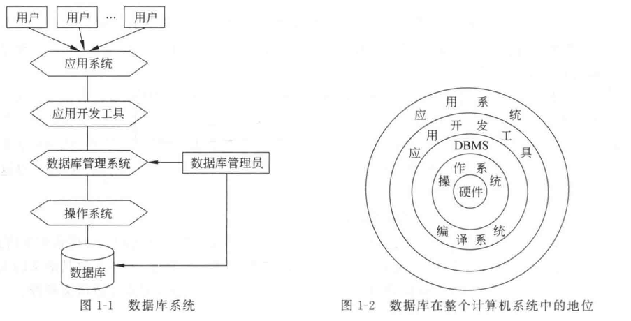
1.1.2 数据库技术的产生与发展
这一小节处理的是数据库技术为什么会出现，以及它是怎样从早期数据处理方式一步步发展过来的。学习时除了记住三个阶段的名字，还要抓住每个阶段如何回答“谁来管理数据、数据能否共享、结构是否稳定”这些问题。
数据管理的含义
数据管理指的是对数据进行分类、组织、编码、存储、检索和维护。- 教材把它看作数据处理的中心问题，因为系统的难点落在长期把数据管理好。
三个发展阶段
随着计算机硬件、软件和应用背景的发展，数据管理经历了人工管理阶段、文件系统阶段、数据库系统阶段。
| 比较项 | 人工管理阶段 | 文件系统阶段 | 数据库系统阶段 |
|---|---|---|---|
| 应用背景 | 科学计算 | 科学计算、管理 | 大规模管理 |
| 硬件背景 | 无直接存取存储设备 | 磁盘、磁鼓 | 大容量磁盘 |
| 软件背景 | 无操作系统 | 有文件系统 | 有 DBMS |
| 处理方式 | 批处理 | 联机实时处理、批处理 | 联机实时处理、分布式处理、批处理 |
| 数据管理者 | 人 | 文件系统 | DBMS |
| 数据面向对象 | 某一应用程序 | 某一应用程序 | 现实世界 |
| 共享程度 | 无共享，冗余极大 | 共享性差，冗余大 | 共享性高，冗余小 |
| 数据独立性 | 完全依赖程序 | 独立性差 | 具有较高物理独立性和一定逻辑独立性 |
| 数据结构化 | 无结构 | 记录内有结构，整体无结构 | 整体结构化 |
| 数据控制能力 | 程序自己控制 | 程序自己控制 | 由 DBMS 提供统一控制 |
人工管理阶段
人工管理阶段的应用背景以科学计算为主。硬件上缺少直接存取存储设备，软件上缺少操作系统和专门管理数据的软件，处理方式以批处理为主。这个阶段的特点如下：
数据不保存。数据往往随着某次计算任务临时输入、临时使用、用后撤走。数据由应用程序自己管理。程序既要规定逻辑结构，又要设计物理结构、存取方式和输入方式，因此程序员负担很重。数据不共享。数据面向单个程序，多程序即使涉及同类数据，也要各自定义、各自维护，因此冗余很大。数据不具有独立性。逻辑结构或物理结构一改，程序就得跟着改。
文件系统阶段
文件系统阶段出现在 20 世纪 50 年代后期到 60 年代中期。应用开始从科学计算扩展到管理，硬件上已经有磁盘、磁鼓，软件上已经有文件系统，处理方式也开始支持联机实时处理。这一阶段的进步如下
- 数据可以长期保存在外存上，支持反复查询、插入、删除和修改。
- 出现了专门的数据管理软件。程序和数据之间由文件系统提供存取方法做转换，程序员可以把大量物理细节交给文件系统处理。
它的局限：
- 一个文件通常还是面向某一应用程序，多个应用之间很难真正共享同一份数据。这种组织方式直接带来两个后果：冗余度大，不一致性容易出现。
记录内部有结构，整体无结构。单个文件内部已经有字段结构，不同文件之间仍是孤立的，很难反映现实世界中对象之间的内在联系。
数据库系统阶段
数据库系统阶段出现在 20 世纪 60 年代后期之后。此时应用规模更大、数据量急剧增长、多用户多应用共享数据的要求越来越强烈，文件系统已经不足以支撑，有如下特征：
数据结构化。数据库不仅描述单个记录内部结构，还描述整体数据结构以及数据之间的联系。
“数据结构化”为数据库系统和文件系统的根本区别。
共享性高，冗余度低。数据从整体角度组织，服务于多个应用，因此重复存储减少，不一致风险也下降。数据独立性高。教材在这里已经提前引出逻辑独立性和物理独立性，这两项独立性依赖后面要讲的映像机制。由 DBMS 统一管理和控制。统一管理不只意味着查询和修改方便，也意味着系统级控制能力被真正建立起来。
DBMS 的四项控制能力
安全性（security）负责保护数据，防止不合法使用导致泄密和破坏。完整性（integrity）负责保证数据正确、有效、相容。并发控制（concurrency control）负责协调多用户同时存取和修改数据库时的相互干扰。恢复（recovery）负责在硬件故障、软件故障、操作失误或恶意破坏之后，把数据库从错误状态带回已知正确状态。
代际发展的线索
- 20 世纪 60 年代末出现第一代数据库，即层次数据库和网状数据库。
- 20 世纪 70 年代出现第二代数据库，即关系数据库。
- 后面又出现面向对象数据库和更多新方向。
- 第一章末尾提到数据库与网络通信、面向对象、并行分布、云计算、人工智能、新硬件技术的结合，这些内容会在第 8 章重新展开。
1.2 数据模型
这一节要解决“现实世界中的对象怎样转换成数据库里可处理的结构”这个问题。现实世界里的事物要先经过抽象，才能进入数据库处理范围。
数据模型 是对现实世界数据和信息的抽象、表示和处理工具，教材把它概括为“现实世界的模拟”。数据模型要同时满足三项要求：
- 较真实地模拟现实世界
- 容易为人理解
- 便于在计算机上实现
教材把模型分成两类。
概念模型按用户观点对数据和信息建模数据模型按计算机系统观点对数据建模。
这两类模型分属不同层次。概念模型更接近现实世界和业务语义，数据模型更接近机器世界和 DBMS 实现。
1.2.1 数据模型的组成要素
数据结构
任何一种数据模型，都是严格定义的概念集合，这些概念首先要能描述系统的静态特性。数据结构 用于描述系统的静态特性。
数据结构可以表述为对象类型的集合。这里的对象分成两类：
- 一类和数据类型、内容、性质有关，例如关系模型中的域、属性、关系；
- 另一类和数据之间的联系有关，例如网状模型中的系型。
教材特别强调，数据结构是刻画模型性质最重要的方面，所以数据库系统往往直接按数据结构类型命名模型，例如层次模型、网状模型、关系模型。
数据操作
数据操作 用于描述系统的动态特性。它指的是对数据库中各种对象实例允许执行的操作集合，至少包括查询和更新。
- 更新又细分为插入、删除、修改。
- 数据模型不仅要说明“能做哪些操作”，还要说明这些操作的确切含义、操作符号、操作规则和实现这些操作的语言。
约束条件
数据的约束条件 是完整性规则的集合。这些规则用于限定符合数据模型的数据库状态和状态变化，从而保证数据正确、有效、相容。
约束条件有两层来源。
- 一层是模型本身的通用约束，例如关系模型中的实体完整性和参照完整性；
- 另一层是具体应用中的语义约束，例如年龄上限、累计不及格门数限制等。
1.2.2 概念模型
为什么需要概念模型
数据库系统从现实世界到机器世界之间，需要经过“信息世界”这一层中介。现实世界先被抽象成不依赖具体 DBMS 的信息结构，这一层就是概念级模型；
之后概念模型再转换成某个 DBMS 支持的数据模型。因而概念模型是现实世界到机器世界的中间层次，也是用户与数据库设计人员交流的语言。
教材对概念模型提出两项要求：
- 语义表达能力强
- 形式简单、清晰，便于用户理解。
信息世界中的基本概念
实体（entity）是客观存在并可相互区别的事物。实体可以是具体的人、事、物，也可以是抽象概念或联系。例如一个职工、一个学生、一个部门、一门课、学生的一次选课、部门的一次订货，都可以看作实体。属性（attribute）是实体具有的某一特性。一个实体通常由若干属性共同刻画。码（key）是唯一标识实体的属性集。这里要抓住“属性集”三个字，码既可能是单属性，也可能是多属性组合。域（domain）是属性的取值范围，它给出的是属性允许取值的集合边界。实体型（entity type）是同类实体的抽象描述，用“实体名 + 属性名集合”来定义。实体集（entity set）是同一实体型的全部实例集合。
联系的类型
联系（relationship）既包括实体内部属性之间的联系，也包括实体型之间的联系。课程里更常考实体型之间的联系。两个实体型之间的联系分成三类：一对一联系、一对多联系、多对多联系。- 一对一联系表示 A 中每个实体在 B 中至多对应一个实体，同时 B 中每个实体在 A 中也至多对应一个实体。
- 一对多联系表示 A 中每个实体在 B 中可对应多个实体，B 中每个实体在 A 中至多对应一个实体。
- 多对多联系表示 A 和 B 两侧都允许一个实体对应对方多个实体。
一对一联系是一对多联系的特例，一对多联系又是多对多联系的特例。
联系不限于两个实体型之间，三个或更多实体型之间同样可以形成联系。
同一个实体集内部也可以存在联系，例如学生之间的领导与被领导关系，这类联系在做 E-R 图时容易漏掉。
E-R 方法
概念模型最常用的表示方法是 实体-联系方法（E-R 方法）。
E-R 图中，实体型用矩形表示，属性用椭圆表示，联系用菱形表示，联系边上标出 1:1、1:n、m:n 等联系类型。
- 联系本身也可以有属性。这是一个很容易被忽略的小点。联系具有独立业务含义时，就要给联系加属性，例如“选修”联系上的成绩。
- 当实体和属性很多时，为了图面清楚，可以把“实体及其属性”和“实体及其联系”分成两张 E-R 图表达。
- E-R 图独立于具体 DBMS，是各种数据模型的共同基础，它比具体数据模型更抽象，也更接近现实世界。
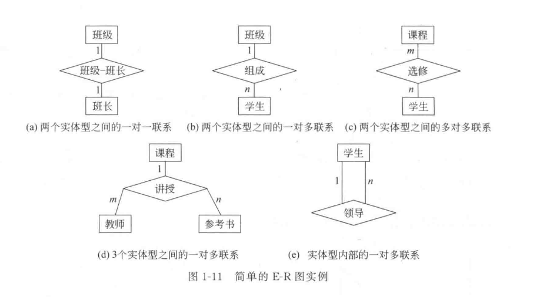
1.2.3 常用的数据模型
格式化模型的共同起点
教材在这里区分 格式化模型 和 关系模型。层次模型、网状模型统称格式化模型。
- 格式化模型中，实体用记录表示，实体间联系转换成记录之间的两两联系。
- 格式化模型数据结构的基本单位是
基本层次联系，也就是两个记录以及它们之间的一对多联系。 - 在基本层次联系中，始点记录叫
双亲结点（parent），终点记录叫子女结点（child）。
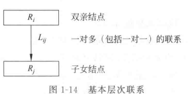
层次模型
层次模型是数据库系统中最早出现的数据模型，它用 树形结构 表示各类实体以及实体间联系。它适合表达本身带有自然层次关系的对象，例如行政机构、家族关系。
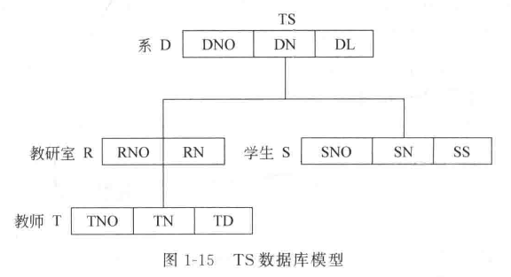
层次模型存在两个结构限制，这两个限制直接决定了它只能直接处理一对多联系。：
- 根结点是唯一缺少双亲的结点
- 根之外其他结点各自对应一个双亲。
在层次模型中，每个结点表示一个记录类型，连线表示记录类型之间的父子联系，字段描述记录类型的属性。
- 各记录类型和字段都要命名，同一记录类型中的字段名不得重复。
- 记录类型可以定义排序字段，也叫
码段。码段值唯一时，就能唯一标识记录值。
层次模型还有一个关键语义特征：任何给定记录值都要沿着路径来看，才能显示完整意义，子女记录要依附双亲记录存在。
多对多联系怎样处理
多对多联系在层次模型中无法直接表示，要先分解成一对多联系。教材给出两种方法：
冗余结点法：增设两个冗余节点将多对多转为多个一对多。优点是结构清楚，允许结点改变存储位置；缺点是占用额外存储空间，并可能带来潜在不一致。虚拟结点法：将冗余节点转换为虚拟节点，虚拟节点就是一个指向代替节点的指针。优点是节省空间，减少潜在不一致；缺点是原结点位置变化后，虚拟结点中的指针也要跟着修改。
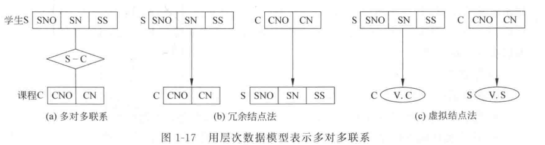
操纵与存储特点
层次模型的操纵：
- 查询
- 插入：插入时，缺少双亲结点值就无法插入子女结点值
- 删除：删除双亲结点值时，相应子女结点值会被同时删除
- 更新：更新时，如果同一对象以冗余方式保存，就要同步更新所有相关记录，才能保持一致性
常见的存储方法有两类：
邻接法：邻接法靠物理位置相邻表示层次顺序，按照层次树前序穿越的顺序把所有记录值依次邻接存放链接法：链接法靠指针表示层次联系，用指针反应数据之间的层次关系
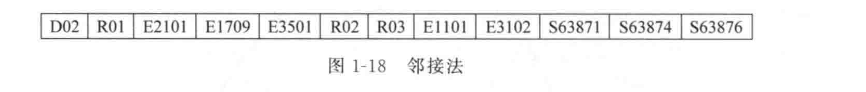
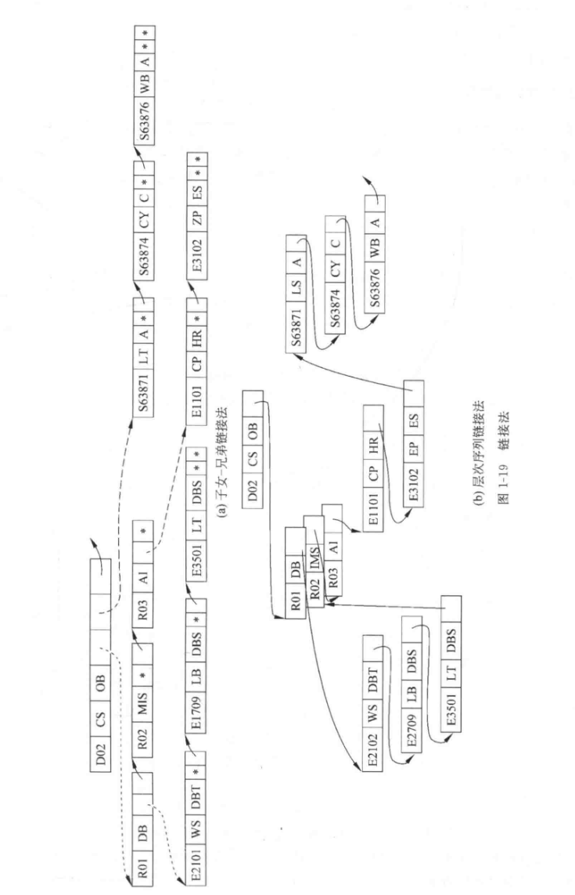
优点与局限
优点主要有三个：
- 模型本身较简单
- 对固定层次联系的应用性能较好
- 完整性支持较强。
局限也很明显：
- 表达多对多和多双亲联系笨拙
- 插入删除限制较多
- 查询子女常常要先经过双亲
- 命令形式趋于程序化。
网状模型
网状模型放宽了层次模型的两个限制，允许多个结点缺少双亲，也允许结点有多个双亲。它还允许两个结点之间存在多种联系，也就是复合联系。
因而网状模型能更直接地描述现实世界中的非树形结构。
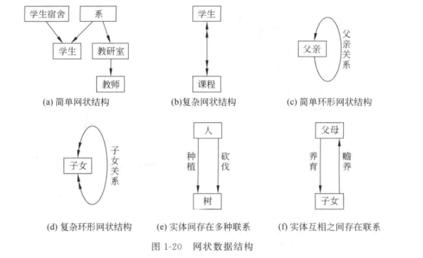
层次模型实际上是网状模型的一个特例。
在网状模型中，结点仍表示记录类型，字段仍表示属性，连线仍表示记录类型之间的联系。它可以表示简单网状结构、复杂网状结构、环形结构以及多种联系并存的结构。
操纵特点
网状模型同样支持查询、插入、删除和更新。
它和层次模型的关键差别在于：网状模型允许插入尚未确定双亲的子女记录，也允许只删除双亲记录而保留子女记录。
由于网状模型能直接表达非树形结构，无须像层次模型那样引入冗余结点，因此更新时通常只需修改指定记录。
存储与优缺点
网状模型常见的存储方式仍以链接法为主，包括单向链接、双向链接、环状链接、向首链接等，也有指针阵列法、索引法等实现方式。
- 优点：描述现实世界更直接，特别适合多对多和多双亲场景；性能和存取效率较高。
- 局限：是 DDL(数据定义语言) 较复杂；数据独立性较差，访问数据时常常需要指明存取路径。
关系模型
关系模型由 Codd 在 1970 年系统提出，后来成为数据库系统中最重要、最流行的数据模型。
在用户看来，关系模型的逻辑结构是一张二维表，由行和列组成。这里涉及几个基础概念：
- 关系对应表
- 元组对应行
- 属性对应列
- 主码：图中某个属性组，可以唯一确定元组
- 域：属性取值范围。
- 分量：元组中的一个属性值
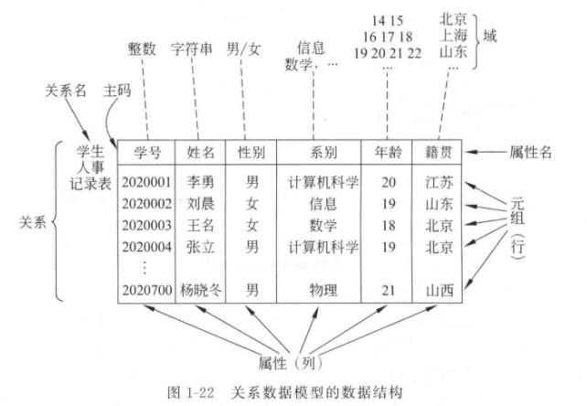
关系模型的重要优势，在于用统一结构表示实体和联系，降低了用户面对数据结构时的复杂度。关系模型的优点如下：
- 结构统一
- 操作有严格数学基础
- 用户按内容存取数据时，沿物理路径逐步导航的负担显著减轻。
第一章对关系模型只做轮廓介绍，更详细的结构、完整性、关系代数、关系演算和 SQL 会在第 2 章以后系统展开。
1.3 数据库系统结构
这一节讨论的是数据库系统怎样分层。教材把这里分成两块来看，一块是模式结构，一块是体系结构。前者偏向逻辑抽象，后者偏向系统组织。
1.3.1 数据库系统的模式结构
型、值、模式、实例
- 型描述某类数据的结构和属性
- 值是型的具体赋值。
模式（schema）是数据库中全体数据的逻辑结构和特征描述，它只涉及型，不涉及具体值。- 模式的一个具体值叫
实例（instance）。模式相对稳定，实例相对变动。
这一区分很重要，因为后面讨论外模式、模式、内模式时，主要处理的是结构层次，对象落在某一时刻的具体数据值之上的抽象层。
三级模式
数据库系统通常采用三级模式结构，并提供两级映像功能。
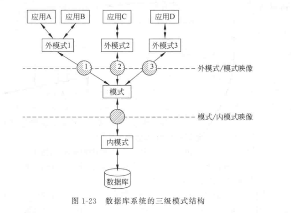
模式 又称逻辑模式，它是数据库全体数据的逻辑结构和特征描述，是所有用户的公共数据视图。一个数据库对应一个模式。定义模式时，除了数据项和联系，还要定义安全性和完整性要求。
外模式 又称子模式或用户模式，它是某个用户或某类应用所见局部数据的逻辑结构和特征描述。
一个数据库可以有多个外模式。不同用户对同一全局数据，在外模式中的结构、类型、长度甚至保密级别都可能不同。
同一外模式可以为同一用户的多个应用系统使用，一个应用程序对应一个外模式。
外模式还是数据库安全性的一个重要措施，因为用户只能看见自己外模式中的数据。
内模式 又称存储模式，它描述数据的物理结构和存储结构，例如顺序存储、B 树、hash、索引组织、压缩、加密、记录格式等。
一个数据库对应一个内模式。
两级映像与数据独立性
外模式/模式映像 定义局部逻辑结构与全局逻辑结构之间的对应关系。当模式改变时，通过修改外模式/模式映像，就能让外模式保持稳定，这形成了 逻辑数据独立性。
模式/内模式映像定义全局逻辑结构与物理存储结构之间的对应关系。- 当存储结构改变时，通过修改模式/内模式映像，就能让模式保持稳定，这形成了
物理数据独立性
三个层次之间的依赖关系：模式是中心，内模式依赖模式而独立于外模式，外模式定义在模式之上而独立于内模式。
- 应用程序编制在外模式之上，因此二级映像最终保证的是应用程序的稳定性。
1.3.2 数据库系统的体系结构
体系结构关注什么
模式结构讨论的是逻辑抽象层次，体系结构讨论的是系统从最终用户角度看到的组织方式。
教材在这一节列出五种结构：单用户结构、主从式结构、分布式结构、客户-服务器结构、云结构。
单用户结构
单用户结构是早期最简单的数据库系统。应用程序、DBMS 和数据都装在一台机器上，由一个用户独占。
它的直接问题，是数据共享能力不存在，因此不同部门会重复保存相同基础信息。
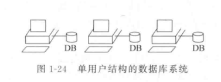
主从式结构
主从式结构是一个主机带多个终端的多用户结构。数据库系统集中在主机上，所有处理任务由主机完成，用户通过终端并发访问。
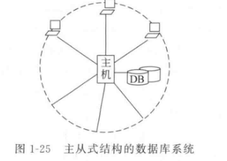
- 它的优点是简单，数据易于管理和维护。
- 它的局限也很清楚：终端用户多时主机会成为性能瓶颈，主机发生故障时，整个系统都无法使用。
分布式结构
分布式结构指数据库逻辑上是一个整体，物理上分布在网络不同结点。
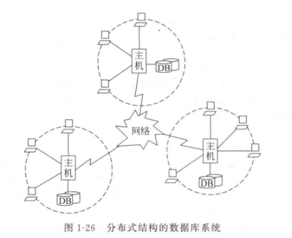
- 在这种结构中，每个结点既能处理本地数据库，也能参与全局数据库处理。
- 它适应地理分散组织的需求，代价是处理、管理、维护更复杂，远程访问效率也会受到网络交通影响。
客户-服务器结构
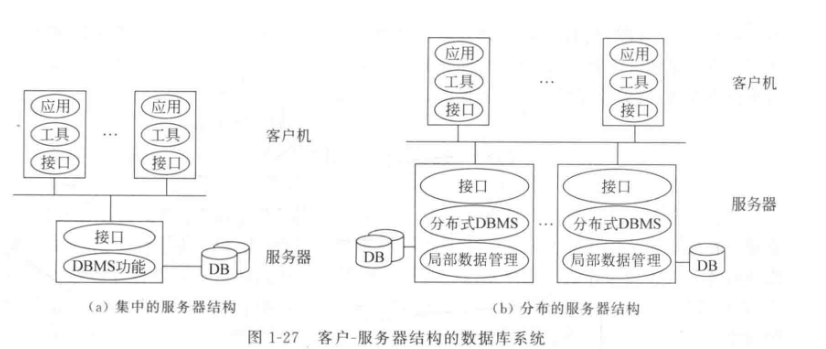
客户-服务器结构把 DBMS 功能和应用程序功能分开。服务器专门执行 DBMS，客户机负责外围应用和用户交互。优点如下：
- 把结果返回给客户机，网络中传递的是结果数据，因此网络传输量显著下降。
- 开放性较强，软硬件平台组合更灵活，应用程序可移植性更强。
- 还可以分成集中的服务器结构和分布的服务器结构。前者容易形成单点瓶颈，后者又会引入分布式管理难题。
云结构
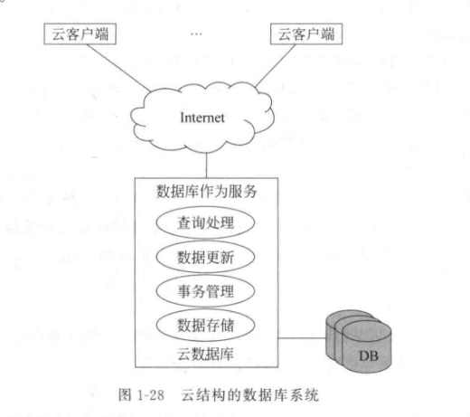
云结构是应对数据量激增、并发波峰波谷明显、企业自建运维成本上升而发展的结构。云结构把数据库能力作为服务提供，覆盖数据存储、事务管理、数据更新和查询处理。
云数据库早期多运行在单节点高配置机器上，后来的云数据库更多运行在机群上的并行数据库系统中，强调动态伸缩和按需分配资源。
1.4 数据库管理系统
这一节要把 DBMS 这个名字真正拆开。前面已经知道 DBMS 是数据库系统的核心软件，这里进一步看它具体负责什么、内部怎样工作。
1.4.1 数据库管理系统的功能与组成
DBMS 的六项功能
数据定义包括定义模式、内模式、外模式、两级映像以及各类约束条件。数据操纵包括查询、插入、修改、删除等基本操作。数据库运行管理是运行时核心，覆盖并发控制、安全性检查、完整性检查、内部维护等工作。数据组织、存储和管理要求 DBMS 组织和管理数据字典、用户数据、存取路径等多类数据，并决定文件结构和存取方式。数据库的建立和维护包括初始数据输入与转换、转储、恢复、重组织、重构造、性能监视与分析。数据通信接口负责与其他 DBMS 或文件系统通信，并完成数据转换。
DBMS 的内部组成
数据定义语言及其翻译处理程序。DDL 负责定义各级模式和约束，翻译后形成目标外模式、目标模式、目标内模式，并存入数据字典。
数据字典又叫系统目录，是 DBMS 存取和管理数据的基本依据。
数据操纵语言及其编译或解释程序。DML 用于执行查询和更新。
DML 还区分为
宿主型 DML和自主型 DML。宿主型 DML 要嵌入高级语言中使用，自主型 DML 能独立交互执行。
数据库运行控制程序。它包括系统初启、文件读写、存取路径管理、缓冲区管理、安全控制、完整性检查、并发控制、事务管理、日志管理等程序。实用程序。教材列出数据装入、转储、恢复、性能监测、再组织、数据转换、通信等实用程序。
怎样评价一个 DBMS
一个设计良好的 DBMS 应当具备友好界面、较完备功能、较高效率、清晰系统结构和开放性。
这里的 开放性 指数据库设计人员能够方便地把外部工具模块加入 DBMS，并让它们与 DBMS 紧密配合运行。
1.4.2 数据库管理系统的工作过程
读取一条数据时会发生什么
“读取一条数据”时的十个步骤，这一串流程最能说明 DBMS 是怎样站在用户和操作系统之间工作的。
- 应用程序先向 DBMS 发出读数据命令。
- DBMS 先做语法检查和语义检查，调用对应外模式，检查存取权限，再决定是否执行。
- 接着调用模式，根据外模式/模式映像，确定需要读取哪些逻辑记录。
- 然后调用内模式，根据模式/内模式映像，确定从哪个文件、用什么存取方式、读取哪些物理记录。
- DBMS 再向操作系统发出读物理记录命令。
- 操作系统执行具体读操作。
- 数据从数据库存储区送到系统缓冲区。
- DBMS 再依据外模式/模式映像，把数据组织成应用程序所需的记录格式。
- 记录随后从系统缓冲区送到用户工作区。
- 最后由 DBMS 返回执行状态信息。
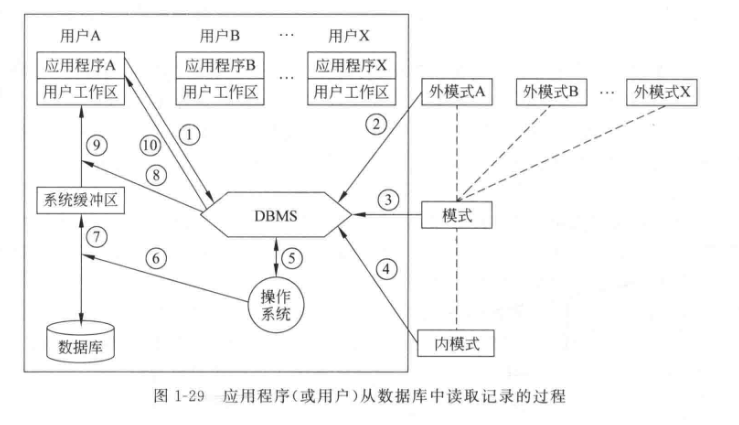
1.5 数据库工程与应用
1.5.1 数据库设计的目标与特点
数据库设计要完成什么
数据库设计的任务，是在 DBMS 支持下，按照应用要求，为某个部门或组织设计结构合理、使用方便、效率较高的数据库及其应用系统。
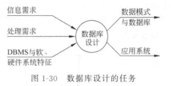
结构设计与行为设计
数据库设计包含两方面内容：结构设计 和 行为设计。
- 结构设计面向数据库框架，行为设计面向应用程序和事务处理。
传统软件工程方法偏重处理过程，常把数据结构设计推后，这种思路不适合数据库应用系统。原因在于文件系统里的文件多半属于单个应用，数据库系统里的模式则是共享的、稳定的、长期存在的结构。
数据库结构设计是否合理，会直接影响后续各个处理过程的性能和质量。结构特性和行为特性还要放在一起设计。静态结构和动态处理分离后，数据和程序难以结合，数据库设计复杂性会上升。
1.5.2 数据库设计方法
规范设计法
数据库设计复杂性的来源为现实世界本身的复杂性。
- 常用数据库设计方法总体上都属于
规范设计法，也就是运用软件工程思想和数据库设计理论来制定设计准则和设计规程。在规范设计法中，逻辑数据库设计和物理数据库设计是核心与关键。 - 逻辑数据库设计负责设计全局逻辑结构和各用户局部逻辑结构。
- 物理数据库设计负责在逻辑结构确定后设计存储结构和实现细节。
常见划分与实现技术
- 教材还列了几种代表性划分方法，例如新奥尔良方法、Yao 方法、Palmer 的逐步方法。
- 这一小节同时提到不同阶段的具体实现技术，例如基于 E-R 模型、基于第三范式、基于 UML 的设计方法。
- 规范设计法在实施时还可分成
手工设计和计算机辅助数据库设计。后者依赖设计工具，能够减轻工作量、提高速度和质量。
1.5.3 数据库设计步骤
六个阶段
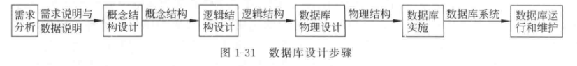
分为需求分析、概念结构设计、逻辑结构设计、物理设计、数据库实施、数据库运行和维护。
需求分析是基础，也是最困难、最费时的一步。它同时分析数据需求和处理需求，结果质量会直接影响后续全部阶段。概念结构设计的任务，是在独立于具体 DBMS 的层次上描述数据库逻辑结构，形成概念模型。- 教材把概念结构设计称为整个数据库设计的关键，因为它承担着综合、归纳和抽象用户需求的任务。
逻辑结构设计把概念结构转换成所选 DBMS 支持的数据模型，并进一步优化。数据库物理设计为逻辑数据模型选择最适合应用环境的物理结构，包括存储结构和存取方法。数据库实施阶段要真正建库、编写和调试应用程序、组织数据入库并试运行。数据库运行和维护阶段则是在正式投入运行后，对系统持续评价、调整和修改。
设计过程的三个补充要求
一个完善的数据库应用系统往往不会沿着单次线性路径完成，设计过程会在这六个阶段之间不断往返。
- 要充分调动用户积极性。用户最了解业务和需求，积极参与能缩短需求分析时间，提高抽象准确度，减少返工。
- 充分考虑系统可扩充性。应用环境和技术条件会变化，好的设计应允许在原基础上做扩展。
- 要考虑旧系统向新系统的平稳迁移，包括旧数据迁移、用户界面风格延续和再培训成本控制。
1.5.4 数据库系统的组成
系统中的人员与层次
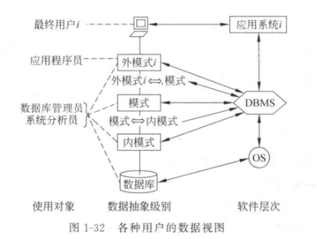
一个具体 DBMS 安装在某个操作系统之上，再配合具体应用系统，才形成完整数据库系统。数据库系统中存在多种用户，他们看到的数据库抽象层次各不相同。
最终用户通过应用系统界面完成业务活动，数据库模式结构对他们是透明的。应用程序员以外模式为基础编写应用程序。数据库映像机制让他们可以把底层存储细节交给系统内部实现。系统分析员负责需求分析与规范说明，因此要从整体上理解系统，参与软硬件配置和各级模式的概要设计。
DBA 的职责
数据库管理员（DBA） 是数据库系统中最重要的角色之一，职责如下
- 设计与定义数据库系统，参与从概念模式到内模式的全部设计。
- 帮助最终用户使用数据库系统，包括培训和答疑。
- 监督与控制数据库系统使用和运行，包括权限控制、问题处理和审计信息收集。
- 改进和重组数据库系统、调优性能。DBA 要监测空间利用率和处理效率，并根据实际运行情况修改参数、改善设计、定期重组织数据库。
- 转储与恢复数据库。DBA 要定义并实施后援和恢复策略，保证故障发生后能尽快恢复到正确状态。
- 重构数据库。当应用需求增大或变化时，DBA 要负责较大规模的模式和内模式调整。
第二章 关系数据模型
本章介绍关系模型的基本概念，即关系模型的数据结构、关系操作和关系的完整性
2.1 关系数据库概述
关系数据库系统是支持关系模型的数据库系统。 关系模型的内容可以分成三个方面：
- 第一，关系数据结构，说明数据以什么形式组织；
- 第二，关系操作，说明用户可以怎样查询和更新数据；
- 第三，完整性约束，说明数据应满足哪些语义规则。
在用户视角下，关系模型中的数据结构表现为二维表。
表由行和列构成，每一行表示一个对象或一次联系，每一列表示对象的某个属性。二维表形式看起来简单，但它能够表达实体本身，也能够表达实体之间的联系。
例如“导师”“学生”“专业”都可以成为表中的属性，导师和学生之间的指导关系也可以通过一张表表达。
关系模型的操作采用集合操作方式，操作对象和操作结果都可以看成集合。
一次关系操作通常面向一组记录，这种方式称为一次一集合方式（set-at-a-time）。许多较早的数据模型采用一次一记录方式（record-at-a-time），用户需要按记录逐条处理。关系模型把操作提升到集合层面，查询表达更加接近“我要什么数据”这一层含义。
关系模型中的常见操作包括两大类。
- 第一类是查询操作，典型操作包括选择、投影、连接、除、并、交、差等。
- 第二类是更新操作，包括增加、删除、修改。
关系数据语言可以分为关系代数语言、关系演算语言和同时具有关系代数与关系演算特点的语言。
- 关系代数用运算符表达查询过程
- 关系演算用谓词表达查询条件。
- 关系演算又分为元组关系演算和域关系演算。
三类抽象语言在表达能力上等价，都可以作为衡量实际查询语言能力的理论基础。
实际数据库系统还会提供附加功能，例如数据聚集、关系赋值、算术运算等。真实系统使用的查询语言属于高度过程化程度较低的语言，用户描述所需结果，DBMS 负责选择存取路径和执行计划。SQL 处在关系代数和关系演算之间，同时提供查询、数据定义语言 DDL、数据操纵语言 DML、数据控制语言 DCL 等能力，因此成为关系数据库的标准语言。
完整性约束负责保证数据库中的数据符合现实语义。教材这里提到三类完整性：实体完整性、参照完整性、用户定义完整性。
实体完整性关注每个实体能被明确区分，通常与主码有关；参照完整性关注表之间的引用关系保持一致，通常与外码有关；用户定义完整性来自具体业务规则，例如年龄范围、成绩范围、状态取值范围等。
2.2 关系数据结构
域
域是一组具有相同数据类型的值的集合。可以把域理解为某个属性允许取值的范围。
例如整数集合、实数集合、长度小于 25 字节的字符串集合、大于等于 0 且小于等于 100 的正整数集合，都可以成为域。
域的作用在于给属性取值建立边界。某个属性属于哪个域，意味着这个属性在每个元组中的取值都来自该集合。例如“成绩”可以来自 0 到 100 的整数域，“姓名”可以来自一定长度限制内的字符串域。后续的笛卡儿积、关系和关系模式都建立在域的概念之上。
笛卡儿积：把多个域组合成元组全集
给定一组域 \(D_1,D_2,\cdots,D_n\)，这些域可以完全相同，也可以部分相同。它们的笛卡儿积定义为：
其中，\((d_1,d_2,\cdots,d_n)\) 称为一个 \(n\) 元组，简称元组；每个 \(d_i\) 称为一个分量。笛卡儿积表示所有可能组合形成的元组集合。
若每个域都是有限集，\(D_i\) 的基数为 \(m_i\)，则笛卡儿积的基数为：
这个公式表示总组合数等于各个域元素个数的乘积。
Example
教材给出的例子中：
三个域的基数依次是 2、2、3，所以笛卡儿积 \(D_1\times D_2\times D_3\) 中共有 \(2\times2\times3=12\) 个元组。每个元组都形如“导师，专业，学生”，例如 \((张清玫, 计算机专业, 李勇)\)、\((刘逸, 信息专业, 王名)\)。
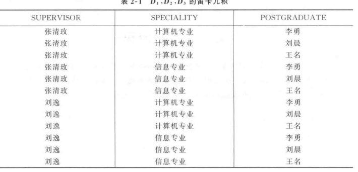
从表格角度看，笛卡儿积可以排成一张二维表，表中每一行对应一个元组，每一列对应一个域。
笛卡儿积给出了全部可能组合。现实业务通常只承认其中一部分组合具有实际意义，于是引出“关系”。
关系：笛卡儿积中具有实际意义的子集
在域 \(D_1,D_2,\cdots,D_n\) 上，笛卡儿积 \(D_1\times D_2\times\cdots\times D_n\) 的子集称为在这些域上的关系，记作：
其中 \(R\) 是关系名，\(n\) 是关系的目或度（degree）。
关系中的每个元素是一个元组，通常用 \(t\) 表示。
当 \(n=1\) 时，称为单元关系；当 \(n=2\) 时，称为二元关系。
由于关系是笛卡儿积的子集，关系也可以用二维表表示。表的每一行对应一个元组，表的每一列对应一个属性。由于不同列可能来自同一个域，为了区分语义，需要给每一列起属性名。
例如导师和研究生都可以来自 PERSON 域，但二者在表中的语义不同，所以可以命名为 SUPERVISOR-PERSON 和 POSTGRADUATE-PERSON。
教材中的 SAP 关系可以写为：
这里 SAP 表示“导师—专业—研究生”之间的关系（用英文首字母）。假设导师与专业是一对一关系，导师与研究生是一对多关系，那么 SAP 表中会出现若干有实际意义的三元组。
例如张清玫指导李勇和刘晨，刘逸指导王名，表中就可以出现这三条记录。此时 SAP 关系取自 12 个理论组合中的一部分。
码：用属性组标识元组
关系中的元组需要能够被区分。若关系中的某一属性组能够唯一标识一个元组，并且它的任何真子集都缺少这种唯一标识作用，则该属性组称为 候选码（candidate key）。候选码可以包含一个属性，也可以包含多个属性。
也就是唯一的特征，比如你的身份证号
一个关系可能有多个候选码，选定其中一个作为 主码（primary key）。包含在任一候选码中的属性称为主属性（prime attribute），候选码之外的属性称为码外属性（non-key attribute）。在极端情形下，关系模式中的全部属性共同构成候选码，这种情形称为全码（all-key）。
Example
以 SAP 关系为例，教材假设研究生姓名互相区分，那么 POSTGRADUATE 的每个取值都能唯一标识一个元组，因此 POSTGRADUATE 可以作为 SAP 的主码。实际数据库设计中，姓名常常会重名，因此真实系统通常会使用学号这类稳定标识作为主码。
关系的三种类型
关系可以分为基本关系、查询表和视图表。
- 基本关系又称基本表或基表，它是实际存储数据的逻辑表示。
- 查询表是查询结果对应的表，通常由查询过程临时产生。
- 视图表由基本表或其他视图表导出，是虚表，系统保存的是视图定义，查询时再根据定义生成结果。
这一区分有助于理解数据库中的“表”存在多种形态。用户在 SQL 中看到的表，有些对应实际存储的数据，有些对应查询结果，有些对应由定义推导出的视图。
基本关系的六条性质
关系模型中的基本关系具有若干性质，这些性质来自集合思想和规范化要求。
- 第一，列是同质的。每一列中的分量来自同一个域，表示同一类数据。例如 SPECIALITY 列中的值都表示专业。
- 第二，不同列可以来自同一个域，但需要使用不同属性名加以区分。例如 SUPERVISOR 和 POSTGRADUATE 都可以来自 PERSON 域，二者仍然承担不同语义。
- 第三，列的顺序可任意交换。关系是属性集合上的元组集合，关系语义由属性名和元组集合决定。在许多实际 DBMS 中，插入新属性时会追加在最后一列；一些小型数据库产品也会保留列顺序差异，这是产品实现层面的选择。
- 第四，任意两个元组应当存在差异。关系来源于集合，集合中的元素具有唯一性，所以关系表中理论上排除完全相同的两个元组。许多实际 DBMS 在用户缺少约束条件时仍可能保存重复行，这是实现层面对理论模型的放宽。
- 第五，行的顺序可任意交换。关系中的元组属于集合元素，关系语义由元组集合决定。某些系统在插入元组时会把新行放到最后，这仍属于存储和显示层面的行为。
- 第六，每个分量都应是原子数据项。也就是说，表中某个单元格只保存一个单一值。满足这一要求的关系称为规范化关系，简称范式（normal form）。例如教材中的表 2-3 让 POSTGRADUATE 分量一次保存 PG1、PG2 两个值，这样一个单元格承载多个研究生值，违背原子性要求，因此达成不了规范化关系的要求。
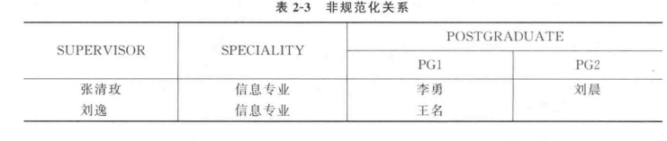
关系模式：对关系结构的描述
关系本身是元组集合，关系模式则是对关系结构的描述。
一个关系需要说明它由哪些属性构成，这些属性来自哪些域，属性到域之间如何映射，以及属性之间存在哪些数据依赖和完整性约束。
教材给出的形式化表示为：
其中，\(R\) 表示关系名；\(U\) 表示组成该关系的属性名集合；\(D\) 表示属性组 \(U\) 中各属性所来自的域；\(DOM\) 表示属性到域的映射集合；\(F\) 表示属性间数据依赖关系集合。
本章主要讨论关系名、属性名、域名以及属性到域的映射，数据依赖会在后续章节展开。因此关系模式通常简记为：
或者写成：
其中 \(A_1,A_2,\cdots,A_n\) 是属性名。
例如 SAP 关系模式可以写为：
关系模式描述结构，关系描述某一时刻的具体内容。关系模式相对稳定，关系会随着插入、删除、修改操作发生变化。可以把关系模式理解为表结构定义，把关系理解为该结构下某个时刻的元组集合。
关系数据库：关系模式与关系实例的整体集合
在关系模型中，实体以及实体间联系都用关系表示。在一个给定的现实世界领域中，所有实体和实体联系对应的关系集合构成关系数据库。
关系数据库有型和值之分。
- 关系数据库的型称为关系数据库模式，它是对数据库结构的描述，包括若干域的定义，以及在这些域上定义的若干关系模式。
- 关系数据库的值称为关系数据库实例，它是在某一时刻这些关系模式对应的具体关系集合。
因此，从整体层次看，关系数据库模式描述“有哪些表、每张表有哪些属性、属性来自哪些域、表之间具有哪些约束”；关系数据库实例描述“当前时刻这些表里实际有哪些元组”。数据库系统运行过程中，模式相对稳定，实例随数据操作而变化。
2.3 关系的完整性
关系模型把实体和实体之间的联系都放进关系表中，表中的每一行代表一个元组，元组中的每个分量代表某个属性的取值。数据一旦进入表，就要满足一定规则。关系的完整性规则正是用来约束这些取值，使数据库中的记录能够被识别、能够相互引用，并且符合具体业务场景。
关系模型中的完整性约束主要分为三类：实体完整性、参照完整性和用户定义完整性。
- 实体完整性解决“每一行能否被唯一识别”的问题；
- 参照完整性解决“一张表引用另一张表时，引用值是否真实存在”的问题；
- 用户定义完整性解决“具体业务还要求哪些取值范围和语义规则”的问题。
实体完整性：保证每个实体能够被唯一识别
一个基本关系通常对应现实世界中的一个实体集。例如学生关系对应学生集合，专业关系对应专业集合。现实世界中的每个实体都应当可以区分。关系模型中承担这种区分作用的是主码。
主码由一个或多个属性组成。主码的作用是唯一标识关系中的一个元组。由于主码承担唯一标识作用，主码中的每个属性都必须取确定值。空值表示取值未知或该位置无适用值。主码属性一旦为空，数据库就失去了判断该元组身份的依据，实体也就难以被可靠区分。
实体完整性规则：若属性A是基本关系R的主属性，则属性A禁止为空。
这里的“主属性”指包含在任一候选码中的属性。一个主码可以由一个属性构成，也可以由多个属性共同构成。实体完整性约束所有主属性，约束范围覆盖复合主码中的每一个属性。
Example
以关系
为例，若假设研究生姓名互相区分，并把 POSTGRADUATE 作为主码，那么 POSTGRADUATE 属性的每个取值都必须明确。某条记录的 POSTGRADUATE 为空时，这条记录所表示的研究生实体难以确定，因此违反实体完整性。
再看学生选课关系：
若主码为 \((学号, 课程号)\)，则“学号”和“课程号”两个属性都属于主属性。实体完整性要求二者都必须有确定取值。原因在于，一条选课记录要靠“某个学生选了某门课”来唯一识别。学号为空时，难以知道是哪名学生；课程号为空时，难以知道是哪门课程；任何一个主属性为空，整条选课记录的身份都难以确定。
这一规则的核心可以归纳为：关系表中的每一行都要有可识别身份，承担身份识别功能的属性必须有明确取值。
参照完整性：保证表与表之间的引用有效
现实世界中的实体之间经常存在联系。例如学生属于某个专业，学生选修某门课程，班级中的班长也是一名学生。关系模型用关系表描述这些实体和联系，因此表之间会出现引用关系。
参照完整性围绕“外码”展开。设 \(F\) 是基本关系 \(R\) 中的一个属性或属性组，\(F\) 在 \(R\) 中承担引用作用；若 \(F\) 与另一个基本关系 \(S\) 的主码 \(K_s\) 相对应，则称 \(F\) 是 \(R\) 的外码。关系 \(R\) 称为参照关系，关系 \(S\) 称为被参照关系或目标关系。
形式上可以写成：
于是 \(F\) 的取值必须服从目标关系 \(S\) 中主码的取值情况。目标关系和参照关系可以是两张表，也可以是同一张表。
Example
第一个例子是学生关系引用专业关系：
专业关系中，“专业号”是主码。学生关系中也有“专业号”属性，它表示该学生属于哪个专业。学生关系的“专业号”引用专业关系的主码“专业号”，所以学生关系中的“专业号”是外码。
这时每个学生记录中的专业号只能有两类合法状态。第一类是空值，表示该学生暂时尚未分配专业。第二类是专业表中已经存在的某个专业号，表示该学生属于一个真实存在的专业。若学生表中出现一个专业号，而专业表中缺少对应记录，就等于把学生分配到了一个未定义专业，参照完整性被破坏。
第二个例子涉及三张表：
学生关系的主码是学号，课程关系的主码是课程号。选修关系中的“学号”引用学生关系的主码，“课程号”引用课程关系的主码，因此二者都是选修关系的外码。
由于选修关系中的 \((学号, 课程号)\) 又共同构成选修关系的主码，实体完整性和参照完整性会同时作用在这两个属性上。实体完整性要求学号和课程号都必须取确定值；参照完整性进一步要求学号必须来自学生表中已有的学号，课程号必须来自课程表中已有的课程号。这样才能保证一条选课记录确实对应一名已登记学生和一门已登记课程。
第三个例子是同一关系内部的参照关系：
其中“学号”是主码，“班长”表示该学生所在班级班长的学号。班长本身也是学生，所以“班长”属性引用本关系中的“学号”属性。此时同一张学生表既是参照关系，也是被参照关系。
在这个例子中，“班长”的合法取值也有两类。第一类是空值，表示该学生所在班级暂时尚未指定班长。第二类是学生2表中某个真实存在的学号，表示班长对应一名已登记学生。若“班长”列出现一个学生2表中缺少的学号，则引用失效。
外码和被引用的主码在语义上相对应，取值来自同一类域。它们的属性名可以相同，也可以不同。
例如学生表中的“专业号”和专业表中的“专业号”同名；学生2表中的“班长”和“学号”名称不同，但“班长”存放的内容实际是学号。
在实际数据库设计中，为了便于阅读，外码通常会采用能体现语义的名称。
比如“班长”比再次使用“学号”更能说明该列含义。关键点在于：属性名可以变化，引用关系要明确，外码取值要能对应目标关系的主码值。
参照完整性规则:若F是关系R的外码，并与关系S的主码 \(K_s\) 相对应，则R中每个元组在F上的取值只能为空值，或等于S中某个元组的主码值。
在选修关系中，外码同时又属于主码，所以空值这一选项被实体完整性排除，最终只能取学生表和课程表中真实存在的主码值。
用户定义完整性：保证数据符合具体业务规则
实体完整性和参照完整性适用于关系数据库系统的一般场景。除此之外，不同业务还会提出专门约束。用户定义完整性就是针对某个具体应用环境设定的约束条件，用来表达该应用中的数据语义。
例如，成绩属性的取值范围可以限定在 \(0\sim100\)；性别属性可以限定为若干指定取值；年龄属性可以限定在合理范围内；某个非主属性也可以设定为必填；某个属性可以要求取值唯一。
不同学校、公司、业务系统会根据自身规则设置这些约束。
用户定义完整性的重要意义在于，它把业务规则放入数据库系统统一管理。这样数据在写入或修改时就能直接接受约束检查，减少应用程序各自处理规则带来的差异风险。
Note
设有如下三张表：
在学生表中，学号作为主码，学号必须取确定值，这体现实体完整性。
学生表中的专业号引用专业表中的专业号，专业号可以为空，也可以取专业表中已有的专业号，这体现参照完整性。
学生年龄限定在合理区间，性别限定为规定取值，姓名设为必填，这些属于用户定义完整性。
在选修表中，\((学号, 课程号)\) 共同作为主码，因此学号和课程号都必须取确定值。同时，学号引用学生表，课程号引用课程表，所以二者还必须分别对应已经登记的学生和课程。成绩限定在 \(0\sim100\)，这属于用户定义完整性。这样一条选修记录才能表达清楚：哪名学生选了哪门课程，并取得了什么成绩。
2.4 关系代数
这一节开始进入关系模型中的“操作”部分。前面已经讲过，关系模型里最核心的对象是关系，也就是二维表；现在的问题变成了：有了这些表之后，怎样从中取出想要的数据。关系代数就是为了解决这个问题而提出的一套形式化语言。
它的特点很鲜明。它把查询看成“对关系做运算”，每做一步运算，输入是一个或多个关系，输出仍然是一个关系。正因为结果还是关系，所以多个运算可以继续串接起来，逐步构造更复杂的查询。
所谓关系代数
关系代数是一种抽象的查询语言，它用运算的方式表达查询需求。任何运算都包含三个基本要素：运算对象、运算符、运算结果。在关系代数中：
- 运算对象是关系；
- 运算符是各种集合运算符和专门的关系运算符；
- 运算结果也是关系。
它决定关系代数具备“封闭性”。
例如，先从 Student 表中选出信息系学生，再从结果中只保留姓名列，这两步能连续写出来，就是因为前一步的输出仍然是一张关系表。
教材把关系代数中的运算分成四类：
- 集合运算符
- 专门的关系运算符
- 算术比较符
- 逻辑运算符
真正用来构造查询的核心是前两类。后两类主要出现在选择条件里。
符号约定
设 关系模式 写成：
这里：
- \(R\) 是关系名；
- \(A_1,A_2,\cdots,A_n\) 是属性名；
- 一个具体元组记作 \(t\)；
- \(t \in R\) 表示元组 \(t\) 属于关系 \(R\)。
单个分量的写法
表示元组 \(t\) 在属性 \(A_i\) 上的取值。
例如在 Student 表里，某个学生元组 \(t\) 的 \(t[Sname]\) 就是这个学生的姓名。
理解为数组中的值
属性组的写法
若
表示若干个属性构成的属性组，那么
表示元组 \(t\) 在这些属性上的分量组成的一个子元组。
其实就是“从一行里抽出几列”。
元组连接
若 \(R\) 是 \(n\) 目关系，\(S\) 是 \(m\) 目关系， \(t_r \in R\)，\(t_s \in S\)，那么 \(t_r t_s\) 表示把两个元组首尾拼接成一个新的 \((n+m)\) 列元组。
这就是后面做广义笛卡儿积和连接运算时的基础。
象集
给定关系 \(R(X,Z)\)，其中 \(X,Z\) 是属性组。若对某个 \(x\)，满足 \(t[X]=x\) 的所有元组在 \(Z\) 上的取值集合记为：
它想表达的是：对于某个固定的 \(X\) 值 \(x\)，看看它能“对应出”哪些 \(Z\) 值。 也就是固定x的值，看看y的取值，并整理为集合
传统的集合运算
教材总共介绍了 8 种运算。它们可以分成两大类。
前四种是传统的集合运算：
- 并
- 差
- 交
- 广义笛卡儿积
后四种是专门的关系运算：
- 选择
- 投影
- 连接
- 除
对于并、差、交，参与运算的两个关系必须“可并”，也就是属性个数相同，对应属性来自相同的域。直观上说，就是两张表的结构要兼容。
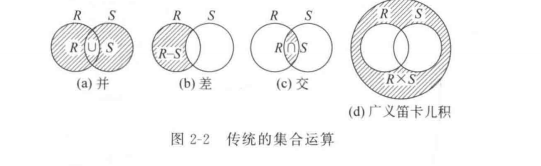
并运算
设关系 \(R\) 与 \(S\) 具有相同的目 \(n\)，并且对应属性来自同一个域，那么：
并运算的含义：把属于 \(R\) 或属于 \(S\) 的元组合并在一起，重复的元组只保留一次。
Note
可以把它理解成“把两张同结构的表合在一起”。
例如：
- 一张表是“信息学院学生”
- 一张表是“计算机学院学生”
如果它们结构相同，就可以做并运算，得到“这两个学院的全部学生”。
Important
它对行和列的影响:
并运算主要从“行”的角度工作。它不会增加列，只会把行合并起来。因此结果关系与原来的目相同，列数不变。
差运算
同样要求 \(R\) 与 \(S\) 可并。定义为：
它表示“在 \(R\) 中但不在 \(S\) 中”的那些元组。
Note
差运算可以理解成“排除”。
例如：
- \(R\)：全体选修数据库课程的学生
- \(S\)：全体选修操作系统课程的学生
那么 \(R-S\) 就表示“选了数据库但没选操作系统的学生”。
Important
对结果的影响
和并运算一样，它也主要处理“行”，不改变列结构。
交运算
定义为：
表示同时属于 \(R\) 和 \(S\) 的元组。
Note
可以理解成“共同部分”。
例如：
- 一张表表示“年龄小于 20 岁的学生”
- 另一张表表示“信息系学生”
交运算的结果就是“年龄小于 20 岁且属于信息系的学生”。
Important
和 SQL 的对应关系
它在实际查询里常常等价于多个条件同时成立。所以后面会发现，一些交运算也可以用选择条件的逻辑与来实现
广义笛卡儿积
若 \(R\) 是 \(n\) 目关系，\(S\) 是 \(m\) 目关系，则它们的广义笛卡儿积为：
结果是一个 \((n+m)\) 列的新关系。
Note
它会把 \(R\) 的每一行和 \(S\) 的每一行都配对一次。
如果 \(R\) 有 \(k_1\) 个元组，\(S\) 有 \(k_2\) 个元组，那么结果有 \(k_1\times k_2\) 个元组。
Important
它在查询中的作用
单独使用时，笛卡儿积常常太大，不太直接符合实际需求。但它是连接运算的基础。
事实上，连接可以看成：
- 先做笛卡儿积；
- 再选出满足条件的行；
- 必要时删除重复列。
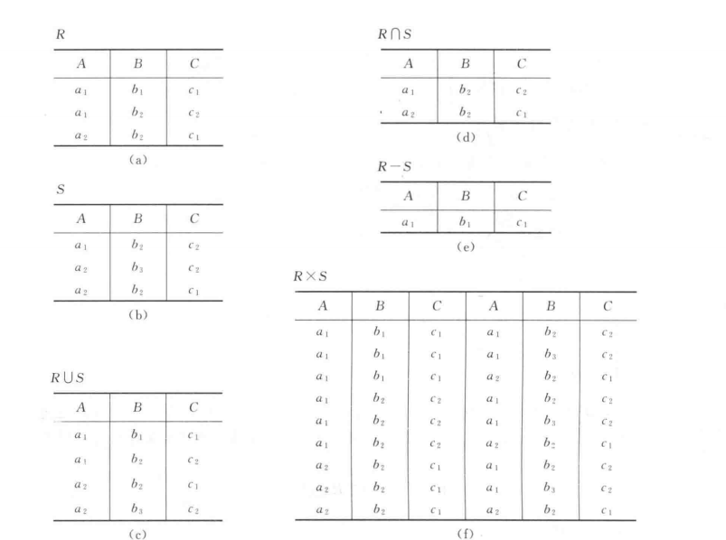
专门的关系运算
这一部分才是关系代数在数据库查询中真正高频使用的内容。选择、投影、连接、除几乎覆盖了常见查询的主要思想。
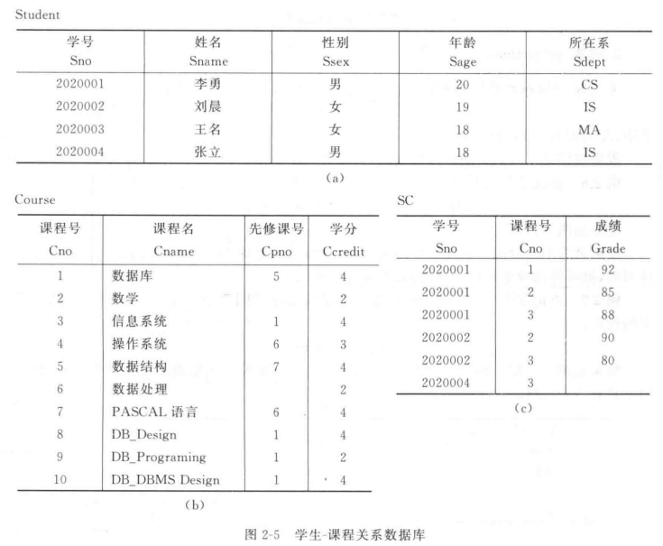
选择运算：从行的角度筛数据
选择运算记作：
其中 \(F\) 是一个逻辑表达式，表示筛选条件。
Note
选择在做什么
选择就是从关系 \(R\) 中挑出满足条件的那些元组。它保留原表的所有列，只减少行数。
所以选择运算是典型的“按行筛选”。
条件 \(F\) 怎样写
\(F\) 由比较运算符和逻辑运算符组成。
Important
S和 SQL 的对应关系
它在实际查询里常常等价于多个条件同时成立。所以后面会发现，一些交运算也可以用选择条件的逻辑与来实现
常用比较运算符有：
- \(>\)
- \(\ge\)
- \(<\)
- \(\le\)
- \(=\)
- \(\neq\)
常用逻辑运算符有：
- \(\neg\)：非
- \(\wedge\)：与
- \(\vee\)：或
所以你可以写出诸如：
这样的条件。
Example
例 2.4 查询信息系全体学生
意思是：从 Student 表中，选出所在系为 IS 的所有元组。
例 2.5 查询年龄小于 20 岁的学生
意思是：从 Student 表中，找出年龄小于 20 的学生记录。
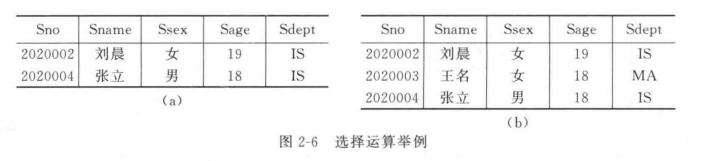
选择运算处理的是“哪些行留下来”。它不改列，所以查询结果仍然保留 Student 表的所有属性：学号、姓名、性别、年龄、所在系都还在。
如果把它放到 SQL 里，对应的就是 WHERE 子句。
投影运算：从列的角度取数据
投影记作：
其中 \(A\) 是属性列，也就是你想保留的那些列。
投影在做什么
投影是从关系 \(R\) 中取出若干列，组成一个新的关系。它保留指定列，丢弃其他列。所以投影运算是典型的“按列筛选”。
投影的一个关键点：要去重 因为关系是集合，集合里不能有完全相同的元组。投影以后，有可能原来两条不同的记录在保留列上变成相同，于是要把重复的结果去掉。
Example
例 2.6 查询学生的姓名和所在系
这表示只保留 Student 表中的 Sname 和 Sdept 两列。
例 2.7 查询学生都来自哪些系
如果原表中有两个学生都来自 IS 系，那么投影以后 IS 只保留一条。这是“投影要去重”的体现。
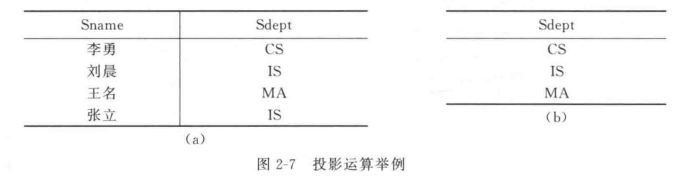
投影和选择的区别
- 选择是“看行”，问的是：哪些记录要留下
- 投影是“看列”，问的是：每条留下的记录中，哪些字段要保留
在 SQL 里，投影大致对应 SELECT 后面的列名部分。
连接运算：把相关信息拼接起来
连接运算是关系代数中最重要的运算之一，因为数据库往往把信息分散在多张表中。真正的查询通常都要把这些表按某种关联条件组合起来。
一般连接的定义
连接也称 \(\theta\) 连接，记作：
意思是：
- 先考虑 \(R\) 和 \(S\) 中所有可能的元组组合；
- 再从中选出满足 \(A\theta B\) 这个比较条件的那些组合。
所以连接本质上是“带条件的笛卡儿积”。
等值连接
当 \(\theta\) 是等号 = 时，就得到等值连接。
它表示：只保留 \(R\) 中 \(A\) 的值等于 \(S\) 中 \(B\) 的值的那些组合。
自然连接
自然连接是等值连接中的一个特殊形式。 它要求两个关系中存在同名属性，并且这些同名属性的值相等时才连接；连接结果中，重复的同名列只保留一份。
若 \(R\) 和 \(S\) 有公共属性 \(B\)，自然连接可记为：
一般连接与自然连接的区别
这个区别必须说清楚。
一般连接做完之后，两个参与比较的属性列通常都会保留下来。 例如 \(R.B\) 和 \(S.B\) 可能同时出现在结果中。
自然连接则进一步做了一件事： 发现这两列其实表达的是同一个连接属性，于是把重复列去掉，只保留一份。
所以自然连接的结果更简洁，也更接近我们实际需要的表结构。
连接在直觉上表示
连接运算的作用，是把分散在不同关系中的信息沿着某种关联重新组合起来。
例如：
- Student 表中有学生姓名、所在系
- SC 表中有学号、课程号、成绩
如果想知道“某个学生修了哪些课”，单独看任一张表都不够。你需要把 Student 和 SC 按 Sno 连接起来。
如果还想知道课程名，再把 Course 表按 Cno 连上去。
Example
教材在图 2-8 中给了 \(R\) 和 \(S\) 两张表：
- \(R(A,B,C)\)
- \(S(B,E)\)
如果按 \(R.B < S.B\) 去连接，就是一般的 \(\theta\) 连接；如果按 \(R.B = S.B\) 去连接，就是等值连接；如果进一步把重复的 \(B\) 列合并，就是自然连接。
连接就是按条件把两张表对应起来。
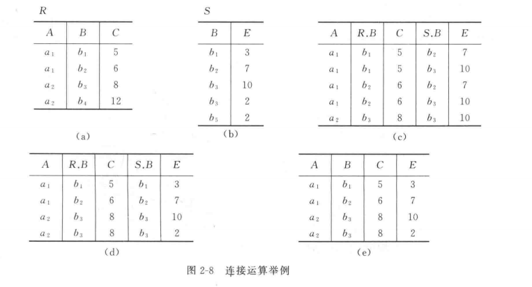
除运算：表达“全部满足”的查询
形式定义
给定关系 \(R(X,Y)\) 和 \(S(Y,Z)\)，其中 \(X,Y,Z\) 是属性组，并要求 \(R\) 中的 \(Y\) 与 \(S\) 中的 \(Y\) 可比较。则 \(R ÷. S\) 得到一个新的关系 \(P(X)\)。
于是从 \(R\) 中找出那些 \(X\) 值，使得它们对应的 \(Y\) 象集包含 \(S\) 在 \(Y\) 上的投影。
记作：
其中 \(x=t_r[X]\)，\(Y_x\) 是 \(x\) 在 \(R\) 中对应的 \(Y\) 象集。
也就是：先固定一个 \(X\) 值，看它在 \(R\) 中配对过哪些 \(Y\) 值；如果这些 \(Y\) 值把 \(S\) 中要求的全部 \(Y\) 值都覆盖了，那么这个 \(X\) 就保留下来。
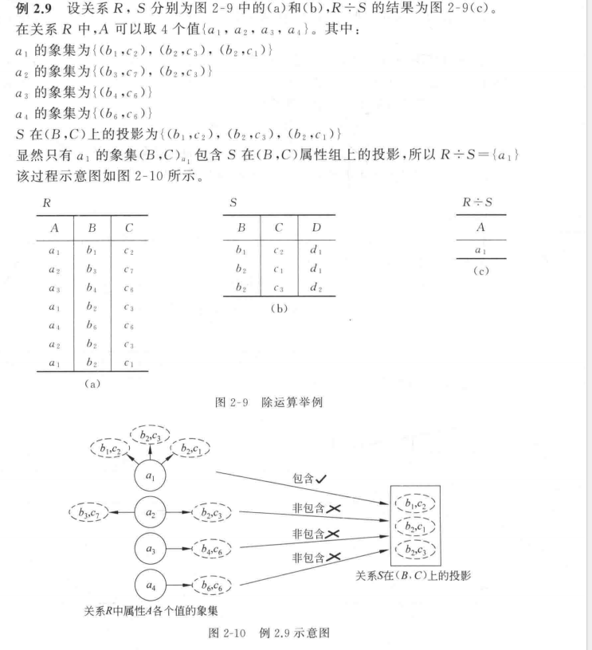
小结
- \(\sigma_{条件}(R)\) 表示按行选择，得到的是一行行数据，执行筛选条件时用
- \(\Pi_{列名称}(R)\) 表示按列选择，得到的是一列的数据，执行筛选条件时用
- \(R\bowtie_{\theta} B\) 表示R中满足 \(\theta\) 条件并和B连接的数据，一般是做多表格间数据联系时用
- \(R_{行或列}÷B_{行或列}\) 表示R中完全包含B的数据，一般做快速剔除时用
第三章 关系数据库标准语言 SQL
3.1 SQL 概述
SQL特点
- 综合统一：传统数据库语言常常把模式定义、外模式定义、存储描述、数据操纵等功能分散到多种语言中。SQL 把数据定义语言 DDL、数据操纵语言 DML、数据控制语言 DCL 等功能放入同一套语言体系中，可以完成定义关系模式、录入数据、查询数据、更新数据、维护数据库、安全控制等工作。
- 高度非过程化：用户使用 SQL 时，主要描述“要得到什么结果”。至于数据怎样存取、访问路径怎样选择、查询怎样执行，这些工作由数据库管理系统完成。这样可以减轻用户负担，也能提高数据独立性
- 面向集合的操作方式S：SQL 的操作对象通常是一组元组，查询结果也通常是一组元组。例如查询所有平均成绩在 80 分以上的学生时，用户表达筛选条件后，系统会一次性处理满足条件的记录集合。这与关系代数中的集合操作思想一致
- 以同一种语法结构提供两种使用方式：SQL 可以作为自含式语言直接在终端或数据库客户端中运行，也可以嵌入 C、C++、Java 等高级语言程序中，由程序调用数据库完成数据处理。两种场景下 SQL 的基本语法结构保持一致
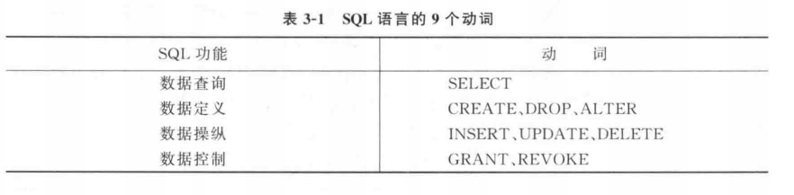
SQL 的基本概念
SQL 支持关系数据库的三级模式结构：外模式、模式和内模式。
- 外模式对应用户看到的数据视图，主要由视图和部分基本表构成。视图是从基本表或其他视图导出的表。数据库中保存的是视图定义，真正的数据仍然来自底层基本表。
- 模式对应基本表。基本表是本身独立存在的表，在 SQL 中一个关系通常对应一张基本表。用户日常创建和查询的很多表都属于这一层。
- 内模式对应存储文件。存储文件与数据库在磁盘上的组织方式有关，通常由数据库管理系统负责设计和管理。用户使用 SQL 时主要面对基本表和视图，存储文件对用户保持隐藏。
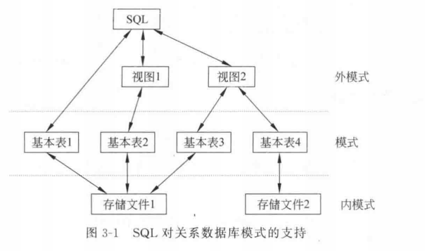
3.2 数据定义
这一节讲 SQL 的数据定义功能。关系数据库在逻辑层面由基本表、视图和索引等对象构成，数据定义语言负责创建、修改和删除这些对象。教材这一节主要展开两类对象：基本表和索引。视图的定义放到后面章节再讲。
SQL 数据定义可以按对象和操作来理解：
- 基本表可以用
CREATE TABLE创建，用ALTER TABLE修改，用DROP TABLE删除 - 视图可以用
CREATE VIEW创建，用DROP VIEW删除 - 索引可以用
CREATE INDEX创建，用DROP INDEX删除。。
视图依赖基本表，索引依附基本表，所以很多教材在讲数据定义时会先讲基本表，再讲索引
基本表的创建： CREATE TABLE
建立数据库应用时，第一步通常是定义基本表。基本表决定了系统中要保存哪些数据，每类数据有哪些属性，每个属性采用什么数据类型，以及这些属性要满足什么完整性约束。
CREATE TABLE 的一般形式是：
这里有三层含义。
- 第一，
<表名>是新建基本表的名称。 - 第二，每个
<列名> <数据类型>定义一个属性，说明该属性的名称和取值类型。 - 第三，完整性约束说明该列或该表中的数据要满足哪些规则，例如主码、唯一、空值限制、外码引用等。
完整性约束可以写在列后面，也可以写在表级位置。只涉及单列的约束，常写成列级约束；涉及多列组合的约束，需要写成表级约束。例如单列主码可以直接写在该列后面，复合主码则要写成 PRIMARY KEY (列1, 列2)。
Note
学生—课程数据库的三个基本表
教材用学生—课程数据库说明 SQL 语句。这个数据库包含三张表：
其中，Student 表保存学生信息，Course 表保存课程信息，SC 表保存学生选课信息。SC 表位于学生和课程之间，用来表达“哪个学生选了哪门课，并获得多少成绩”。
Example
创建 Student 表
Student 表包含 5 个属性：学号 Sno、姓名 Sname、性别 Ssex、年龄 Sage、所在系 Sdept。其中 Sno 是主码，Sname 取值唯一。
CREATE TABLE Student
(
Sno CHAR(9) PRIMARY KEY,
Sname CHAR(20) UNIQUE,
Ssex CHAR(2),
Sage INT,
Sdept CHAR(20)
);
这段语句执行后，数据库中会出现一个空的 Student 表，同时表结构和相关约束会写入数据字典。数据字典可以理解为 DBMS 保存数据库结构信息的系统目录，它记录表名、列名、数据类型、约束等元数据。
逐列看这张表，Sno CHAR(9) PRIMARY KEY 表示学号是长度为 9 的定长字符串，并且承担主码作用。主码要求每个学生都有唯一学号，并且主码值由实体完整性约束管理。Sname CHAR(20) UNIQUE 表示姓名长度为 20 的定长字符串，并且姓名值在表中保持唯一。Ssex CHAR(2) 表示性别用长度为 2 的字符串表示。Sage INT 表示年龄是整数。Sdept CHAR(20) 表示所在系是长度为 20 的字符串。
这里要区分 PRIMARY KEY 和 UNIQUE。PRIMARY KEY 用来唯一标识元组，属于实体完整性约束的核心；UNIQUE 要求该列取值保持唯一，常用于候选码或业务上要求唯一的字段。教材示例中让姓名唯一，是为了说明 UNIQUE 的写法；真实场景里姓名通常会重名，学号更适合作为主码。
创建Course表
Course 表包含课程号 Cno、课程名 Cname、直接先修课号 Cpno 和学分 Ccredit。教材示例语句为：
CREATE TABLE Course
(
Cno CHAR(4) PRIMARY KEY,
Cname CHAR(40) NOT NULL,
Cpno CHAR(4),
Ccredit SMALLINT,
FOREIGN KEY (Cpno) REFERENCES Course(Cno)
);
这张表中，Cno 是主码，用来唯一标识一门课程。Cname CHAR(40) NOT NULL 表示课程名是长度为 40 的字符串，并且需要填写。Cpno 表示直接先修课号，它的含义是“学习本课程前应先学习哪门课程”。Ccredit 表示学分，类型为 SMALLINT。
最值得关注的是最后一行：
这表示 Cpno 是外码，它引用本表中的主码 Cno。也就是说，某门课程的先修课也需要是 Course 表中已经定义的课程。这是一种同表参照关系，Course 表同时作为参照表和被参照表。
例如，若“数据库”的 Cpno 是 5，就表示课程号为 5 的课程是“数据库”的直接先修课。系统会用外码约束检查课程号 5 是否存在于 Course 表的 Cno 列中。
创建 SC 表
SC 表表示学生选课关系，包含学号 Sno、课程号 Cno 和成绩 Grade。教材示例语句为：
CREATE TABLE SC
(
Sno CHAR(9),
Cno CHAR(4),
Grade SMALLINT,
PRIMARY KEY (Sno, Cno),
FOREIGN KEY (Sno) REFERENCES Student(Sno),
FOREIGN KEY (Cno) REFERENCES Course(Cno)
);
这张表的主码是 (Sno, Cno)，说明一条选课记录由“某个学生”和“某门课程”共同确定。单独一个学号只能说明某个学生，单独一个课程号只能说明某门课程；二者合在一起，才能确定一条具体选课记录。
SC 表中有两个外码。Sno 引用 Student 表的主码 Sno，表示选课记录中的学生需要是 Student 表中已经登记的学生。Cno 引用 Course 表的主码 Cno，表示选课记录中的课程需要是 Course 表中已经登记的课程。这样数据库可以保证 SC 表中的每条记录都对应真实学生和真实课程。
这张表同时体现了实体完整性和参照完整性。复合主码 (Sno, Cno) 负责标识选课记录；两个外码负责连接学生表和课程表。
创建表时，每一列都要指定数据类型。数据类型决定该列能保存什么形式的数据，也会影响存储空间和比较规则。
- 整数类型包括
SMALLINT、INTEGER或INT、BIGINT。教材给出的长度分别是 2 字节、4 字节和 8 字节。数值范围越大，占用空间通常越大。 - 精确数值类型包括
NUMERIC(p,s)和DECIMAL(p,s)。其中 \(p\) 表示总位数，\(s\) 表示小数点后的位数。NUMERIC(5,2)可以保存总共 5 位、小数部分 2 位的数值，例如 123.45。精确数值类型适合金额、成绩等对精度要求明确的场景。 - 浮点类型包括
FLOAT(p)、REAL和DOUBLE PRECISION。浮点类型适合科学计算中的近似数值。教材中REAL长度为 4 字节，DOUBLE PRECISION长度为 8 字节。 - 字符串类型包括
CHAR(n)和VARCHAR(n)。CHAR(n)是定长字符串，长度固定为 \(n\)。VARCHAR(n)是变长字符串，最大长度为 \(n\)，实际占用空间随内容长度变化。学号、课程号这类长度固定的编码适合CHAR；姓名、标题这类长度变化的内容适合VARCHAR。 - 日期和时间类型包括
DATE与TIMESTAMP。DATE用于年月日，格式通常为YYYY-MM-DD；TIMESTAMP用于日期加时间，格式通常为YYYY-MM-DD HH:MM:SS。 - 大对象类型包括
BLOB和CLOB。BLOB用于保存二进制大对象，例如图片、音频、文件内容；CLOB用于保存大段文本。 - 布尔类型为
BOOLEAN，取值可以是TRUE、FALSE、UNKNOWN。
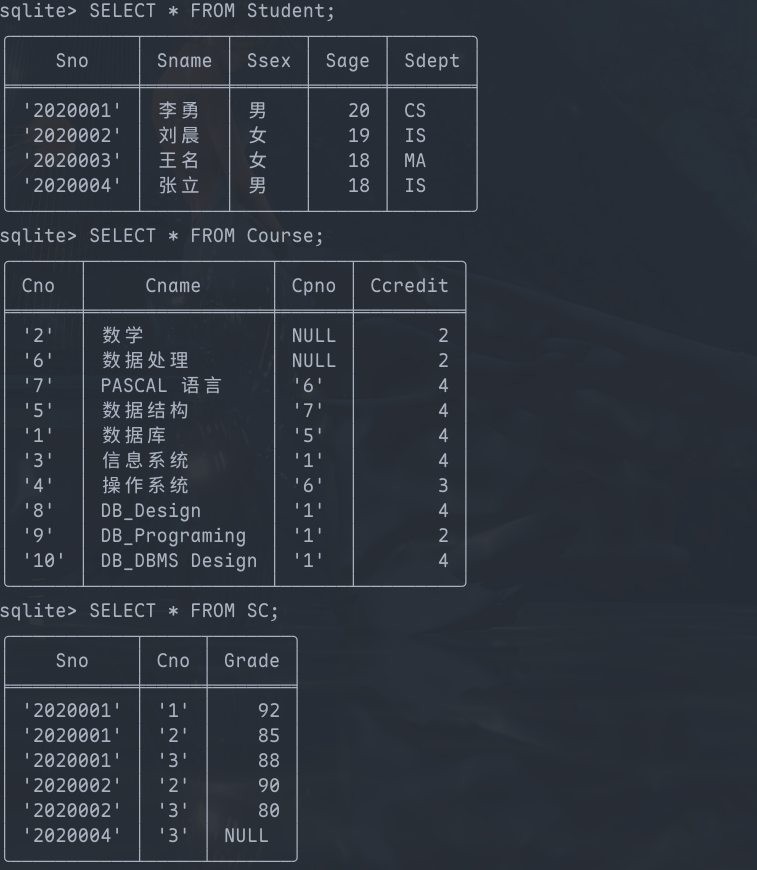
基本表的修改：ALTER TABLE
应用运行一段时间后，表结构可能要调整。例如增加新列、增加新约束、修改列类型、删除某个约束。SQL 使用 ALTER TABLE 修改已经建立的基本表。
教材给出的一般形式是：
ADD 用来增加新列或新的完整性约束。DROP 用来删除指定完整性约束。MODIFY 用来修改原有列定义。
Example
ALTER TABLE 示例
例 3.4，向 Student 表增加“入学时间”列，数据类型为日期型：
执行后，Student 表会多出一个 Scome 列。对于表中原来已经存在的记录，新加列的取值会被系统置为空值。因为旧记录在新增列上原先缺少对应数据，系统会先给出空值，再由用户后续补充。
例 3.5，将年龄的数据类型改为 SMALLINT：
这条语句会修改 Sage 列的数据类型。修改列类型时要关注已有数据能否转换到新类型。例如从较大的整数类型改成较小的整数类型时，若已有年龄值超出新类型范围，系统可能报错或拒绝执行。
例 3.6，删除学生姓名取唯一值的约束：
执行后，Sname 列的唯一性约束被移除，Student 表中姓名重复的记录将可被接受。教材通过这个例子说明，约束也是表定义的一部分，可以通过 ALTER TABLE 调整。
经过这几次修改后，Student 表的结构变为：
其中 Scome 是新增的入学时间列，Sage 的类型调整为 SMALLINT，Sname 的唯一性约束被删除。
教材还提到，删除单独属性列通常通过重建表间接完成：先把原表中要保留的列及其数据复制到新表，再删除原表，最后把新表改名为原表。这样可以达到删除某列的效果。
基本表的删除： DROP TABLE
当某个基本表在数据库中已经失去用途时，可以使用 DROP TABLE 删除。
一般形式是：
例如删除 Student 表：
执行后，Student 表的定义、表中数据，以及建立在该表上的索引都会被系统删除。建立在该表上的视图定义仍可能保留。这些视图引用的基础表已经消失，后续使用会出现引用失效。因此删除基本表属于影响较大的操作，执行前要确认依赖关系和数据备份情况。
索引
索引用于加快查询速度。
用“目录”说明索引的作用：查书时，先通过目录定位页码，再到对应页码查找内容，速度会明显提升。数据库表上的索引也承担类似作用，系统可以通过索引更快定位满足条件的记录。
索引通常建立在经常作为查询条件、连接条件或排序依据的列上。例如学生表经常按学号查询，就适合在学号列上建立索引；选课表经常按学号和课程号定位记录，就可以在这两个列上建立组合索引。
索引的创建和删除通常由数据库管理员或表的属主负责。索引建立后，系统会在查询时自动选择合适索引作为存取路径，用户查询时通常只写 SQL 查询语句。
创建索引：CREATE INDEX
创建索引用 CREATE INDEX 语句。教材给出的一般形式是：
其中，<索引名> 是新建索引的名称；<表名> 指索引建立在哪张基本表上；括号内列出建立索引的列。每个列后可以指定排序次序，ASC 表示升序，DESC 表示降序，默认值是 ASC。
UNIQUE 表示唯一索引。唯一索引要求每个索引值只对应一条数据记录。它常用于主码、候选码或业务上要求唯一的列。
CLUSTER 表示聚簇索引。聚簇索引会使表中记录的物理存放顺序与索引项顺序一致。例如：
这表示在 Student 表的 Sname 列上建立聚簇索引，并让记录按照 Sname 的升序存放。由于一个表的物理顺序只有一种，因此一个基本表最多只能建立一个聚簇索引。聚簇索引适合变化较少、经常用于范围查询或排序的列。频繁更新的列使用聚簇索引时，维护成本会较高
Example
例 3.8 给学生—课程数据库中的 Student、Course、SC 三张表建立索引：
CREATE UNIQUE INDEX Stusno ON Student(Sno);
CREATE UNIQUE INDEX Coucno ON Course(Cno);
CREATE UNIQUE INDEX SCno ON SC(Sno ASC, Cno DESC);
第一条语句在 Student 表的 Sno 列上建立唯一索引。因为学号本身具有唯一性，这个索引可以提高按学号查找学生的效率。
第二条语句在 Course 表的 Cno 列上建立唯一索引。课程号用于唯一标识课程，按课程号查询课程时可以使用该索引。
第三条语句在 SC 表的 Sno 和 Cno 两列上建立组合唯一索引。组合索引的排序方式是：先按 Sno 升序，再在相同 Sno 的记录中按 Cno 降序。由于 SC 表的主码是 (Sno, Cno)，这个组合索引有助于快速定位某个学生某门课的选课记录。
删除索引：DROP INDEX
索引建立后由系统使用和维护。索引可以提高查询速度；数据插入、删除、修改时，系统也要同步维护索引。若某个索引使用频率低，或表更新操作非常频繁，维护索引可能带来额外开销。此时可以删除部分索引。
删除索引用 DROP INDEX：
例 3.9 删除 Student 表上的 Stusname 索引：
执行后，系统会从数据字典中删除该索引的描述，并清理相应索引结构。索引删除后，表中数据仍然保留，后续查询少了一条可选存取路径。
3.3 查询
这一节进入 SQL 使用频率最高的部分：查询。数据库建立表结构并写入数据之后，日常操作中最常见的任务就是从表中取出满足条件的数据。SQL 用 SELECT 语句完成查询，它既能处理一张表中的基础查询，也能在多张表之间建立联系，还能完成分组统计、排序和条件筛选。
SELECT 语句的一般结构为：
SELECT [ALL | DISTINCT] <目标列表达式> [, <目标列表达式>] ...
FROM <表名或视图名> [, <表名或视图名>] ...
[WHERE <条件表达式>]
[GROUP BY <列名1> [HAVING <条件表达式>]]
[ORDER BY <列名2> [ASC | DESC]];
这条语句的基本执行思路是：先从 FROM 指定的表或视图取得数据来源，再用 WHERE 按条件筛选元组，接着根据 SELECT 中的目标列表达式决定输出哪些列或表达式。带有 GROUP BY 时，系统会按指定列分组；带有 HAVING 时，系统会对分组后的结果继续筛选；带有 ORDER BY 时，系统会按指定列对最终结果排序。
教材继续沿用学生—课程数据库。这个数据库包含三张表：Student(Sno, Sname, Ssex, Sage, Sdept)，其中 Sno 是学号，作为主码；Course(Cno, Cname, Cpno, Ccredit)，其中 Cno 是课程号，作为主码，Cpno 表示直接先修课号；SC(Sno, Cno, Grade)，其中 (Sno, Cno) 共同作为主码，用来表示某个学生选修某门课程以及对应成绩。
单表查询
单表查询只涉及一张数据库表，是 SQL 查询中最基础的形式。教材先从 Student 和 SC 表出发，说明怎样选择列、消除重复行、筛选元组、排序、使用集函数和分组。
选择表中的若干列
在 SELECT 后写出列名，就可以指定查询结果中显示哪些属性。
查询全体学生的学号和姓名：
这里 SELECT 后面的 Sno, Sname 是目标列表达式，表示结果中只显示学号和姓名两列。目标列的书写顺序可以根据查询需要调整，输出结果会按书写顺序显示。
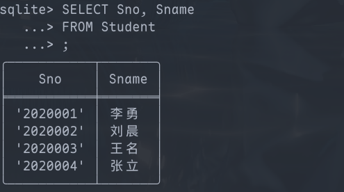
查询全体学生的姓名、学号、所在系：
这条语句把姓名放在第一列，学号放在第二列，所在系放在第三列。输出列顺序由 SELECT 子句决定。
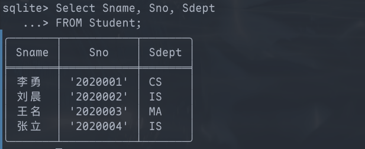
查询全体学生的详细记录：
星号 * 表示选择表中的全部列。对于查看整张表的基本内容，这种写法最直接。
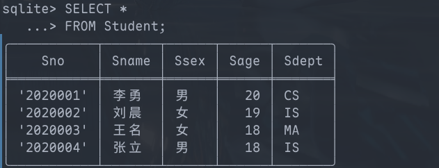
目标列表达式可以是计算表达式和函数
SELECT 后面的内容可以是表中的列，也可以是由列、常量、算术运算和函数组成的表达式。
查询学生姓名和出生年份，假设查询年份为 2020 年：
2020 - Sage 是计算表达式。若某学生年龄为 20，则计算结果为 2000，表示出生年份。
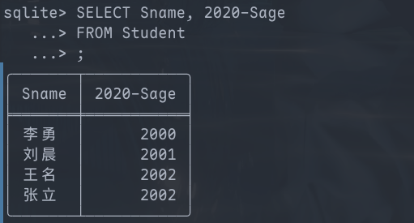
目标列表达式还可以包含字符串常量和函数。例如查询姓名、固定字符串、出生年份，并将所在系转为小写：
这里 'Year of Birth:' 是字符串常量，ISLOWER(Sdept) 是函数调用，用来把所在系代码转换成小写形式。教材中的函数写法反映当时系统的实现，实际数据库中常见函数名可能写作 LOWER(Sdept)。
为查询结果列指定别名
表达式作为输出列时，默认列名往往较难阅读。SQL 允许给输出列指定别名。
SELECT Sname NAME,
'Year of Birth:' BIRTH,
2020 - Sage BIRTHDAY,
ISLOWER(Sdept) DEPARTMENT
FROM Student;
执行后，结果列标题会显示为 NAME、BIRTH、BIRTHDAY、DEPARTMENT。别名主要用于改善结果可读性，尤其适合计算表达式、常量和函数表达式。
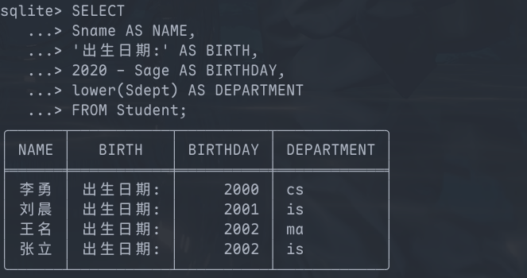
DISTINCT 与ALL
SQL 查询结果默认保留重复元组，等价于指定 ALL。例如查询所有选修过课程的学生学号：
由于一个学生可能选多门课，SC 表中同一个学号会出现多次，因此结果中也会出现重复学号。
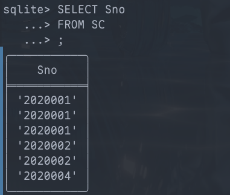
若要消除重复行，需要使用 DISTINCT：
这样结果中每个学号只出现一次。SELECT Sno FROM SC; 与 SELECT ALL Sno FROM SC; 等价。
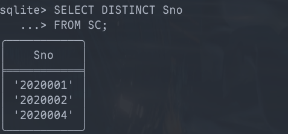
WHERE 条件查询
WHERE 子句用于从表中选出满足条件的元组。常见条件包括比较大小、确定范围、确定集合、字符匹配、空值判断以及多个条件组合。
比较大小
比较运算符包括 =、>、<、>=、<=、<> 或 !=。例如查询计算机科学系全体学生姓名：
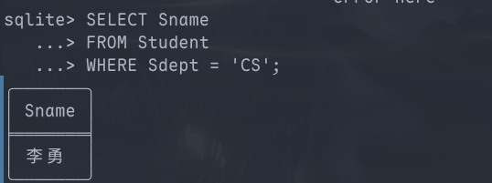
查询年龄小于 20 岁的学生姓名和年龄：
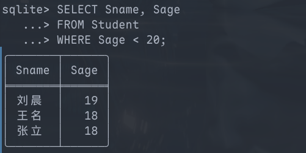
也可以使用逻辑非表达同样含义：
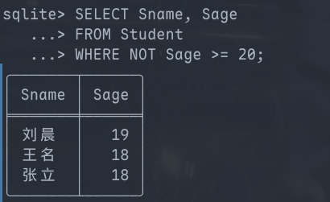
查询考试成绩高于 60 分的学生学号：
这里加入
DISTINCT，因为一名学生可能有多门课程高于 60 分，查询结果中学号只保留一次。
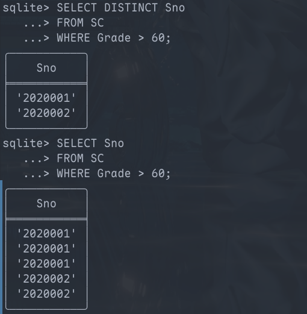
确定范围：BETWEEN AND
BETWEEN ... AND ... 用来查询属性值位于指定范围内的元组。范围包含下限和上限。
查询年龄在 20 到 23 岁之间的学生姓名、所在系和年龄：
查询年龄在该范围之外的学生：
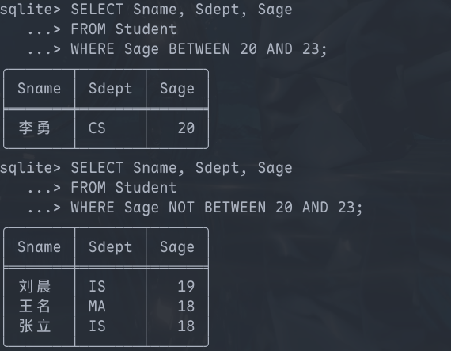
确定集合：IN
IN 用来判断某个属性值是否属于指定集合。
查询信息系、数学系和计算机科学系学生的姓名和性别：
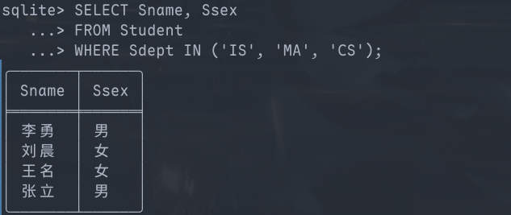
查询所在系属于这三个系之外的学生：
这个例子也可以写成多个 OR 条件：
IN 让集合型条件更紧凑，适合枚举多个可能取值。
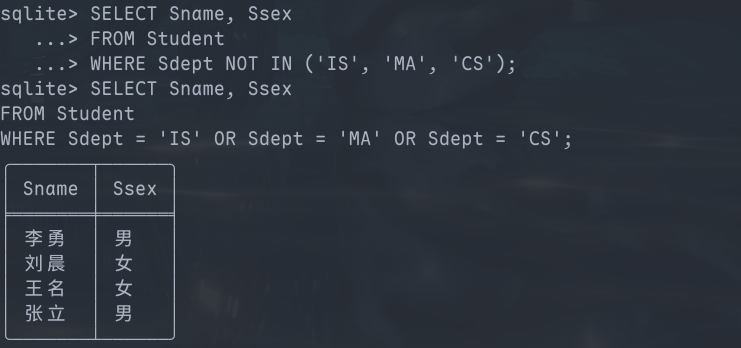
字符匹配：LIKE
LIKE 用于字符串模式匹配，一般形式为：
匹配串中常用两个通配符：百分号
%和下划线_。%表示任意长度字符串，长度可以为 0；_表示任意单个字符。
查询学号为 2020001 的学生详细情况：
由于匹配串全由普通字符组成，这条语句等价于：
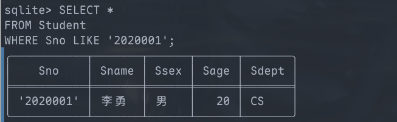
查询所有姓刘的学生姓名、学号和性别：
刘%表示以“刘”开头、后面接任意长度字符串的姓名。
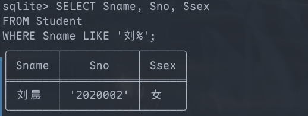
查询姓“欧阳”且全名为三个汉字的学生姓名：
一个汉字占一个字符位置，所以“欧阳”后面需要两个 _。
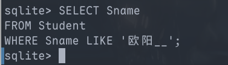
查询名字中第二个字为“阳”的学生姓名和学号：
第一个
_表示姓名第一个字符任意，第二个字符固定为“阳”，后面%表示继续接任意长度字符串。
查询所有不姓刘的学生姓名：
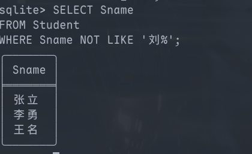
ESCAPE 换码字符
当匹配串本身含有 % 或 _，且这些字符要按普通字符理解时，需要使用 ESCAPE 指定换码字符。
查询课程名为 DB_Design 的课程号和学分：
ESCAPE '\'表示反斜线是换码字符，紧跟在反斜线后面的_失去通配符含义，按普通下划线匹配。
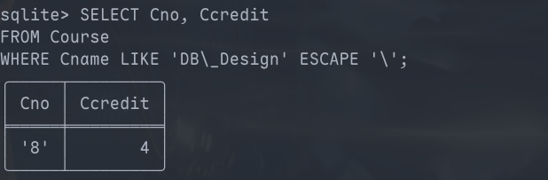
查询以 DB_ 开头，且倒数第三个字符为 i 的课程详细情况：
这里
DB\_匹配普通字符串DB_，%匹配中间任意长度字符串，i__表示倒数第三个字符是i，后面还有两个任意字符。
空值判断：IS NULL
SQL 中空值表示未知、缺失或暂时暂缺取值。判断空值要使用 IS NULL 或 IS NOT NULL。
查询缺少成绩的学生学号和课程号：
查询有成绩记录的学生学号和课程号：
空值有专门语义，判断空值时使用 IS NULL，等号用于普通数值或字符串的相等判断。
多重条件：AND 与 OR
多个查询条件可以用 AND 和 OR 连接。AND 表示多个条件同时成立，OR 表示多个条件中至少一个成立。
查询计算机科学系中年龄小于 20 岁的学生姓名：
当 AND 和 OR 同时出现时，AND 的优先级高于 OR。需要改变计算顺序时，可以使用括号明确条件结构。
ORDER BY 查询结果排序
查询结果默认显示顺序由 DBMS 决定，用户可以用 ORDER BY 指定排序方式。
ASC表示升序，是默认值；DESC表示降序。
查询选修 3 号课程的学生学号和成绩，并按成绩降序排列：
查询全体学生情况，先按所在系升序排列，同一系内再按年龄降序排列：
这里排序有两级。系统先按照 Sdept 升序排列；当多个学生属于同一系时，再按照 Sage 降序排列。
关于空值排序，不同数据库系统可能有不同处理规则。教材中说明，在升序排列时空值常放在最后，降序排列时空值常放在最前。
使用集函数
SQL 提供集函数，用于对一组数据进行统计计算。常见集函数包括：
COUNT(*) 统计元组个数
COUNT([DISTINCT|ALL] 列名) 统计某列中值的个数
SUM([DISTINCT|ALL] 列名) 计算某列总和，数值型列
AVG([DISTINCT|ALL] 列名) 计算某列平均值，数值型列
MAX([DISTINCT|ALL] 列名) 求某列最大值
MIN([DISTINCT|ALL] 列名) 求某列最小值
在集函数中使用 DISTINCT 时，系统会先消除重复值再计算；使用 ALL 或省略词项时，系统按全部取值计算。
查询学生总人数：
查询选修过课程的学生人数：
这里要用 DISTINCT Sno。因为一个学生可能选多门课，在 SC 表中出现多条记录，直接 COUNT(Sno) 会按选课记录数统计。
计算选修 1 号课程的学生平均成绩：
查询学习 1 号课程的学生最高分：
集函数的作用对象是一个集合。省略 GROUP BY 时，整个查询结果作为一个集合参与计算；带有 GROUP BY 时，每个分组分别作为一个集合参与计算。
GROUP BY 对查询结果分组
GROUP BY 按一个或多个列的取值相等原则把查询结果分组。分组后，集函数会对每个组分别计算。
查询各个课程号及相应的选课人数：
这条语句先按
Cno分组，使相同课程号的选课记录归为一组；再对每组计算COUNT(Sno)，得到每门课程的选课人数。
教材给出的示例结果类似：
这里每一行对应一个课程组，代表该课程的统计结果。
HAVING 对分组结果筛选
HAVING用于筛选分组后的结果。它经常与集函数配合使用。
查询信息系中选修了 3 门以上课程的学生学号：
这条语句的处理过程可以按顺序理解：先按 Sno 分组，每个学生形成一个组；接着用 COUNT(*) 统计每组记录数；最后用 HAVING COUNT(*) > 2 保留选课门数超过 3 的学生。
WHERE 与 HAVING 的关系
WHERE 和 HAVING 都能写条件，但作用阶段不同。
WHERE作用在分组之前，用来筛选原始元组；HAVING作用在分组之后，用来筛选分组结果。
以“查询选修课程超过 3 门的信息系学生”为例，信息系条件属于学生或选课记录层面的条件，适合放在 WHERE；选课门数超过 3 需要先对学生分组并计数，适合放在 HAVING。
可以按执行顺序记忆：
这个顺序有助于理解复杂查询。先确定数据来源，再筛选行，再分组，再筛组选出的组，再决定输出内容，最后排序。
连接查询
前面讲的单表查询只面对一张表。它能够解决“从 Student 表里查学生”“从 SC 表里查成绩”这一类问题，但数据库里的信息通常会被拆到多张表中保存。学生基本信息放在
Student表中，课程信息放在Course表中，选课成绩放在SC表中。这样设计可以减少数据重复，也便于维护，但查询时经常需要把这些表重新关联起来。连接查询就是用来完成这件事的。这一节的核心是：当一个查询同时涉及两张或多张表时，需要通过共同属性或指定条件把相关元组配对起来。配对成功的元组会被拼成结果表中的一行。
连接查询的基本思路
先看三张表的含义：
Student 保存学生基本信息，Sno 是学号。
SC 保存选课记录，Sno 是学号，Cno 是课程号，Grade 是成绩。
Course 保存课程信息，Cno 是课程号，Cname 是课程名，Cpno 是直接先修课号，Ccredit 是学分。
现在我们来考虑一个查询：“查询每个学生及其选修课程的情况。”
这个查询同时需要学生基本信息和选课信息。学生姓名、性别、年龄、所在系在 Student 表中；课程号和成绩在 SC 表中。两张表通过共同的 Sno 发生联系。
因此查询时要让：
这就是连接条件。只有学号相同的学生记录和选课记录才可以拼在一起。
教材中的写法是：
这个写法使用 FROM Student, SC 指出两个数据来源，再用 WHERE Student.Sno = SC.Sno 指出连接条件。执行时可以按下面的顺序理解：
先取出 Student 和 SC 两张表；然后把两张表中的行进行配对；接着只保留学号相等的配对；最后按 SELECT 中指定的列输出结果。
Note
它可以分成四步。
第一步，读取 FROM 中的表。这里有 Student 和 SC 两张表。
第二步，形成候选配对。数据库会考虑 Student 中的每一行和 SC 中的每一行的组合，这一步相当于形成笛卡儿积。
第三步，执行 WHERE 条件。WHERE Student.Sno = SC.Sno 会保留学号相同的组合，学号不同的组合被过滤掉。
第四步，执行 SELECT 输出。Student.* 表示输出 Student 表的所有列，SC.* 表示输出 SC 表的所有列。
用课本数据理解，Student 表中学号为 2020001 的学生是李勇，SC 表中有三条 Sno=2020001 的选课记录，分别是 1 号、2 号、3 号课程。那么李勇这一条学生记录会分别和这三条选课记录连接，结果表中会产生三行。2020002 有两条选课记录，就产生两行。2020004 有一条选课记录，就产生一行。2020003 在 SC 中没有选课记录，普通连接中不会出现在结果里。
等值连接
连接条件中使用等号 = 的连接称为等值连接。
一般形式可以写成：
教材例 3.41 就是等值连接：
这里的连接条件是：
因为比较符是等号，所以它属于等值连接。
等值连接常用于主码与外码之间的关联。Student.Sno 是学生表的主码，SC.Sno 是选课表中的外码。通过这两个属性相等，可以把“学生基本信息”和“学生选课信息”对应起来。
在 SQLite 中，也可以写成更现代、更清晰的 JOIN ... ON ... 形式：
这两种写法表达的查询含义相同，课本常用逗号加 WHERE 的形式
Note
属性名前为什么要加表名前缀
连接查询中，多个表可能有同名列。Student 表和 SC 表都有 Sno。当 SQL 语句中直接写 Sno 时，数据库可能无法判断指的是哪张表中的 Sno。因此需要加上表名前缀：
在下面这条查询中：
SELECT Student.Sno, Sname, Ssex, Sage, Sdept, Cno, Grade
FROM Student, SC
WHERE Student.Sno = SC.Sno;
Sname、Ssex、Sage、Sdept 只出现在 Student 表中，Cno、Grade 只出现在 SC 表中，因此可以直接写列名。Sno 同时出现在两张表中，所以写成 Student.Sno，避免歧义。
这条查询相比前一条有一个变化：它只保留一个 Sno 列，去掉了 SC.Sno 这个重复列。结果表更简洁。
非等值连接
连接条件中使用的比较符可以是 =，也可以是 >、<、>=、<=、<> 等。使用等号时称为等值连接，使用其他比较符时称为非等值连接。
一般形式为：
例如：
这表示把 R 表和 S 表中满足 R.A > S.B 的元组连接起来。
Note
笛卡儿积连接
当两个表写在 FROM 中，却不给连接条件时，会产生笛卡儿积。
教材中的例子是：
这条语句没有 WHERE Student.Sno = SC.Sno 这样的限制，因此 Student 中每一行都会和 SC 中每一行组合。
若
Student表有 4 行，SC表有 6 行，结果就有：4 × 6 = 24行。
笛卡儿积结果中会出现大量没有实际意义的组合。例如学号为 2020001 的学生记录，可能会和学号为 2020002 的选课记录拼在一起。
自然连接
自然连接是一种特殊连接。它按照两个表中的同名属性自动进行等值匹配，并且在结果中去掉重复的同名列。
对于 Student 和 SC 来说，两张表都有 Sno。自然连接的含义就是：
并且结果中只保留一个 Sno。
教材中的自然连接效果相当于：
SELECT Student.Sno, Sname, Ssex, Sage, Sdept, Cno, Grade
FROM Student, SC
WHERE Student.Sno = SC.Sno;
这条语句虽然没有直接写 NATURAL JOIN，但结果效果与自然连接接近：按同名属性 Sno 连接，并且输出时只保留一个学号列。
在 SQLite 中，可以直接写：
自身连接查询
连接操作可以发生在两张表之间，也可以发生在一张表与自身之间。一张表和自己连接，称为自身连接。
自身连接的关键是：同一张表在查询中要扮演两个角色。为了区分这两个角色，需要给表起别名。
Example
教材例 3.43 查询每门课的间接先修课，也就是“先修课的先修课”。
Course 表中：
若某门课程 A 的直接先修课是 B，而课程 B 的直接先修课是 C，那么 C 就是 A 的间接先修课。
这需要把 Course 表看成两份：
其中 FIRST 表示“当前课程”，SECOND 表示“它的直接先修课程”。连接条件是：
含义是：当前课程的直接先修课号，等于另一条课程记录的课程号。
教材语句为：
执行过程可以这样理解：
先从 FIRST 中取一门课程，比如 1 号课程“数据库”，它的 Cpno 是 5，说明直接先修课是 5 号课程“数据结构”。
再到 SECOND 中找 Cno = 5 的课程记录。找到后，取这条记录的 Cpno，也就是 5 号课程的直接先修课。若 5 号课程的 Cpno 是 7，则 7 号课程就是 1 号课程的间接先修课。
当成一个链表来理解这个例子，获取会更方便理解
所以结果中出现：
表示 1 号课程的间接先修课是 7 号课程。
在 SQLite 中也可以写为：
自身连接的学习重点是别名。没有别名时，SQL 难以区分同一张表中的两个角色。
外连接查询
普通连接只输出匹配成功的元组。若某个学生没有选课，在 Student 表中有记录，在 SC 表中没有对应记录，那么普通连接结果中不会出现这个学生。
但有时查询需求是：以学生表为主，列出所有学生的基本信息，同时显示他们的选课情况；没有选课的学生也要显示出来，选课列用空值补齐。这就需要外连接。
教材例 3.44：
SELECT Student.Sno, Sname, Ssex, Sage, Sdept, Cno, Grade
FROM Student LEFT OUTER JOIN SC ON (Student.Sno = SC.Sno);
LEFT OUTER JOIN 表示左外连接。左边表是 Student，所以结果中会保留 Student 表中的所有学生。
Note
它的执行逻辑是：
先按照 Student.Sno = SC.Sno 进行匹配；匹配成功的学生，输出学生信息和选课信息；某个学生在 SC 表中没有对应记录，也保留该学生信息，但 Cno、Grade 等来自 SC 的列填为 NULL。
用课本数据看，2020003 王名没有选课记录。普通连接中不会出现王名；左外连接中会出现王名，但课程号和成绩为空值。
左外连接的作用是：保留左表全部元组，右表没有匹配时用空值补齐。
右外连接的含义相反，它保留右表全部元组。教材中说明，左外连接列出左边关系中所有元组，右外连接列出右边关系中所有元组。
复合条件连接查询
前面的连接查询通常只有一个条件，例如：
当查询需求更具体时，WHERE 中还可以加入其他筛选条件。多个条件共同作用，称为复合条件连接查询。
Example
教材例 3.45：查询选修 2 号课程且成绩在 90 分以上的学生。
SQL 语句为：
SELECT Student.Sno, Sname
FROM Student, SC
WHERE Student.Sno = SC.Sno
AND SC.Cno = '2'
AND SC.Grade >= 90;
这里有三层条件。
第一层：Student.Sno = SC.Sno 负责把学生表和选课表连接起来。
第二层：SC.Cno = '2' 限定课程号为 2。
第三层：SC.Grade >= 90 限定成绩大于等于 90。
执行顺序上，先从 Student 和 SC 建立候选组合，然后用这三个条件筛选。能够留下来的结果必须同时满足：学生记录和选课记录属于同一名学生，选的是 2 号课程，成绩至少 90 分。
当查询需求更具体时，WHERE 中还可以加入其他筛选条件。多个条件共同作用，称为复合条件连接查询。
多表连接查询
连接查询可以涉及两张表，也可以涉及三张或更多表。涉及多张表时，要为相邻表之间写清楚连接条件。
Example
教材例 3.46：查询每个学生选修的课程名及其成绩。
这个查询需要三张表共同参与：
Student 提供学号和姓名；SC 提供学号、课程号和成绩；Course 提供课程号和课程名。
表之间的联系有两条：
第一条把学生和选课记录连起来，第二条把选课记录和课程信息连起来。
教材语句为：
SELECT Student.Sno, Sname, Course.Cname, SC.Grade
FROM Student, SC, Course
WHERE Student.Sno = SC.Sno
AND SC.Cno = Course.Cno;
执行过程可以拆成两段：
先通过 Student.Sno = SC.Sno 找到每个学生对应的选课记录；再通过 SC.Cno = Course.Cno 找到每条选课记录对应的课程名称。最后输出学号、姓名、课程名和成绩。
多表连接中最重要的是避免漏写连接条件。三张表连接时，通常至少要有两条连接条件；四张表连接时，通常至少要有三条连接条件。漏掉连接条件会产生大量无意义组合。
嵌套查询
一个完整的 SELECT-FROM-WHERE 语句可以看成一个查询块；当一个查询块写入另一个查询块的 WHERE 或 HAVING 条件中时，就形成嵌套查询。外层查询通常称为父查询或外层查询，写在内部的查询称为子查询或内层查询。
嵌套查询的处理思路通常是由里向外推进。DBMS 先处理子查询，得到一个值、一组值，或一个真假结果；外层查询再把这个结果作为条件的一部分继续筛选数据。由于子查询可以层层嵌入，SQL 能把多步查询过程写入一条语句中。
需要注意一个规则：子查询本身用于提供中间结果，排序只对最终输出有意义，所以 ORDER BY 通常写在最外层查询中。
带 IN 的子查询
IN 用来判断某个属性值是否属于子查询返回的集合。它适合表达“某个值在一组结果中”的查询需求。
基本形式为：
Example
例如，查询选修 2 号课程的学生姓名：
这条语句可以分两步理解。内层查询先在 SC 表中找出选修 2 号课程的学生学号：
这个结果是一组学号。外层查询再从 Student 表中找出 Sno 落在这组学号中的学生，并输出姓名。也就是说，子查询负责提供筛选集合，父查询负责输出学生信息。
Example
再看例 3.48，查询与“刘晨”在同一个系学习的学生：
SELECT Sno, Sname, Sdept
FROM Student
WHERE Sdept IN
(SELECT Sdept
FROM Student
WHERE Sname = '刘晨');
内层查询先找出“刘晨”所在的系，例如得到 IS；外层查询再找出所有 Sdept 属于该结果集合的学生。由于内层和外层都使用 Student 表，为了让语义更清楚，也可以给两次出现的 Student 起别名：
SELECT S1.Sno, S1.Sname, S1.Sdept
FROM Student AS S1
WHERE S1.Sdept IN
(SELECT S2.Sdept
FROM Student AS S2
WHERE S2.Sname = '刘晨');
这个例子也能用自身连接完成：
嵌套查询和连接查询在很多场景中可以表达同一语义。嵌套查询的优势在于层次清楚，适合按照问题分步推理；连接查询在许多系统中执行效率较高，也更常用于多表关联场景。
Example
例 3.49 查询选修课程名为“信息系统”的学生学号和姓名。
这个查询涉及三张表：Course 提供课程名和课程号，SC 提供课程号和学号，Student 提供学号和姓名。按照由内向外的顺序，可以写成：
SELECT Sno, Sname
FROM Student
WHERE Sno IN
(SELECT Sno
FROM SC
WHERE Cno IN
(SELECT Cno
FROM Course
WHERE Cname = '信息系统'));
这条语句的内层先找课程名为“信息系统”的课程号；中间层再根据课程号找选修该课程的学生学号；最外层根据学号到 Student 表中取学生姓名。课本给出的逐步化简过程正是在展示 DBMS 可以由内到外处理这条语句。
同样的需求也可以写成连接查询：
SELECT Student.Sno, Sname
FROM Student, SC, Course
WHERE Student.Sno = SC.Sno
AND SC.Cno = Course.Cno
AND Course.Cname = '信息系统';
这两种写法都能得到选修“信息系统”课程的学生。嵌套写法体现分步查找，连接写法体现表之间的关联路径。
带比较运算符的子查询
当子查询返回单个值时，可以直接使用比较运算符连接父查询和子查询，例如 =、>、<、>=、<=、<>。
基本形式为：
Example
例 3.49 中，“信息系统”课程号唯一，内层课程号查询也可以写成等值比较：
SELECT Sno, Sname
FROM Student
WHERE Sno IN
(SELECT Sno
FROM SC
WHERE Cno =
(SELECT Cno
FROM Course
WHERE Cname = '信息系统'));
这里最内层得到“信息系统”的课程号，中间层查出选修该课程的学生学号，最外层输出学生学号和姓名。
带 ANY 或 ALL 的子查询
ANY 和 ALL 用在比较运算符后面，子查询返回一组值时使用。
ANY 表示与子查询结果中的某个值满足比较关系；ALL 表示与子查询结果中的所有值都满足比较关系。
常见形式如下：
Example
例 3.50 查询其他系中比 IS 系任一学生年龄小的学生姓名和年龄，并按年龄降序排列：
SELECT Sname, Sage
FROM Student
WHERE Sage < ANY
(SELECT Sage
FROM Student
WHERE Sdept = 'IS')
AND Sdept <> 'IS'
ORDER BY Sage DESC;
这条语句中，子查询先得到 IS 系学生年龄集合。若 IS 系年龄集合为 {19,18}，条件 Sage < ANY {19,18} 表示外层学生年龄小于其中某一个值，即小于 19 或小于 18。实际筛选效果等价于小于这个集合中的最大值。
因此上面的查询也可以用聚集函数改写：
Example
例 3.51 查询其他系中比 IS 系所有学生年龄都小的学生姓名和年龄，并按年龄降序排列：
SELECT Sname, Sage
FROM Student
WHERE Sage < ALL
(SELECT Sage
FROM Student
WHERE Sdept = 'IS')
AND Sdept <> 'IS'
ORDER BY Sage DESC;
若 IS 系年龄集合为 {19,18}，条件 Sage < ALL {19,18} 表示外层学生年龄要同时小于 19 和 18，等价于小于这个集合中的最小值。因此它也可以改写为：
ANY、ALL 和聚集函数之间常见等价关系可以这样记：
| 条件形式 | 常用等价改写 |
|---|---|
= ANY |
IN |
<> ALL |
NOT IN |
< ANY |
< MAX(...) |
<= ANY |
<= MAX(...) |
> ANY |
> MIN(...) |
>= ANY |
>= MIN(...) |
< ALL |
< MIN(...) |
<= ALL |
<= MIN(...) |
> ALL |
> MAX(...) |
>= ALL |
>= MAX(...) |
在 SQLite 练习时，相关语义通常改写为 IN、MAX、MIN、EXISTS 等形式。例如 < ANY 可以改写为 < (SELECT MAX(...))，< ALL 可以改写为 < (SELECT MIN(...))。
ANY 是有就行，ALL是必须满足
带 EXISTS 的子查询
EXISTS 表示存在量词。它关心子查询结果是否存在元组。带 EXISTS 的子查询只返回逻辑值：子查询结果有记录时为真，结果为空时为假。
基本形式为：
Example
例 3.52 查询所有选修了 1 号课程的学生姓名：
这条语句逐个检查 Student 表中的学生。对于当前学生，内层查询到 SC 表中寻找是否存在一条记录，使得 SC.Sno = Student.Sno 且 Cno = '1'。存在这样的选课记录时，外层学生被选出。
由于内层查询条件引用了外层查询的 Student.Sno，这类子查询称为相关子查询。相关子查询的处理特点是：外层每取一个元组，子查询都要结合这个外层元组重新判断一次。
与 EXISTS 相对的是 NOT EXISTS。它在子查询结果为空时返回真。
Example
例 3.53 查询所有未选修 1 号课程的学生姓名：
SELECT Sname
FROM Student
WHERE NOT EXISTS
(SELECT *
FROM SC
WHERE SC.Sno = Student.Sno
AND Cno = '1');
它的含义是：对于当前学生，到 SC 表中寻找其 1 号课程选课记录；找不到时，该学生满足条件。
EXISTS 引出的相关子查询只关心是否存在符合条件的元组，所以子查询目标列表常写为 SELECT *。这里的 * 本身只作为占位，表达“查询存在性”。
带 IN 的例 3.48 也可以用 EXISTS 改写：
SELECT Sno, Sname, Sdept
FROM Student AS S1
WHERE EXISTS
(SELECT *
FROM Student AS S2
WHERE S2.Sdept = S1.Sdept
AND S2.Sname = '刘晨');
这里对外层学生 S1，内层查找是否存在一名叫“刘晨”的学生 S2，并且 S2.Sdept = S1.Sdept。若存在，说明外层学生和刘晨在同一系。
Note
嵌套查询可以分为两类：非相关子查询和相关子查询。
非相关子查询的内层查询可以独立执行。例如：
内层查询 SELECT Sno FROM SC WHERE Cno='2' 不依赖外层 Student 中当前元组，可以先独立求出学号集合，再交给外层使用。
相关子查询的内层查询依赖外层当前元组。例如：
内层条件中的 Student.Sno 来自外层当前学生，所以 DBMS 需要围绕每个外层元组重新判断内层是否存在结果。
学习时可以这样区分：子查询里引用了外层表的列，就是相关子查询；子查询可以单独运行，就是非相关子查询。
用 NOT EXISTS 表达“全部”语义
SQL 中通过 EXISTS 表达存在量词。要表达“所有”“全部”这类语义，常把它转换成“缺少反例”。
逻辑关系可以写成：
意思是：所有对象都满足条件，等价于不存在一个对象违反条件。
Example
例 3.54 查询选修了全部课程的学生姓名。
题目中的“全部课程”可以转换成：找这样的学生：课程表中找不到一门被该学生漏选的课程。
SQL 写法为：
SELECT Sname
FROM Student
WHERE NOT EXISTS
(SELECT *
FROM Course
WHERE NOT EXISTS
(SELECT *
FROM SC
WHERE SC.Sno = Student.Sno
AND SC.Cno = Course.Cno));
这条语句有两层 NOT EXISTS。理解时要由外向内配合看。
外层针对某个学生进行检查。中间层遍历 Course 表中的每一门课程。最内层到 SC 表中寻找当前学生是否选修了当前课程。
若某门课程在最内层找不到对应选课记录，说明该学生缺少这门课，中间层就能找到一个反例。外层的 NOT EXISTS 要求这种反例不存在。于是留下来的学生就是选修了全部课程的学生。
双重否定表肯定
这类查询可以看成关系代数中“除法”语义的 SQL 表达。题目中出现“所有课程”“全部项目”“每一种情况都满足”时，常使用双重 NOT EXISTS 表达。
Example
例 3.55 查询至少选修了学生 2020002 所选全部课程的学生学号。
这个问题的语义是：对于 2020002 选过的每一门课程，目标学生也选过。
可以用双重 NOT EXISTS 写成：
SELECT DISTINCT Sno
FROM SC AS SCX
WHERE NOT EXISTS
(SELECT *
FROM SC AS SCY
WHERE SCY.Sno = '2020002'
AND NOT EXISTS
(SELECT *
FROM SC AS SCZ
WHERE SCZ.Sno = SCX.Sno
AND SCZ.Cno = SCY.Cno));
这条语句中，SCY 表示学生 2020002 的选课集合，SCX 表示候选学生，SCZ 用来检查候选学生是否选了 SCY 当前课程。外层留下的是那些对 2020002 的每一门课都能找到对应选课记录的学生。
梳理一下思路，，我们设定如下：
- \(p\) 表示
学生 2020002 选修了课程 y - \(q\) 表示
学生 x 选修了课程 y
那么上述查询就是 \((\forall y)(p\to q)\)
转化为与或非的表达： \(\neg\exists y(\neg(p\to q))\) ，再简化 \(\neg\exists y(p\lor\neg q)\)
集合查询
SQL 中每个 SELECT 查询都会产生一个结果表。这个结果表可以看成一个元组集合。既然查询结果本身也是集合，那么多个 SELECT 的结果就可以继续进行集合运算。本节讲的集合查询，正是把两个查询结果按照并、交、差这几种集合关系合成新的结果。
其中，UNION 表示并集，INTERSECT 表示交集，MINUS 表示差集。
集合查询成立的前提
两个查询结果要做集合运算，首先要能放到同一个结果结构里。也就是说，参与集合操作的多个 SELECT 查询，输出列数要相同，对应列的数据类型要相容。
例如下面两条查询都返回 Student 表的全部列：
两边都是 SELECT * FROM Student，输出列结构完全一致，因此可以做 UNION。
再看下面这种写法：
两边都只输出一列 Sno，也可以做集合运算。
集合查询的列名通常采用第一个 SELECT 的输出列名。后面的查询只要列数与类型相容即可，列名本身通常按第一个查询的结果显示。
UNION：并集查询
UNION 用来合并两个查询结果。它表达的是“属于第一个结果，或者属于第二个结果”的数据。
基本形式为：
UNION 默认会消除重复行。也就是说，同一个元组同时出现在两个查询结果中，最终结果里只保留一行。
Example
例 3.56 查询计算机科学系学生以及年龄小于等于 19 岁的学生
这条语句可以分两步看。第一部分查出计算机科学系学生，第二部分查出年龄小于等于 19 岁的学生。UNION 把两部分结果合并。如果某个学生既属于计算机科学系，又满足年龄条件，最终结果只出现一次。
这个查询对应的逻辑是： \(CS系学生集合 \cup 年龄\le 19的学生集合\)
在单个 WHERE 条件中，也可以写成：
这说明部分并集查询可以用 OR 改写。集合写法更突出“两个结果集合合并”的思路，OR 写法更适合两个条件来自同一张表的简单场景。
例 3.57 查询选修了 1 号课程或 2 号课程的学生
第一部分得到选修 1 号课程的学生学号，第二部分得到选修 2 号课程的学生学号。UNION 合并两个学号集合，并自动去重。若某个学生同时选修了 1 号和 2 号课程，结果中仍只出现一次。
它对应的集合表达是： \(选修1号课程的学生集合 \cup 选修2号课程的学生集合\)
这条查询也可以写成：
这里用 IN 表示课程号属于 {1, 2}，再用 DISTINCT 去掉重复学号。
INTERSECT：交集查询
INTERSECT 用来求两个查询结果的共同部分。它表达的是“既属于第一个结果，又属于第二个结果”的数据。
基本形式为：
Example
例 3.59 查询既选修了 1 号课程又选修了 2 号课程的学生
教材语义是求两个学生集合的交集：
标准写法为：
第一部分找出选修 1 号课程的学生，第二部分找出选修 2 号课程的学生。INTERSECT 只保留两边同时出现的学号，因此结果就是同时选修这两门课的学生。
可替代写法：
这条语句先限定 Cno='1'，再要求该学生的学号也出现在“选修 2 号课程”的学生集合中。它和交集语义一致。
差集查询：MINUS
差集表示“属于第一个结果，并且从第二个结果中排除”。教材中使用 MINUS，SQLite 中使用 EXCEPT。
Example
例 3.60 查询计算机科学系学生与年龄小于等于 19 岁学生的差集
查出计算机科学系中年龄大于 19 岁的学生。
用集合差可以写成：
这里第一部分是计算机科学系学生集合，第二部分是年龄小于等于 19 岁的学生集合。用前者减去后者，留下的就是计算机科学系中年龄大于 19 岁的学生。
它也可以写成普通条件查询：
当两个集合来自同一张表，并且差集条件可以直接合并时，普通 WHERE 写法往往更短。
例 3.61 查询选修了 1 号课程但未选修 2 号课程的学生
教材语义是： \(选修1号课程的学生集合 - 选修2号课程的学生集合\)
SQLite 写法为：
也可以用 NOT IN 写成：
也就是先找选修 1 号课程的学生，再排除选修 2 号课程的学生。
小结
课本总结的不错，我懒得写了，直接贴图片
3.4 数据更新
数据更新是对表中已有数据状态的改变。SQL 把数据更新分成三类语句：INSERT 负责插入数据，UPDATE 负责修改数据，DELETE 负责删除数据。
它们操作的对象都是基本表中的元组，并且执行时都会受到主码、外码、NOT NULL、UNIQUE、CHECK 等完整性约束的检查。
每一种操作都要关注两个问题：
- 操作范围由哪些列或哪些条件决定
- 操作之后数据库的完整性是否仍然成立。
插入数据：INSERT
INSERT 用来向表中加入新记录。插入一般分成两种形式：
- 插入单个元组
- 把一个查询结果批量插入到某张表中。
插入单个元组
插入单个元组的一般格式是：
INTO 后面指定要插入的表。括号中的属性列列表用来说明本次给哪些列赋值。VALUES 后面给出具体值，值的顺序要与属性列列表的顺序对应。
Example
例如向 Student 表中插入一个新学生：
这条语句把一条完整学生记录插入 Student 表。由于省略了属性列列表，VALUES 中的值要按 Student 表定义时的列顺序依次填写，也就是 Sno, Sname, Ssex, Sage, Sdept。
也可以只给部分列赋值。例如向 SC 表中插入一条选课记录，只给学号和课程号：
这条语句只指定了 Sno 和 Cno。Grade 列未出现在属性列列表中，系统会给它填入空值。这里要求 Grade 允许取空值；若某个列定义为 NOT NULL，插入时就要为该列提供确定值。
插入数据时还要接受完整性约束检查。例如 :
Student.Sno是主码，新插入的学号要在表中保持唯一；SC.Sno是外码，它引用Student.Sno，所以插入选课记录时，对应学生应已经存在；SC.Cno引用Course.Cno，所以课程也应已经存在。
插入查询结果
INSERT 还可以把一个 SELECT 查询结果插入到指定表中。这种形式适合把统计结果、筛选结果或转换后的结果保存下来。
一般格式是：
Example
教材例 3.64 要求按系统计学生平均年龄，并把结果存入一张新表。先建表：
然后把分组统计结果插入进去：
这条语句的执行过程是：先在 Student 表中按 Sdept 分组，再对每个系计算平均年龄，最后把每组的系名和平均年龄插入 Deptage 表。
修改数据：UPDATE
UPDATE 用来修改表中已有元组的属性值。它的一般格式是：
SET 子句说明要改哪些列，以及改成什么值。WHERE 子句说明哪些元组会被修改。省略 WHERE 时，表中全部元组都会参与修改。
修改某个元组的值
例 3.65 将学号为 2020001 的学生年龄改为 22 岁：
这条语句先定位 Sno='2020001' 的学生记录，再把该记录的 Sage 改成 22。这里 WHERE 条件通常使用主码或能唯一定位记录的属性。
修改多个元组的值
例 3.66 将所有学生年龄增加 1 岁：
这条语句省略了 WHERE，所以会修改 Student 表中的全部学生。Sage = Sage + 1 表示用当前年龄加 1 的结果覆盖原来的年龄值。
带子查询的修改语句
子查询可以放入 UPDATE 的条件中，用来构造更复杂的修改范围。
例 3.67 将计算机科学系全体学生的成绩置为 0。按照学生—选课数据库的表结构，成绩在 SC 表中，学生所在系在 Student 表中，因此要通过子查询找出计算机科学系学生的学号：
内层查询先得到所有 Sdept='CS' 的学生学号，外层 UPDATE 再把 SC 表中这些学生的所有成绩改为 0。
这个例子说明，
UPDATE的修改对象仍然是一张表，但修改条件可以由其他表提供。
修改操作与数据库一致性
UPDATE 一次只能直接操作一张表。现实中某个修改可能涉及多张表，例如学生学号从 2020007 改成 2021089。学生表 Student 中保存学号，选课表 SC 中也保存学号。若只修改 Student，SC 中的旧学号仍然存在，参照关系就会异常；若只修改 SC，选课记录可能指向一个尚未出现在 Student 中的新学号。
这种情况要把多条相关更新放在同一个事务中，让它们作为一个整体完成：
BEGIN TRANSACTION;
UPDATE Student
SET Sno = '2021089'
WHERE Sno = '2020007';
UPDATE SC
SET Sno = '2021089'
WHERE Sno = '2020007';
COMMIT;
事务的作用是保证一组操作共同提交。中途发生错误时，可以用：
撤回这一组操作，使数据库回到事务开始前的状态。
删除数据：DELETE
DELETE 用来从表中删除元组。它的一般格式是：
WHERE 子句决定删除范围。省略 WHERE 时，表中全部元组都会被删除。DELETE 操作对象是表中的数据行；表结构仍然保留。DROP TABLE 操作对象是整张表，表定义和表中数据都会被移除。
删除某个元组
例 3.68 删除学号为 2020019 的学生记录：
这条语句只删除满足条件的学生记录。
Note
若该学生在 SC 表中存在选课记录，直接删除学生记录可能破坏外码约束。实际处理时，要先删除相关选课记录，或者在外码中使用级联删除。
也可以在表定义中设置：
这样删除学生记录时，相关选课记录会自动删除。
删除多个元组
例 3.69 删除所有学生的选课记录：
这条语句省略 WHERE，因此会删除 SC 表中的全部元组，使 SC 成为空表。表结构、主码定义、外码定义仍然存在，后续仍可继续向 SC 表插入新选课记录。
带子查询的删除语句
子查询也可以嵌入 DELETE 语句中，用来构造删除条件。
例 3.70 删除计算机科学系所有学生的选课记录：
这条语句先从 Student 表中找出计算机科学系学生的学号，再删除 SC 表中这些学生对应的选课记录。
这种写法的关键是：DELETE 的目标表是 SC，子查询只负责提供删除条件。SQL 修改或删除数据时，目标表要清楚，条件来源可以跨表。
3.5 视图
这一节讲的是 SQL 中的视图。前面学习的基本表是真实保存数据的表，视图则是从一个或多个基本表，或者从已有视图中推导出来的虚表。数据库中保存的是视图的定义，数据仍然存放在底层基本表中。用户查询视图时，DBMS 根据视图定义到基本表中取数据，再把结果返回给用户。
可以把视图理解为数据库中的一个命名查询。它把一段 SELECT 查询封装成一个表名，用户以后可以像查询普通表一样查询它。
视图的基本含义
视图来源于基本表，但它本身是虚表。所谓虚表，指的是系统保存视图定义，查询时再根据定义生成结果。
例如学生表为：
若经常查询信息系学生，可以定义一个信息系学生视图：
这里 IS_Student 看起来像一张表，包含学号、姓名、年龄三列。实际上，系统保存的是这条查询定义。每次查询 IS_Student 时，系统都会到 Student 表中找出 Sdept='IS' 的学生。
基本表负责保存数据，视图负责提供观察数据的角度。
定义视图：CREATE VIEW
创建视图使用 CREATE VIEW，一般格式为：
其中，<视图名> 是新建视图的名称；括号中的列名列表用于指定视图结果列的名称；AS 后面是定义视图的查询语句；WITH CHECK OPTION 用于约束通过视图执行的数据更新操作。
视图的子查询通常是一个 SELECT 语句。教材中提到，视图定义中的子查询通常不放 ORDER BY 和 DISTINCT。排序属于最终查询结果的显示需求，更适合写在用户查询视图时的外层查询中。
Note
列名什么时候要显式指定
创建视图时，列名能否省略，取决于视图中的目标列是否能自然得到列名。
例如：
这个视图的目标列都是原表中的普通属性，系统可以直接使用 Sno、Sname、Sage 作为视图列名。
有几种情况需要显式指定列名。
- 第一，目标列中包含表达式；
- 第二，目标列中包含集函数；
- 第三，多表连接中出现同名列；
- 第四，想给视图列起一个更适合使用场景的名字。
例如定义学生出生年份视图：
这里 2020 - Sage 是表达式，系统生成的默认列名可读性较差，所以显式命名为 Sbirth。
再如定义学生平均成绩视图：
AVG(Grade) 是集函数结果，因此给它命名为 Gavg。
Note
几类典型视图
视图可以建立在基本表上，也可以建立在已有视图上，还可以同时涉及基本表和视图。
最简单的是 基于单个基本表的行列子集视图。例如：
这个视图从 Student 表中选出信息系学生，同时只保留学号、姓名和年龄三列。
也可以建立 多表视图。例如查询信息系中选修 1 号课程的学生：
CREATE VIEW IS_S1(Sno, Sname, Grade)
AS
SELECT Student.Sno, Sname, Grade
FROM Student, SC
WHERE Sdept = 'IS'
AND Student.Sno = SC.Sno
AND SC.Cno = '1';
这个视图来自 Student 和 SC 两张表。它把连接查询封装起来，后续用户可以直接查询 IS_S1。
视图还可以 建立在已有视图之上。例如在 IS_S1 基础上继续筛选成绩大于等于 90 的学生：
还有一类是 带表达式的视图，例如出生年份视图：
以及 分组视图：
分组视图适合封装统计结果，例如每个学生的平均成绩。
删除视图：DROP VIEW
删除视图使用：
例如删除 IS_S1：
删除视图时，系统删除的是数据字典中的视图定义，底层基本表和其中的数据仍然保留。
若一个视图建立在另一个视图之上，底层视图删除后，上层视图会失效。例如 IS_S2 建立在 IS_S1 上，删除 IS_S1 后，IS_S2 查询时会展开失败。实际维护数据库时，要同步关注视图之间的依赖关系。
查询视图
视图创建后，用户可以像查询基本表一样查询视图。例如查询信息系学生中年龄小于 20 岁的学生：
DBMS 执行这条语句时，会先找到 IS_Student 的定义：
再把用户查询中的条件合并进去，转换成对基本表的查询：
这个转换过程称为 视图消解。它说明用户面对的是视图名
也就是说 DBMS 实际执行的是对底层基本表的查询。
视图也可以和基本表一起参与查询。例如查询信息系中选修 1 号课程的学生：
这里 IS_Student 是视图，SC 是基本表。DBMS 会先展开视图定义，再和 SC 表连接。
Note
分组视图查询中的特殊问题
对于普通行列子集视图，视图消解通常比较直接。对于分组视图，消解时要注意集函数和分组条件。
例如定义平均成绩视图：
查询平均成绩大于等于 90 的学生，可以写成：
从逻辑上看，它对应底层查询：
这里条件应作用于分组后的结果，所以应使用 HAVING。若把 AVG(Grade) >= 90 放入 WHERE，会触发语法错误，因为 WHERE 在分组前处理，集函数条件应在分组后处理。
也就是，查询分组视图时，DBMS 的视图消解需要符合 SQL 的语义顺序。
更新视图
更新视图指通过视图执行 INSERT、DELETE 和 UPDATE。由于视图是虚表，DBMS 最终要把视图上的更新操作转换为对基本表的更新。
例如通过 IS_Student 修改学生姓名：
可以转换为对 Student 表的更新：
Note
若视图定义带有 WITH CHECK OPTION：
CREATE VIEW IS_Student
AS
SELECT Sno, Sname, Sage
FROM Student
WHERE Sdept = 'IS'
WITH CHECK OPTION;
那么通过该视图插入、修改或删除数据时，系统会检查操作后的记录是否仍满足 Sdept='IS' 这个条件。
例如通过视图插入信息系学生：
DBMS 可以转换为：
系统会自动把视图条件中的 Sdept='IS' 补入底层表。
删除视图中的学生记录：
可以转换为：
视图的用途
- 视图的第一个用途是简化用户操作。复杂查询可以封装成一个视图名。用户以后查询视图，就相当于复用这段查询。例如经常查询信息系学生时，定义
IS_Student后就可以直接写：
-
视图的第二个用途是让用户以多种角度观察同一批数据。教务人员可能关注学生基本信息，任课教师可能关注学生成绩，管理员可能关注统计数据。为不同角色定义不同视图，可以让每类用户看到更贴合工作内容的数据结构。
-
视图的第三个用途是提供一定程度的逻辑独立性。若底层表结构调整，可以通过重新定义视图维持原来的外部查询接口。例如把原
Student表拆成SX和SY两张表后，可以重新建立一个名为Student的视图：
CREATE VIEW Student(Sno, Sname, Ssex, Sage, Sdept)
AS
SELECT SX.Sno, SX.Sname, SY.Ssex, SX.Sage, SY.Sdept
FROM SX, SY
WHERE SX.Sno = SY.Sno;
这样应用程序仍然查询 Student，底层表结构变化对上层查询的影响会减小。
- 视图的第四个用途是提供安全保护。管理员可以只把某个视图授权给用户，让用户看到限定后的行和列。例如只开放学生姓名、年龄和所在系，隐藏成绩、学号等敏感字段。用户通过视图访问数据，权限控制会更细。
第四章 数据库编程
前面一章主要围绕 SQL 的数据定义、查询、更新、视图等内容展开，重点是把某一次数据操作写清楚。
但实际应用系统中，数据库操作常常会连续发生，并且夹杂判断、循环、异常处理、事务控制等程序逻辑。数据库编程就是把 SQL 和程序控制结构结合起来，让应用系统能够按业务规则访问和管理数据库。
例如银行转账、选课系统、成绩统计、库存扣减这类场景，往往需要先查数据，再判断状态，再执行插入、修改或删除，还要在异常发生时撤销操作或报告错误。
标准 SQL 主要描述“要取什么数据、要改什么数据”；数据库编程进一步描述“这些操作按照什么顺序执行、遇到不同情况怎样处理”。
本章介绍几类典型数据库编程方式，主要包括 PL/SQL、ODBC 编程和 JDBC 编程
4.1 PL/SQL
定位
PL/SQL 是过程化 SQL 的代表。它在 SQL 的基础上加入变量、常量、赋值语句、条件语句、循环语句、异常处理和游标等机制，使 SQL 能够承担更复杂的业务逻辑。
不同数据库产品有各自的过程化 SQL 语言。例如 Oracle 使用 PL/SQL，Microsoft SQL Server 使用 Transact-SQL，IBM DB2 使用 SQL PL，Kingbase 也提供 PL/SQL 风格的过程语言。教材这里以 PL/SQL 作为代表介绍。
PL/SQL 的作用可以概括为：在数据库服务器端，把多条 SQL 语句和过程控制逻辑组织成一个程序块，由 DBMS 统一执行。这样做可以减少应用程序与数据库之间的多次交互，也可以把关键业务规则集中在数据库侧管理。
PL/SQL 块结构
PL/SQL 程序的基本单位是块。一个 PL/SQL 程序由若干块组成，块之间可以互相嵌套，每个块完成一个相对独立的逻辑操作。
典型结构如下：
DECLARE是定义部分，用来声明变量、常量、游标、异常等对象。这些对象的作用范围通常限于当前块，块执行结束后相应定义随之结束。BEGIN ... END是执行部分，放置真正要执行的 SQL 语句和过程控制语句。一个块的核心逻辑一般都写在这里。EXCEPTION是异常处理部分。执行过程中出现异常时，程序会转入这里，根据异常类型执行相应处理语句，例如记录错误、回滚操作、返回提示等。
从程序结构上看，PL/SQL 块把“准备数据对象”“执行业务逻辑”“处理异常情况”放在一个整体中，使数据库操作具备完整的程序组织形式。
变量、常量与赋值
PL/SQL 中的变量和常量需要在块的声明部分定义。
变量定义的一般形式是：
例如：
变量用于保存程序运行过程中的临时数据。它的值可以在程序执行中被改变。若变量声明中带有 NOT NULL，就需要给出初始值，后续赋值也应保持有效值。
常量定义的一般形式是：
例如：
常量在定义后保持固定值。它适合保存业务规则中稳定的数值或字符串，例如及格线、固定状态码、默认比例等。
赋值语句使用 :=，格式为：
例如：
这里把表达式的计算结果赋给变量。表达式结果类型与变量类型相容时，系统可以进行必要的类型转换。
有点像Go的命名方式
条件控制语句
PL/SQL 提供条件控制语句，用来根据条件真假决定执行路径。教材介绍了三种 IF 结构。
最简单的是 IF-THEN：
条件为真时执行语句序列。条件为假或空值时，程序直接进入下一条语句。
第二种是 IF-THEN-ELSE：
条件为真时执行第一组语句；条件为假或空值时执行第二组语句。
第三种是嵌套 IF。在 THEN 或 ELSE 内部继续写 IF，用于表达多层判断。实际写法通常会根据业务条件逐层展开，例如先判断成绩是否为空，再判断是否达到及格线，再决定写入何种状态。
条件控制语句的意义在于，让数据库程序能够根据数据状态执行不同操作，把业务判断直接组织进数据库程序。
有点像python
循环控制语句
PL/SQL 提供三种循环结构：LOOP、WHILE-LOOP 和 FOR-LOOP。
LOOP 是最基本的循环形式：
这种循环通常需要配合 EXIT、BREAK 或 LEAVE 之类的语句，在合适条件下提前结束。具体关键字由数据库产品决定。
WHILE-LOOP 在每次进入循环前检查条件：
条件为真时执行循环体，随后再次判断条件。条件变为假时，循环结束。
FOR-LOOP 用计数器控制循环次数：
-
普通形式下，计数器从下界
bound1到上界bound2逐步变化。 -
带
REVERSE时，计数器从上界向下界变化。每次循环结束后，系统自动更新计数器。
循环语句适合处理多次重复的数据操作，例如逐条处理查询结果、批量检查记录状态、按范围生成数据等。
异常处理
数据库程序执行时可能遇到各种异常，例如插入数据时主码重复，外码引用失败，查询结果超出预期，计算发生错误，连接中断等。PL/SQL 通过 EXCEPTION 部分处理这些情况。
基本思想是：程序在 BEGIN 部分执行正常逻辑；若某条语句触发异常，程序进入 EXCEPTION 部分；异常处理语句根据异常类型执行修正、提示、记录日志或事务回滚。
数据库系统通常会提供错误状态信息，例如 SQLCODE 或 SQLSTATE。它们用于反映最近一次 SQL 操作的状态。具体含义和可用字段要结合具体 DBMS 文档使用。
类似assert
游标
SQL 面向集合，一条查询语句可能返回多条记录。普通变量通常面向单个值。当程序需要逐条处理查询结果时，就需要一个机制把“集合结果”转换成“逐条记录”。游标就是为此引入的。
游标可以理解为 DBMS 为查询结果开辟的一个命名缓冲区。一个游标与一条查询语句绑定。查询执行后，结果集保存在游标对应的区域中，程序可以通过游标一条一条取出记录。
使用游标前，需要先声明游标；使用时一般按 OPEN、FETCH、CLOSE 三个步骤进行。
OPEN用来打开游标并执行与游标关联的查询，形成结果集，同时把游标指针定位到结果集中的起始位置附近。
FETCH用来取出当前记录，并把相应列值放入变量中。取完后，游标指针移动到下一条记录。
CLOSE用来关闭游标，释放相关资源。
这三个命令形成游标使用的基本流程：打开查询结果，逐条取出记录，处理结束后关闭。
Note
游标属性
很多数据库系统为游标提供状态属性，用来判断当前游标是否还可继续取数，以及已经取了多少条记录。教材提到常见属性有 NOTFOUND、FOUND、ISOPEN 和 ROWCOUNT。
FOUND 表示最近一次 FETCH 是否成功取到记录。NOTFOUND 与它含义相反，用于判断是否已经取完结果集。ISOPEN 表示游标当前是否处于打开状态。ROWCOUNT 记录当前已经成功取出的记录数。
这些属性常与循环配合使用。例如程序可以反复 FETCH，每次取出一条记录并处理；当 NOTFOUND 为真时退出循环。
此外，游标还可以带参数。带参数游标的查询语句中包含参数位置，打开游标时传入不同参数，就能得到不同结果集。
Example
教材中的例子可以整理为：
DECLARE
cno CHAR(3);
cname CHAR(18);
CURSOR mycursor(courseno CHAR(3)) FOR
SELECT cno, cname
FROM course
WHERE cno = courseno;
BEGIN
OPEN mycursor('C01');
FETCH mycursor INTO cno, cname;
INSERT INTO temp(cno, cname) VALUES(cno, cname);
CLOSE mycursor;
OPEN mycursor('C02');
FETCH mycursor INTO cno, cname;
INSERT INTO temp(cno, cname) VALUES(cno, cname);
CLOSE mycursor;
END;
这个程序定义了一个带参数的游标 mycursor。第一次打开游标时传入 'C01'，游标查询课程号为 C01 的课程；取出后插入临时表。第二次打开游标时传入 'C02'，同一个游标定义生成新的查询结果，再插入临时表。
带参数游标的意义在于复用查询模板。查询结构固定，参数变化，结果集随参数变化。
操作
这里换用了mysql来进行操作，数据库如下：
先写一个基础的存储过程：传入系名，统计该系学生人数。
DELIMITER //
CREATE PROCEDURE count_dept_students(
IN p_dept VARCHAR(20),
OUT p_count INT
)
BEGIN
SELECT COUNT(*)
INTO p_count
FROM Student
WHERE Sdept = p_dept;
END//
DELIMITER ;
这段对应教材里的变量和过程块思想。
IN p_dept是输入参数，OUT p_count是输出参数，SELECT ... INTO ...把查询结果放进变量。换成c++类比可能比较好理解：
调用
调用就很好说了，这个比较好理解
条件控制。比如根据某个学生的平均成绩判断等级
DROP PROCEDURE IF EXISTS judge_student_level;
DELIMITER //
CREATE PROCEDURE judge_student_level(
-- 输入参数：学生学号
IN p_sno CHAR(9),
-- 输出参数：等级结果
OUT p_level VARCHAR(20)
)
BEGIN
-- 局部变量：保存该学生平均成绩
DECLARE v_avg DECIMAL(5,2);
-- 查询该学生的平均成绩
-- AVG 会自动忽略 NULL 成绩
SELECT AVG(Grade)
INTO v_avg
FROM SC
WHERE Sno = p_sno;
-- 根据平均成绩进行分支判断
IF v_avg IS NULL THEN
SET p_level = '无成绩';
ELSEIF v_avg >= 90 THEN
SET p_level = '优秀';
ELSEIF v_avg >= 60 THEN
SET p_level = '通过';
ELSE
SET p_level = '未通过';
END IF;
END//
DELIMITER ;
string judgeStudentLevel(Db& db, const string& sno) { // 查询该学生的平均成绩 string sql = "SELECT AVG(Grade) " "FROM SC " "WHERE Sno = '" + sno + "'"; // AVG 可能返回 NULL，所以用 optional<double> optional<double> avgGrade = db.queryDouble(sql); // 分支判断，对应 MySQL 中的 IF / ELSEIF / ELSE if (!avgGrade.has_value()) return "无成绩"; if (*avgGrade >= 90) return "优秀"; if (*avgGrade >= 60) return "通过"; return "未通过"; }
调用：
游标
MySQL 支持在存储程序中使用游标，游标声明要放在变量和条件声明之后、处理程序声明之前；一个块中可以声明多个游标，但名称要区分。
下面这个过程用游标逐条读取某个学生的选课记录：
DROP PROCEDURE IF EXISTS list_student_courses;
DELIMITER //
CREATE PROCEDURE list_student_courses(
-- 输入参数：学生学号
IN p_sno CHAR(9)
)
BEGIN
-- 保存当前 FETCH 到的课程号
DECLARE v_cno CHAR(4);
-- 保存当前 FETCH 到的成绩
DECLARE v_grade SMALLINT;
-- 游标结束标记
-- 0 表示还可继续取记录，1 表示游标已经取完
DECLARE done INT DEFAULT 0;
-- 声明游标：游标绑定一条查询语句
-- 这里查询某个学生的所有选课记录
DECLARE cur_sc CURSOR FOR
SELECT Cno, Grade
FROM SC
WHERE Sno = p_sno;
-- 声明处理器：当 FETCH 取不到记录时，MySQL 触发 NOT FOUND
-- 这里把 done 设置为 1，用于退出循环
DECLARE CONTINUE HANDLER FOR NOT FOUND
SET done = 1;
-- 打开游标，执行游标绑定的 SELECT 查询
OPEN cur_sc;
-- 定义一个循环标签 read_loop
read_loop: LOOP
-- 从游标中取一条记录，放入变量
FETCH cur_sc INTO v_cno, v_grade;
-- 游标取完后退出循环
IF done = 1 THEN
LEAVE read_loop;
END IF;
-- 输出当前记录
-- 每 FETCH 一条，就输出一次课程号和成绩
SELECT v_cno AS Cno, v_grade AS Grade;
END LOOP;
-- 关闭游标，释放资源
CLOSE cur_sc;
END//
DELIMITER ;
有点像链表
void listStudentCourses(Db& db, const string& sno) { // 查询某个学生的所有选课记录 string sql = "SELECT Cno, Grade " "FROM SC " "WHERE Sno = '" + sno + "'"; // 执行查询，得到结果集 ResultSet rs = db.query(sql); // 逐行读取结果集 while (rs.next()) { string cno = rs.getString("Cno"); optional<int> grade = rs.getNullableInt("Grade"); cout << "课程号: " << cno << ", 成绩: "; if (grade.has_value()) { cout << *grade; } else { cout << "NULL"; } cout << endl; } }
调用：
这段可以对应教材里的 OPEN、FETCH、CLOSE。
DECLARE CONTINUE HANDLER FOR NOT FOUND用来处理游标取完数据的情况。MySQL 的异常处理使用DECLARE ... HANDLER，它会在指定条件发生时执行对应语句。
4.2 存储过程和函数
前面 4.1 讲的是 PL/SQL 块。PL/SQL 块可以分成匿名块和命名块。
- 匿名块适合临时执行一段数据库程序，执行时编译，执行结束后随块生命周期结束；
- 命名块会被编译后保存到数据库中，以数据库对象的形式长期存在。
存储过程和函数就属于命名块。它们也称为持久性存储模块，即 PSM。
理解这一节时，可以先把它看成数据库编程从“临时程序块”进入“可复用程序对象”的阶段。写一个 PL/SQL 块，以后通过过程名或函数名调用。这样数据库端可以反复执行同一段业务逻辑，例如转账、成绩统计、批量检查、同步更新等。
存储过程
存储过程是由 PL/SQL 语句写成的一段过程。它经过编译和优化后保存在数据库服务器中。使用时只要调用过程名并传入参数，数据库服务器就会执行其中的语句。
存储过程更适合表达“做一件事”的过程，例如完成一次转账、把某门课成绩最高的学生写入临时表、批量修改记录、生成统计表等。它强调动作和流程。
存储过程的优点，可以按照执行、通信和维护三个层面理解。
-
从执行层面看，存储过程已经预先编译并保存在数据库中，调用时可以较快进入执行阶段。数据库服务器在本地执行多条 SQL，减少重复语法分析和优化的成本。
-
从通信层面看，客户端只要发送过程名和参数，服务器内部完成多条 SQL 操作，最后返回结果或状态。这样客户端和数据库服务器之间的数据传输减少，尤其适合包含多步 SQL 的业务。
-
从维护层面看，企业规则可以写进存储过程，由数据库统一管理。业务规则变化时，修改存储过程即可，多个应用系统可以继续调用同一个数据库对象，从而减少应用端重复维护。
创建存储过程
创建存储过程的一般形式是：
其中，过程名 是数据库中的对象标识。参数列表用于接收调用时传入的值，或把执行结果传出。过程体是一个 PL/SQL 块，通常包含声明部分和执行部分。
参数可以分成输入参数、输出参数和输入输出参数。
- 输入参数负责把外部值传入过程；
- 输出参数负责把过程内部结果带出；
- 输入输出参数既能接收传入值，也能在执行后返回新值。
下面讲一下课本里面这个转账过程
Note
转账过程的逻辑拆解
假设账户表为：Account(Accountnum, Total)
其中，
Accountnum表示账户号，Total表示余额。
转账过程有三个参数：TRANSFER(inAccount, outAccount, amount)
其中，
outAccount表示转出账户，inAccount表示转入账户，amount表示转账金额。
执行时第一步读取转出账户余额：
SELECT Total
INTO totalDepositOut
FROM Account
WHERE accountnum = outAccount;
IF totalDepositOut IS NULL THEN
ROLLBACK;
RETURN;
END IF;
这一步把转出账户余额放入变量
totalDepositOut。随后判断余额查询结果。若转出账户查找失败，或者余额值为空，过程会回滚事务并返回。
接着检查余额：
这一步保证转出账户余额足够支付转账金额。
随后检查转入账户：
SELECT Accountnum
INTO inAccountnum
FROM Account
WHERE accountnum = inAccount;
IF inAccountnum IS NULL THEN
ROLLBACK;
RETURN;
END IF;
转入账户存在后，过程执行两条更新：
UPDATE Account
SET total = total - amount
WHERE accountnum = outAccount;
UPDATE Account
SET total = total + amount
WHERE accountnum = inAccount;
最后执行：
这样，扣款和入账作为同一个事务完成。
带游标的存储过程
存储过程内部可以定义游标。游标适合处理查询结果中的多条记录，可以看一下下面这个例子，就不单独设一个卡片了
要求从选课表中找出某门课程成绩最好的学生学号和成绩，并插入临时表 TOP1。
假设临时表为：TOP1(CNO, SNO, SCORE)
假设过程 SAVETOP1(courseno) 接收课程号作为参数。
游标查询这门课程的所有选课记录，并按成绩降序排列:
CURSOR csrtop1(courseno CHAR(3)) FOR
SELECT cno, sno, grade
FROM sc
WHERE cno = courseno
ORDER BY grade DESC;
打开游标后，第一次 FETCH 取出的就是这门课成绩最高的记录：
OPEN csrtop1(courseno);
FETCH csrtop1 INTO cno, sno, score;
INSERT INTO top1 VALUES(cno, sno, score);
CLOSE csrtop1;
有序链表，直接取第一个
执行、修改和删除存储过程
存储过程创建后，通过 调用语句执行。教材里面给出的形式为：
例如调用转账过程：
当然，存储过程创建后还可以 修改。教材中提到可以用 ALTER PROCEDURE 重命名过程，也可以重新编译过程：
当存储过程失去作用时，可以 删除：
删除后，数据库中该过程对象被移除，后续调用该过程会失败。
函数
函数也是用户自定义的数据库程序对象。它和存储过程类似，都可以使用 PL/SQL 编写，也都保存在数据库中。函数的关键特征是必须声明返回类型，并通过 RETURN 返回一个值。
存储过程是void，函数是int/long等
存储过程更偏向执行一段动作，函数更偏向计算并返回一个结果。比如“完成一次转账”适合写成存储过程；“计算某门课最高成绩人数”适合写成函数，因为它最后要返回一个人数。
函数定义的一般形式 是：
执行函数 可以通过 CALL/SELECT。在实际数据库中，函数常被用于查询表达式中，例如：
修改函数 可以用 ALTER FUNCTION 重命名一个自定义函数/重新编译一个函数
删除函数 通常使用：
Example
返回最高分人数的函数
教材例 4.5 是对前面 SAVETOP1 的扩展。它要求完成两件事：第一，把某门课程成绩最高的学生学号和成绩插入临时表 TOP1；第二，返回得最高分的人数。
这时只取第一条记录已经覆盖基础场景，因为一门课可能有多人并列最高分。函数需要把所有最高分学生都插入 TOP1，并返回人数。
这段逻辑按游标取数顺序来看：游标按照成绩降序排列，因此第一条记录的成绩就是最高分。
函数第一次取到记录时，把这个最高分保存到 score2。\(\to\) 继续取下一条记录。若下一条成绩仍等于 score2，说明也是并列最高分 \(\to\) 继续插入 TOP1 并计数。若成绩低于 score2，说明最高分记录已经处理完，函数退出循环。\(\to\) RETURN rc，返回插入的最高分人数。
rc是计数变量，表示已经插入多少名最高分学生。score2保存第一条记录的最高分，后续记录用它做比较。
4.3 ODBC 编程
这一节讲的是数据库应用程序怎样通过统一接口访问多种关系数据库。现实开发中，应用程序可能访问 KingbaseES、Oracle、SQL Server、MySQL 等多个 RDBMS。各数据库产品虽然都支持 SQL 标准，连接方式、驱动接口、函数调用细节仍有差异。
ODBC 的作用就是在应用程序和具体数据库之间建立一层统一访问接口，使应用程序通过同一套 API 与多种数据库交互。
开放式数据库互连
开放式数据库互连技术主要包括 ODBC、JDBC 和 OLE DB。
-
ODBC，全称 Open Database Connectivity，是微软开放服务体系中面向数据库访问的一组规范。它提供应用程序接口 API，使应用程序通过标准函数访问数据库。ODBC 一方面规范应用程序开发接口，另一方面规范 RDBMS 接入方式。
-
JDBC，全称 Java Database Connectivity，是 Java 平台中的数据库连接技术。它面向 Java 程序，作用和 ODBC 相近，常见接口位于
java.sql包中。
OLE DB 是微软提出的基于 COM 的数据访问接口，支持的数据源范围更广，数据源可以是数据库，也可以是文本文件、Excel 表、ISAM 文件等。
ODBC 的系统结构
ODBC 应用系统由四个主要部分组成：应用程序、驱动程序管理器、驱动程序、数据源。图中从上到下的关系是：
-
应用程序负责用户界面、应用逻辑和事务逻辑。它调用 ODBC API 完成以下操作
- （1）请求连接数据库
- （2）向数据库发送 SQL 语句
- （3）为 SQL 执行结果分配存储空间并定义数据格式
- （4）获取执行结果或错误信息
- （5）处理数据结果
- （6）提交或回滚事务
- （7）断开数据库连接。
-
驱动程序管理器位于应用程序和数据库驱动之间。它负责装载驱动、选择合适驱动、管理数据源、检查 ODBC 调用参数、记录函数调用信息。用户也可以通过驱动程序管理器建立、配置或删除数据源，并查看系统已安装的驱动。
-
驱动程序负责把 ODBC 标准调用转换成具体 RDBMS 能理解的请求。应用程序发出的 SQL 和函数调用经由驱动到达数据库，数据库返回的结果也经由驱动返回给应用程序。驱动程序可以分为单束驱动和多束驱动。单束驱动通常用于本机数据访问；多束驱动常用于客户机/服务器或网络环境。
-
数据源是最终被访问的数据对象。它包含数据库位置、数据库类型、服务器名、数据库名等信息。ODBC 用数据源名 DSN 标识数据源。应用程序通过 DSN 找到对应驱动和数据库。DSN 对用户屏蔽了底层连接细节。
ODBC 函数类别
ODBC 3.0 提供的函数大致分成六类。
- 第一类是分配和释放句柄的函数，用于创建或释放环境句柄、连接句柄、语句句柄等。
- 第二类是连接函数，例如
SQLDriverConnect，用于建立数据库连接。 - 第三类是信息函数，例如
SQLGetInfo、SQLGetFunctions，用于获取驱动和数据库能力信息。 - 第四类是事务函数，例如
SQLEndTran，用于提交或回滚事务。 - 第五类是执行函数，例如
SQLExecute、SQLExecDirect，用于执行 SQL 语句。 - 第六类是编目函数，例如
SQLTables、SQLColumns，用于获取数据字典信息，如表、列、权限、表结构等。
这些函数共同组成 ODBC 应用程序访问数据库的标准接口。
句柄和属性
句柄是 ODBC 中代表某个对象的标识。
应用程序 通过 句柄 操作环境、连接、语句和描述符。
-
环境句柄表示一个 ODBC 环境。每个 ODBC 应用程序通常先建立环境，并设置全局属性，例如 ODBC 版本、环境状态等。
-
连接句柄表示一次数据源连接。一个环境句柄下可以建立多个连接句柄，每个连接句柄对应一个数据源连接。
-
语句句柄表示一条 SQL 语句及其执行状态。一个连接句柄下可以建立多个语句句柄。语句句柄保存 SQL 文本、参数、结果集等相关信息。
-
描述符句柄用于描述 SQL 语句参数、结果集列等元数据。它记录参数类型、结果列类型、缓冲区等描述信息。
这些句柄形成层次关系：应用程序建立环境句柄，环境句柄下建立连接句柄，连接句柄下建立语句句柄，语句句柄可以关联描述符句柄。
ODBC 数据类型
ODBC 中有两套数据类型：SQL 数据类型和 C 数据类型。
- SQL 数据类型描述数据库中的列和值。
- C 数据类型描述应用程序变量中的数据。
其中，
- 数据库结果传回应用程序时，要把 SQL 类型转换成 C 类型，常通过
SQLBindCol完成结果列绑定。 - 应用程序向数据库传入参数时，要把 C 类型转换成 SQL 类型，常通过
SQLBindParameter完成参数绑定。
ODBC 还提供 SQLGetTypeInfo，用于查询某个驱动支持的数据类型。写 ODBC 程序时，需要同时关注数据库列类型和 C/C++ 程序变量类型。
ODBC 工作流程
- 第一步，配置数据源。可以通过数据源管理工具配置，也可以通过驱动程序管理器提供的配置函数创建或修改数据源。
- 第二步，初始化环境。应用程序调用
SQLAllocHandle分配环境句柄，再用SQLSetEnvAttr设置环境属性，例如指定 ODBC 版本。 - 第三步，建立连接。应用程序分配连接句柄，然后调用
SQLConnect、SQLDriverConnect或SQLBrowseConnect连接数据源。SQLConnect使用 DSN、用户名和口令，是最直接的连接方式。 - 第四步，分配语句句柄。执行 SQL 前，应用程序需要为连接分配语句句柄。语句句柄包含 SQL 语句、参数、结果集等执行信息，也可以通过
SQLSetStmtAttr设置属性。 - 第五步，执行 SQL 语句。执行方式有两种。
- 预处理方式使用
SQLPrepare和SQLExecute，适合多次执行结构相同、参数变化的 SQL。 - 直接执行方式使用
SQLExecDirect，适合一次性 SQL。带参数的 SQL 要通过SQLBindParameter绑定参数。
- 预处理方式使用
- 第六步，处理结果集。对于查询语句，可以用
SQLNumResultCols获取结果列数，用SQLDescribeCol或SQLColAttribute获取列名、数据类型、精度和范围。随后用SQLBindCol把结果列绑定到应用程序缓冲区，再用SQLFetch或SQLFetchScroll移动游标并取数据。对于大对象或特殊类型数据，可以用SQLGetData分多次读取。处理结束后，用SQLCloseCursor关闭游标。 - 第七步，中止处理。程序结束时，先释放语句句柄，再断开数据库连接，释放连接句柄，最后释放环境句柄。常见函数包括
SQLFreeHandle和SQLDisconnect。
4.4 JDBC 编程
JDBC 是 Java 数据库连接技术，由一组 Java 类和接口组成。它为 Java 程序提供统一的数据库访问 API，使 Java 开发者可以通过相同的编程模型完成数据库连接、SQL 执行、结果处理、事务管理和连接关闭等操作。它在数据库应用中的地位和 ODBC 类似，只是 JDBC 面向 Java 语言环境。
JDBC 的基本概念
JDBC 是 Sun 制定的 Java 数据库连接技术，全称是 Java Database Connectivity。它是 Java 实现数据库访问的 API，也建立在 X/Open SQL CLI 思想基础上。
JDBC 是面向对象的接口标准。它通过一组类和接口封装数据库访问过程，主要功能包括建立数据库连接、执行 SQL 语句、从数据库中获取结果、获取执行状态和错误信息、管理事务以及关闭连接。
使用 JDBC 时，Java 程序直接调用 JDBC API；JDBC 驱动把这些调用转换成具体数据库能理解的访问请求。这样，应用程序层面对的是统一接口，数据库产品之间的差异由驱动层处理。
JDBC 的体系结构
使用 JDBC 访问数据库，主要包含四个组成部分：Java 应用程序、JDBC 驱动程序管理器、JDBC 驱动程序和数据源。
-
Java 应用程序负责业务逻辑。它运行在安装了 Java 虚拟机的设备上，通过 JDBC API 调用数据库。JDBC API 由 JDBC 包提供，程序通过对象方法访问数据库。
-
JDBC 驱动程序管理器负责管理驱动的加载和选择。数据库驱动注册到驱动程序管理器后，Java 程序连接数据库时，驱动程序管理器根据 JDBC URL 选择匹配的驱动，并控制应用程序与驱动之间的交互。
-
JDBC 驱动程序由数据库厂商提供，是 JDBC API 的具体实现。它位于 Java 应用程序和数据库系统之间，把 JDBC 调用转换成数据库能处理的协议或接口调用。
-
数据源表示要访问的具体数据库。JDBC 中通常用 URL 来标识数据源，URL 中包含驱动类型、主机、端口、数据库名等连接信息。
JDBC 驱动的四种类型
-
第一类是 JDBC-ODBC 桥驱动加 ODBC 驱动。它把 JDBC 调用转换成 ODBC 调用，再通过 ODBC 驱动访问数据库。这种方式依赖客户端本地的 ODBC 驱动管理器、ODBC 驱动和数据源配置，属于本地方案，也常被视为临时过渡方案。
-
第二类是本地 API 加部分 Java 驱动。它用一部分 Java 代码调用数据库厂商提供的本地 C 或 C++ 接口，从而访问数据库。这种方式把 JDBC 调用转换成数据库的本地 CLI 接口调用，性能和厂商接口结合较紧密。
-
第三类是 JDBC 网络纯 Java 驱动。它把 JDBC 调用转换成网络 API 调用，发送到中间件应用服务器；中间件服务器再选择合适的数据库协议访问数据库服务器。这种结构支持一个中间层连接多种数据库，扩展性较强，客户端安装内容较少。
-
第四类是本协议纯 Java 驱动。它完全由 Java 实现，直接使用 Java 套接字访问数据库服务器，并把 JDBC 调用转换成数据库服务器的本地通信协议。这种方式与 Java 程序天然兼容，仍然要针对具体数据库配套相应驱动。
JDBC 数据源和 URL
JDBC 访问数据源时使用 URL。一般形式为：
其中，jdbc 表示使用 JDBC 协议。subprotocol 表示子协议，通常对应驱动名称或访问协议。subname 给出连接数据源所需的信息，一般用于标识主机、端口、数据库名等。
教材中给出的通用数据源格式可以理解为：
例如访问本机 KingbaseES 的 TEST 数据库，可以为：
它表达的含义是：使用 Kingbase 的 JDBC 驱动，连接本机上由 54321 端口管理的 TEST 数据库。实际开发中，不同 JDBC 驱动的 URL 细节会有差异，以驱动文档规定为准。
JDBC 的执行流程
JDBC 程序访问数据库通常经历八个步骤。
-
第一，通过驱动程序管理器获得到数据源的连接。Java 程序需要先建立数据库连接，连接对象由
java.sql.Connection表示。 -
第二，从连接对象中获得
Statement或其子类对象。Statement用来承载 SQL 语句并发送给数据库执行。 -
第三，按照需要设置语句中的占位参数。带参数的 SQL 通常使用
PreparedStatement，把参数绑定到问号占位符上。 -
第四，执行
Statement。查询语句会产生结果集，更新语句会产生影响行数。 -
第五，查看执行状态，处理返回的结果集。查询结果通常通过
ResultSet逐行读取。 -
第六，关闭
Statement。语句执行完成后释放对应资源。 -
第七，处理其他
Statement。一个连接中可以继续执行新的 SQL 语句。 -
第八，提交或回滚连接上的事务，然后关闭连接。事务提交和回滚可以在语句执行完成后根据业务需要进行。
连接的获取方式主要有两种：通过 DriverManager 获取连接，以及通过 DataSource 接口实现获取连接。
DriverManager 和 DataSource
DriverManager 是 JDBC 中传统的连接获取方式。程序通过 JDBC URL、用户名和密码请求连接，驱动程序管理器根据 URL 选择匹配的驱动，然后建立数据库连接。
DataSource 是 JDBC 3.0 规范中的连接获取方式。使用 DataSource 时，应用程序通过逻辑名建立数据库连接。逻辑名可以通过 JNDI 映射到具体数据源对象。数据源信息变化时，主要修改数据源对象属性，应用程序代码通常保持稳定。
J2EE 组件经常通过 DataSource 与数据源建立连接。DataSource 还可以配合连接池和分布式事务使用。普通连接对象关闭时，物理连接也会关闭；连接池会维护一组物理数据库连接，客户端使用后归还给连接池，后续请求可以复用，从而提升性能和扩展性。
JDBC 的优点和缺点
JDBC 的优点主要有五点。
- 第一，JDBC API 和 ODBC 十分类似，便于理解。
- 第二，JDBC 把复杂的驱动调用细节封装起来，开发者可以把精力放在应用关键逻辑上。
- 第三，JDBC 支持多种数据库，程序可移植性增强。
- 第四，用户可以通过 JDBC-ODBC 桥把 JDBC 调用转换成 ODBC 调用。
- 第五，JDBC API 是面向对象的，常用方法可以进一步封装成类，便于复用。
JDBC 的缺点主要有两点。
- 第一，通过 JDBC 访问数据记录时，速度可能受到一定影响。
- 第二，JDBC 结构中包含不同厂商的产品实现规范，替换数据源时可能带来额外配置和适配工作。
JDBC 的主要接口分类
JDBC API 用于编写访问数据库的 Java 应用程序。JDBC 3.0 API 是 Java 平台的一部分，主要由 java.sql 和 javax.sql 两个包组成。
java.sql 包中包含 11 个类和 18 个接口。javax.sql 包中包含 2 个类和 12 个接口。教材重点介绍了几个主要接口和类。
-
DriverManager类负责管理驱动程序的加载，并为建立数据库连接提供支持。驱动程序注册后，建立连接时，DriverManager会根据 JDBC URL 选择匹配的驱动。 -
java.sql.Driver接口是驱动程序接口。数据库厂商的驱动程序要实现该接口，用来匹配 URL、建立连接并与数据库交互。 -
java.sql.Connection接口表示到特定数据库的连接。它提供设置连接选项、管理事务、创建语句对象等方法。 -
java.sql.Statement接口表示 SQL 语句容器。它提供执行 SQL 语句和获取查询结果的方法。它有两个重要子接口：PreparedStatement和CallableStatement。PreparedStatement用于执行预编译 SQL 语句，适合带参数、重复执行的 SQL；CallableStatement用于调用数据库中的存储过程。 -
java.sql.ResultSet接口用于处理 SQL 查询返回的结果集。程序可以通过它逐行读取查询结果。
第五章 数据库保护
数据库保护关注数据库在共享环境中的可靠使用。一个数据库系统通常要同时面对多用户访问、并发操作、故障恢复和敏感数据保护等问题。本节集中讨论安全性。
数据库安全性指保护数据库，防止因非法使用造成数据泄露、更改或破坏。数据库具有共享性，大量组织数据、企业数据和个人数据集中存放，数据价值越高，非法访问带来的风险越高。数据库共享要在 DBMS 的统一控制下进行，合法用户只能访问授权范围内的数据，只能执行授权范围内的操作。
与安全性相邻的概念是数据保密。保密更多涉及法律、政策、伦理和制度约束，例如机密文件、军事数据、商业策略、客户档案等数据的保护要求。数据库安全机制则从技术角度提供身份鉴别、访问授权、审计、加密等控制能力。两者相互配合，才能支撑真实系统中的数据保护。
安全性
安全性控制的整体模型
教材中的安全模型可以按四层理解：
用户访问数据库时，系统先识别用户身份，再由 DBMS 判断该用户能访问哪些数据、能执行哪些操作。操作系统还会保护进程、文件和设备等资源。数据在存储层还可以通过加密方式保存。这样，数据库安全依靠多层措施共同生效。
教材本节重点讨论与数据库直接相关的几类安全措施：用户标识和鉴定、存取控制、视图、审计、数据加密，以及 SQL 中的授权和收权语句。
安全性控制的一般方法：用户标识和鉴定
系统要先确认访问者是谁，再判断访问者是否具有合法身份。只有通过鉴定的用户，才进入后续的权限检查环节。最常见的标识方式 是用户名或用户标识号。常见鉴定方式 是口令。
安全性控制的一般方法：存取控制
用户通过身份鉴定后，DBMS 还要判断该用户对某个数据对象是否具有相应操作权限。存取控制要回答两个问题：用户能访问哪些数据对象，用户能对这些对象执行哪些操作。
存取权限由两部分组成：数据对象和操作类型。
- 数据对象可以是数据库、模式、表、视图、属性列、元组等；
- 操作类型可以是查询、插入、修改、删除、建表、建索引等。
DBMS 会把授权信息编译后保存到数据字典中。用户执行操作时，系统读取数据字典进行权限检查，权限匹配才执行操作，超出权限范围则拒绝执行。
教材介绍两类典型存取控制机制：自主存取控制和强制存取控制。
自主存取控制
自主存取控制又称 DAC。它的基本思想是：数据对象的所有者或 DBA 可以把某些访问权限授予其他用户，也可以回收这些权限。用户能否访问数据，由授权表中的权限记录决定。
授权表通常包含用户名、数据对象名、允许的操作类型。比如张明对
Student关系有SELECT权限；李青对Student、Course拥有全部权限，对SC拥有UPDATE权限；王楠可以查询SC，也可以向SC插入记录。系统执行操作时，会根据授权表判断请求是否合法
在授权粒度上，教材给出几个层次：
| 数据对象 | 可控制的操作 |
|---|---|
| 模式、外模式、内模式 | 建立、修改、检索 |
| 表 | 查询、插入、修改、删除 |
| 属性列 | 查询、插入、修改、删除 |
| 数据库 | 建表等数据库级操作 |
自主存取控制灵活性强，适合大量普通业务系统。但它也有一个天然风险：权限获得者可能继续传播权限，或者通过复制数据绕过原授权边界。为解决更高安全等级场景中的泄露风险，教材继续引入强制存取控制。
强制存取控制
强制存取控制又称 MAC。它强调系统对访问行为进行强制判断，用户缺乏自行改变安全策略的权限。
在 MAC 中，系统中的实体分为主体和客体。主体是主动实体，例如数据库用户、代表用户的进程等。客体是被动实体，例如文件、基本表、索引、视图等。系统为每个主体和客体分配安全标记。
安全标记分成若干级别，例如绝密、机密、可信、公开。教材给出一个等级序列：
其中，TS 表示绝密，S 表示机密，C 表示可信，P 表示公开。
主体的标记称为许可证级别，客体的标记称为密级。系统通过比较主体许可证级别和客体密级，判断主体是否能访问客体。
强制存取控制的关键是对数据本身加安全标记。数据复制后标记仍然随数据存在，数据和安全级别成为一个整体。只有许可证级别满足要求的用户，才能读取相应密级的数据。这种机制比单纯基于授权表的控制更严格。
比大小，高级别可以查看低级别的内容
安全性控制的一般方法：定义视图实现安全控制
视图可以配合授权机制实现更细的数据访问控制。视图本身把底层表中的部分行、部分列或派生结果封装起来，再把视图授权给用户。这样，用户只能通过视图看到被允许的数据范围。
Example
例如，要让某位老师只能查看计算机系学生信息，可以先建立视图：
然后只把该视图的查询权限授予该老师：
若系主任需要对计算机系学生信息执行查询、插入、删除、修改等操作，可以授权更高权限：
视图在这里承担两个作用。第一，它隐藏底层基本表中授权范围之外的数据。第二，它把复杂的行级限制封装成一个可授权对象，使 DBMS 可以通过普通授权机制完成行列级控制。实际应用中，视图机制常与授权机制配合使用。
安全性控制的一般方法：审计
审计的作用是记录数据库操作，形成可追踪证据，便于事后分析和追责。
审计通常把用户对数据库的操作记录到专门文件或专用数据库中。系统可以记录谁在什么时间对哪个对象执行了什么操作，以及操作是否成功。根据审计记录，管理员可以查出非法存取数据的用户，也可以复现异常事件链条。
审计需要消耗时间和存储空间，所以很多 DBMS 把审计作为可选功能，由 DBA 按安全需求决定是否启用，以及审计哪些对象、哪些操作。
安全性控制的一般方法：数据加密
数据加密用于保护高度敏感数据，即使攻击者通过异常渠道获取了数据文件或传输内容，也只能看到难以识别的密文。合法用户需要通过密钥和解密程序把密文还原成明文。
SQL中的安全性控制:授权 GRANT
SQL 提供 GRANT 语句，用于把某些操作权限授予指定用户。一般格式为：
它的含义是：把某个数据对象上的指定操作权限授予某个或某些用户。
各类对象可授予的权限有所区别：
| 对象 | 对象类型 | 常见操作权限 |
|---|---|---|
| 属性列 | TABLE | SELECT、INSERT、UPDATE、DELETE、ALL PRIVILEGES |
| 视图 | TABLE | SELECT、INSERT、UPDATE、DELETE、ALL PRIVILEGES |
| 基本表 | TABLE | SELECT、INSERT、UPDATE、DELETE、ALTER、INDEX、ALL PRIVILEGES |
| 数据库 | DATABASE | CREATETAB |
对属性列和视图通常有查询、插入、修改、删除以及全部权限。对基本表除这些权限外，还可以有修改表结构 ALTER 和建立索引 INDEX 权限。对数据库可以有建表 CREATETAB 权限。
接受授权的用户可以是一个用户，也可以是多个用户，还可以是 PUBLIC，表示全体用户。WITH GRANT OPTION 表示获得权限的用户还可以把该权限继续授予其他用户。缺少这一选项时，用户只能使用该权限，未获继续传播能力。
SQL中的安全性控制:收回权限 REVOKE
授出的权限可以由 DBA 或授权者通过 REVOKE 收回。一般格式为：
例如，收回用户 U4 修改学生学号的权限：
收回所有用户对 SC 表的查询权限：
收回用户 U5 对 SC 表的插入权限：
授权传播后的连锁收回。例 5.5 中，
U5获得SC表插入权限，并带有继续授权能力；U5把权限授给U6，U6又授给U7。当系统收回U5的该权限时，U6和U7由这条授权链获得的权限也会被自动收回。
SQL中的安全性控制:基于视图的存取控制
视图和授权结合，可以实现按谓词限制的用户权限。某老师只能查看计算机系学生的信息，而系主任拥有计算机系学生信息的全部操作权限。系统可以先定义视图：
再把视图权限分别授给用户：
SQL中的安全性控制: 审计
管理员可以指定是否启用审计、审计哪些表、审计哪些操作。审计设置及审计内容通常保存在数据字典中。
例如，对 SC 表上的结构修改和数据修改进行审计：
取消 SC 表上的全部审计：
SQL中的安全性控制: 用触发器定义安全措施
触发器是由某类事件驱动的特殊过程，通常保存在数据库服务器中。当用户对某张表执行插入、修改、删除等操作时，触发器自动被激活。
Example
教材例 5.11 规定只能在工作时间内更新 Student 表。可以定义触发器 secure_student，在对 Student 表执行 INSERT、UPDATE 或 DELETE 前检查系统时间。若当前时间是星期六、星期日，或当前小时未在 8 点到 17 点之间，则抛出错误并拒绝操作。
教材示例逻辑如下：
CREATE OR REPLACE TRIGGER secure_student
BEFORE INSERT OR UPDATE OR DELETE ON Student
BEGIN
IF (TO_CHAR(sysdate, 'DY') IN ('SAT', 'SUN'))
OR (TO_NUMBER(sysdate, 'HH24') NOT BETWEEN 8 AND 17)
THEN
RAISE_APPLICATION_ERROR(
-20506,
'You may only change data during normal business hours.'
);
END IF;
END;
触发器定义后，每次用户修改 Student 表都会自动触发检查。系统发现当前时间落在工作时间之外时，就拒绝执行用户更新操作，并返回错误信息。
5.2 完整性
数据库完整性关注数据的正确性和相容性。完整性和安全性属于数据库保护的两个方向。
- 安全性主要控制合法用户、权限和操作范围，刚刚已经讲过了
- 完整性主要控制数据本身是否符合语义，为本节的重点内容
安全机制防范非法用户和越权操作，完整性机制防范合法用户输入错误数据或执行导致数据异常的操作。
教材中的例子包括：学生年龄应为整数，年龄范围应在 14～29；性别只能取“男”或“女”；学号应保持唯一；学生所在系应来自学校已经设置的系。
这些要求共同指向一个目标：数据库中的数据要符合现实世界的语义规则。
DBMS 维护完整性的基本方式，是把约束条件定义到数据库中，再在插入、修改、删除等操作发生时进行检查。约束条件存入数据字典，检查约束的机制称为完整性检查。
完整性约束条件
完整性约束条件可以按对象粒度和对象状态两个维度划分。
- 对象粒度包括列、元组、关系；
- 对象状态包括静态和动态。静态约束描述某一时刻数据库状态应满足的条件，动态约束描述数据库状态变化前后应满足的条件。
教材把完整性约束条件归纳为六类：静态列级约束、静态元组约束、静态关系约束、动态列级约束、动态元组约束、动态关系约束。
1. 静态列级约束：
静态列级说明某一列可以取什么样的值，作用在单个列上，是最常见、最容易实现的一类完整性约束。它这一类约束主要包括五个方面。
- 数据类型约束，例如学生姓名为字符型，长度为 8。
- 数据格式约束，例如学号前两位表示入学年份，后四位表示顺序编号；出生日期格式为
YY.MM.DD。 - 取值范围或取值集合约束，例如成绩范围为 0～100，年龄范围为 14～29，性别集合为
{男, 女}。 - 空值约束，规定某些列允许空值，某些列要求取确定值。
- 其他列级规则，例如列的排序说明、组合列说明等。
静态列级约束的特点是只看单列当前值，判断方式直接。
2. 静态元组约束
静态元组约束作用在一条记录内部，描述同一元组中多个列之间的关系。
例如:
订货关系中可能有“发货量、订货量、库存量”等列，规则要求发货量应小于或等于订货量；
教师关系中有“职工工资、扣除项、应发工资”等列，规则可以要求应发工资等于职工工资减去扣除项，并且应发工资低于 5000 元。
这类约束仍然只检查单条记录，但需要同时读取这条记录中的多个字段。
3. 静态关系约束
静态关系约束作用在一个关系的多个元组之间，或者作用在多个关系之间。教材列出四类常见静态关系约束。
-
实体完整性约束。主码用于唯一标识元组，主码属性应取确定值，并且主码值在关系中保持唯一。
-
参照完整性约束。外码引用目标关系中的主码或候选码，引用值应能在目标关系中找到对应值，或按规则取空值。
-
函数依赖约束。函数依赖通常体现在关系模式中，在规范化程度较高的关系模式中，多数函数依赖已经隐含在模式设计里。实际应用中，有些函数依赖仍需要显式表达。
例如在学生—所在系—实验室关系
SDL(S,D,L)中，若存在S → D、S → L、D → L，则把S作为主码后，还要显式表示D → L。 -
统计约束。它描述某个字段值与一组元组统计值之间的关系。
例如部门经理工资高于本部门职工平均工资的 5 倍，或低于本部门职工平均工资的 1/2。统计约束需要计算聚集值，系统实现成本较高。
实体完整性和参照完整性是关系模型中最重要的两类完整性约束，被称为关系的两个不变性。
4. 动态列级约束
动态列级约束描述修改列定义或列值时应满足的条件。它关注的是变化过程。教材给出两个方向。
- 修改列定义时的约束，例如把原来允许空值的列改为
NOT NULL时，若该列已有空值，系统应拒绝这种修改。 - 修改列值时的约束，例如职工工资调整后应高于原工资，学生年龄只能随时间增长。
动态列级约束把旧值和新值联系起来判断。
5. 动态元组约束
动态元组约束描述修改一条记录时，新旧元组之间应满足的条件。
例如职工工资调整后，应发工资应高于原应发工资加工龄乘以 1.5。这个规则涉及同一条记录中的多个字段，还涉及修改前后的值，因此属于动态元组约束。
6. 动态关系约束
动态关系约束描述关系变化前后整体状态应满足的条件。它常用于事务一致性、原子性等约束。
例如一次转账操作中，两个账户余额一减一加，单个步骤可能使中间状态看起来异常，但整个事务结束后账户总额关系应恢复平衡。这类约束实现成本较高，教材把相关内容放到事务部分进一步讨论。
整体关系
| 状态 | 列级 | 元组级 | 关系级 |
|---|---|---|---|
| 静态 | 列定义、类型、格式、取值范围、空值 | 元组值应满足的条件 | 实体完整性、参照完整性、函数依赖、统计约束 |
| 动态 | 修改列定义或列值时应满足的条件 | 元组新旧值之间应满足的条件 | 关系新旧状态之间应满足的条件 |
简单来说，静态的就是写进去的时候就得满足某个要求；动态是修改的时候需要满足某个要求
完整性控制
完整性控制是 DBMS 执行完整性约束的机制。它包含三方面功能：定义功能、检查功能和处理功能。
- 定义功能负责提供定义完整性约束的机制。
- 检查功能负责检查用户操作是否违反约束。
- 处理功能负责在发现违反约束时采取动作，例如拒绝操作、回滚事务，或执行预先定义的处理过程。
完整性约束的检查时机有两类。
- 立即执行约束在一条语句执行后立即检查，例如插入学生记录时检查学号是否为空、是否重复。
- 延迟执行约束在整个事务结束时检查，例如银行转账中两边账户余额的平衡关系，应等整个转账事务执行完成后再检查。
用五元组形式表示一条完整性规则：
其中，
D表示约束作用的数据对象；O表示触发完整性检查的数据库操作；A表示数据对象应满足的断言或语义约束，是规则主体；C表示选择A作用的数据对象值的谓词；P表示违反规则时触发的操作过程。
Example
例如“学号为空值”这条规则可以表示为：
D是Sno属性，O是用户插入或修改数据时触发检查，A是Sno应取确定值，C可以作用于所有记录的Sno，P是拒绝用户请求。
再如“教授工资低于 5000 元”这条规则可以表示为：
D是工资Sal属性，O是插入或修改数据时触发检查，A是Sal应大于或等于 5000，C限定为职称属性值为“教授”的记录，P是拒绝用户请求。
关系系统中最重要的完整性约束是实体完整性和参照完整性。其他业务规则可以归入用户定义完整性。多数关系系统已经提供实体完整性、参照完整性和用户定义完整性的定义与检查功能。
完整性控制，参照完整性的几个处理问题
参照完整性描述外码和被参照关系主码之间的约束关系。
实现参照完整性时，DBMS 需要处理外码取空值、删除被参照元组、修改被参照主码这三类问题。
1. 外码是否允许空值
外码能否取空值，要根据应用语义决定。
-
在职工—部门数据库中，
EMP表中的Deptno表示职工所在部门。职工可以暂时未分配部门，因此Deptno可以允许空值。空值表示该职工当前尚未归属具体部门。 -
在学生—选课数据库中，
SC表中的Sno是外码，引用Student表中的学号。若SC.Sno为空，含义就变成“某个未知学生选修了课程”，这和学校选课语义冲突。因此SC.Sno应要求取确定值。
所以外码空值规则取决于具体业务语义，DBMS 应允许用户在定义外码时说明这一点。
2. 删除被参照关系中的元组
当删除目标关系中的主码值时，参照关系中可能存在外码指向该主码值。系统通常提供三种处理策略。
-
级联删除。删除目标元组时，同时删除参照关系中所有引用它的元组。
例如删除
Student中学号为2020001的学生，同时删除SC中所有Sno=2020001的选课记录。多层参照关系中，级联删除可能继续向下传播。 -
受限删除。只有参照关系中不存在引用该元组的外码值时，系统才执行删除；若仍有引用记录，系统拒绝删除。
-
置空删除。删除目标元组时，把参照关系中引用该元组的外码值置为空。
例如删除
Student中某个学生后，把SC中对应Sno置为空。该策略是否合理也由应用语义决定。
3. 修改被参照关系中的主码
当目标关系中的主码值发生修改时，参照关系中可能有外码仍指向旧主码。处理方式也有三种。
-
级联修改。修改目标关系主码时，参照关系中的对应外码同步修改。例如把
Student.Sno=2020001改为2020123，同时把SC中所有Sno=2020001的记录改为Sno=2020123。 -
受限修改。只有参照关系中不存在外码引用旧主码值时，系统才允许修改主码；若存在引用记录，系统拒绝修改。
-
置空修改。修改目标主码时，把参照关系中引用旧主码的外码值置为空。
在学生选课场景中，级联修改通常最符合语义，因为学号变更后，选课记录仍应对应同一名学生。
SQL 中的完整性控制
SQL 提供完整性约束条件的定义功能。教材主要讲三类：实体完整性、参照完整性和用户定义完整性。
实体完整性：PRIMARY KEY
实体完整性要求主属性取确定值，且主码值唯一。SQL 在 CREATE TABLE 中使用 PRIMARY KEY 定义主码。
Example
例如定义学生表：
CREATE TABLE Student
(
Sno NUMBER(8),
Sname VARCHAR(20),
Sage NUMBER(2),
CONSTRAINT PK_SNO PRIMARY KEY (Sno)
);
其中，CONSTRAINT PK_SNO 为该主码约束命名，PRIMARY KEY (Sno) 表示 Sno 是 Student 表的主码。
定义选课表时，可以使用组合主码：
CREATE TABLE SC
(
Sno NUMBER(8),
Cno NUMBER(2),
Grade NUMBER(2),
CONSTRAINT PK_SC PRIMARY KEY (Sno, Cno)
);
这里 (Sno, Cno) 共同标识一条选课记录。定义主码后，用户插入或修改主码列时，系统会自动检查主码值是否为空、是否重复。
参照完整性：FOREIGN KEY
参照完整性通过外码定义。SQL 在 CREATE TABLE 中使用 FOREIGN KEY 指定外码，用 REFERENCES 指定被参照表和被参照列。
Example
例如定义职工表 EMP，其中 Deptno 引用部门表 DEPT(Deptno)：
CREATE TABLE EMP
(
Empno NUMBER(4),
Ename VARCHAR(10),
Job VARCHAR2(9),
Mgr NUMBER(4),
Sal NUMBER(7,2),
Deptno NUMBER(2),
CONSTRAINT F_DEPTNO
FOREIGN KEY (Deptno)
REFERENCES DEPT(Deptno)
);
这表示 EMP 是参照关系，DEPT 是被参照关系，EMP.Deptno 是外码，引用 DEPT.Deptno。
参照完整性还可以规定删除或修改被参照元组时的处理方式。例如：
CREATE TABLE EMP
(
Empno NUMBER(4),
Ename VARCHAR(10),
Job VARCHAR2(9),
Mgr NUMBER(4),
Sal NUMBER(7,2),
Deptno NUMBER(2),
CONSTRAINT F_DEPTNO
FOREIGN KEY (Deptno)
REFERENCES DEPT(Deptno)
ON DELETE CASCADE
);
ON DELETE CASCADE 表示删除 DEPT 中某部门时，EMP 中引用该部门的职工记录也随之删除。
用户定义完整性
用户定义完整性用于表达具体应用规则。SQL 在 CREATE TABLE 中提供常见约束：NOT NULL、UNIQUE 和 CHECK。
NOT NULL 用于要求列值取确定值。UNIQUE 用于要求列值唯一。CHECK 用于要求列值或若干列之间满足布尔表达式。
Example
例如建立部门表，要求部门名称唯一：
CREATE TABLE DEPT
(
Deptno NUMBER,
Dname VARCHAR(9) CONSTRAINT U1 UNIQUE,
Loc VARCHAR(10),
CONSTRAINT PK_DEPT PRIMARY KEY (Deptno)
);
其中，CONSTRAINT U1 UNIQUE 表示约束名为 U1，要求 Dname 列值唯一。
再如建立学生登记表，要求学号在指定范围内、姓名取确定值、年龄小于 29、性别为“男”或“女”：
CREATE TABLE Student
(
Sno NUMBER(5)
CONSTRAINT C1 CHECK (Sno BETWEEN 10000 AND 99999),
Sname VARCHAR(20)
CONSTRAINT C2 NOT NULL,
Sage NUMBER(3)
CONSTRAINT C3 CHECK (Sage < 29),
Ssex VARCHAR(2)
CONSTRAINT C4 CHECK (Ssex IN ('男', '女'))
);
再如建立职工表，要求每个职工的应发工资低于等于 3000 元。应发工资等于实发工资 Sal 与扣除项 Deduct 之和：
CREATE TABLE EMP
(
Eno NUMBER(4),
Ename VARCHAR(10),
Job VARCHAR(8),
Sal NUMBER(7,2),
Deduct NUMBER(7,2),
Deptno NUMBER(2),
CONSTRAINT C1 CHECK (Sal + Deduct <= 3000)
);
这里的 CHECK 是表级约束，因为它同时涉及 Sal 和 Deduct 两个列。
用 CREATE TRIGGER 定义完整性约束
当 NOT NULL、UNIQUE、CHECK 等表定义约束难以表达复杂规则时，可以使用触发器定义用户完整性规则。
触发器遵循事件—条件—动作规则。某个数据库事件发生时，系统检查触发条件；若条件成立，就执行触发动作。触发动作通常是一个 SQL 过程，可以涉及其他表和其他数据库对象。
SQL 创建触发器的一般格式为：
CREATE TRIGGER <触发器名>
{BEFORE | AFTER} <触发事件> ON <表名>
REFERENCING NEW | OLD ROW AS <变量>
FOR EACH {ROW | STATEMENT}
[WHEN <触发条件>]
<触发动作体>;
各部分含义如下：
-
触发器只能定义在基本表上。触发器名在同一模式下应保持唯一。
- 触发表表示触发器所属的表，当该表发生指定事件时，触发器可能被激活。
- 触发事件可以是
INSERT、DELETE、UPDATE，也可以是这些事件的组合，还可以写成UPDATE OF <列名>，表示指定列被修改时触发。 BEFORE表示事件执行前触发，AFTER表示事件执行后触发。
-
触发器类型分为行级触发器和语句级触发器。
FOR EACH ROW表示每影响一行触发一次；FOR EACH STATEMENT表示一条语句触发一次。- 若一条
UPDATE修改 100 行，行级触发器执行 100 次，语句级触发器执行 1 次。
-
WHEN子句表示触发条件。条件成立时执行触发动作体。省略WHEN时，触发器被激活后直接执行动作体。 -
触发动作体可以是匿名 PL/SQL 块，也可以调用已创建的存储过程。行级触发器中可以引用
NEW和OLD。NEW表示插入或修改后的新行，OLD表示删除或修改前的旧行。语句级触发器中可以引用NEW TABLE和OLD TABLE，用于表示语句影响的一组新旧元组。
若触发动作体执行失败，触发该动作的插入、删除或修改操作会停止，相关目标表或触发器影响的其他对象保持原状态。
Example
记录成绩大幅增加
当 SC 表中 Grade 被修改，且新成绩超过旧成绩的 110% 时，把修改前后的成绩记录到 SC_U 表：
CREATE TRIGGER SC_T
AFTER UPDATE OF Grade ON SC
REFERENCING
OLD ROW AS OldTuple
NEW ROW AS NewTuple
FOR EACH ROW
WHEN (NewTuple.Grade >= 1.1 * OldTuple.Grade)
INSERT INTO SC_U(Sno, Cno, OldGrade, NewGrade)
VALUES (OldTuple.Sno, OldTuple.Cno, OldTuple.Grade, NewTuple.Grade);
这个触发器是行级触发器，每修改一条成绩记录就检查一次。满足条件时，系统把旧成绩和新成绩写入记录表 SC_U。
记录一次插入增加了多少学生
每次向 Student 表执行插入语句后，把本次新增学生人数记录到StudentInsertLog：
CREATE TRIGGER Student_Count
AFTER INSERT ON Student
REFERENCING NEW TABLE AS DELTA
FOR EACH STATEMENT
INSERT INTO StudentInsertLog(Numbers)
SELECT COUNT(*) FROM DELTA;
这是语句级触发器。DELTA 是本次 INSERT 产生的新元组集合，触发器只在整条插入语句完成后执行一次。
5.3 并发控制
为了发挥数据库共享资源的特点，必然允许多个用户程序并发存取数据库。若对并发不加控制就可能会存取或存储不正确的数据，破坏数据库的一致性。
5.3.1 并发控制概述
DBMS的并发控制是以 事务 为单位进行的
并发控制的单元——事务
DBMS 的并发控制以 事务 transaction 为单位进行。
事务是数据库的逻辑工作单位，是用户定义的一组操作序列。
在关系数据库中，一个事务可以是一组 SQL 语句，也可以是一条 SQL 语句，甚至可以是整个应用程序。
通常，一个应用程序会包含多个事务。
事务的开始和结束可以由用户显式控制。用户没有显式定义事务时，DBMS 会按照默认规则自动划分事务。在 SQL 中，常见的事务控制语句有三条：
BEGIN TRANSACTION表示事务开始。COMMIT表示提交事务，即把事务中对数据库所做的全部更新正式写入磁盘上的物理数据库，事务正常结束。ROLLBACK表示回滚事务，当事务执行过程中发生故障或出现异常，事务无法继续执行时，系统撤销该事务已经完成的全部更新操作，使数据库恢复到事务开始前的状态。
事务具有四个基本性质，也就是常说的 ACID 特性。
| 性质 | 含义 |
|---|---|
| 原子性 atomicity | 事务是一个完整工作单位，事务内的操作全部执行，或者全部撤销。 |
| 一致性 consistency | 事务执行前后，数据库都应处于一致状态。事务提交的结果需要满足完整性约束和业务规则。 |
| 隔离性 isolation | 一个事务的执行过程与其他并发事务相互隔离，事务内部操作和数据状态受到并发事务干扰的影响需要被控制。 |
| 持续性 durability | 事务提交后，它对数据库的改变具有永久性，后续故障也应保留已经提交的结果。 |
并发操作带来的数据不一致
并发操作缺少控制时，会产生数据不一致
Example
设某航班剩余票数 A = 16。甲、乙两个售票员同时售票，执行过程为：
实际卖出了两张票，数据库中票数却只减少了 1，最终 A 仍为 15。这说明两个事务的更新发生了覆盖，数据库记录与真实业务状态出现不一致。
并发操作导致的数据不一致主要有三类：丢失修改、不可重复读、读“脏”数据。
| 类型 | 发生过程 | 结果 |
|---|---|---|
| 丢失修改 lost update | 事务 1 与事务 2 读取同一数据并分别修改，后提交或后写回的结果覆盖先前事务的修改。 | 先前事务的修改结果丢失。 |
| 不可重复读 nonrepeatable read | 事务 1 读取某数据后，事务 2 对该数据更新、删除或插入相关记录，事务 1 再次按原条件读取时得到变化后的结果。 | 同一事务内两次读取结果不同。删除或插入记录导致的结果集变化也称为幻影行 phantom row。 |
| 读脏数据 dirty read | 事务 1 修改某数据并写回，事务 2 读取该值，随后事务 1 回滚。 | 事务 2 读取到已经被撤销的临时值。 |
并发调度与可串行化
多个事务并发执行时，DBMS 会按照某种顺序安排各事务的读、写、加锁、释放锁等操作，这种安排称为调度。调度可以分为 串行调度、可串行化调度和非可串行化调度。
-
串行调度中，一个事务完全执行结束后，另一个事务才开始执行。
串行调度容易保证结果正确，但资源利用率和并发度较低。图 5-6 中，串行调度一表现为事务 1 先根据
B=2写出A=3，随后事务 2 根据A=3写出B=4；串行调度二表现为事务 2 先根据A=10写出B=11，随后事务 1 根据B=11写出A=12。 -
非可串行化调度会产生和任何串行顺序都对齐的结果以外的状态。
图 5-6 中，事务 1 先读
B=2，事务 2 又读A=10，随后事务 1 写A=3，事务 2 写B=11，最终状态为A=3, B=11。该状态和两种串行顺序的结果都无法对应，因此属于错误调度。 -
可串行化调度允许事务交错执行，但最终结果等价于某个串行调度。
图 5-6 中，通过让事务 2 在关键位置等待，最终得到与“事务 1 先执行、事务 2 后执行”相同的结果。并发调度的正确性标准就是可串行化。理论上，禁止某一事务执行期间的其他事务调度可以得到串行化结果，但这种方式会降低共享资源利用率。DBMS 通常使用封锁方法保证调度正确性，也可以采用时间戳方法、乐观方法等。
封锁
封锁是实现并发控制的重要技术。事务 T 在操作某个数据对象之前，先向系统申请对该对象加锁。加锁成功后，事务 T 对该数据对象取得相应控制权；在事务 T 释放锁之前，其他事务的相关操作会受到限制。
Note
封锁对象可以是逻辑单元，也可以是物理单元。
- 逻辑单元包括属性值、属性值集合、元组、关系、索引项、整个索引、整个数据库等。
- 物理单元包括页、块等。封锁对象的大小称为封锁粒度。
封锁粒度和并发度、系统开销直接相关。
-
粒度越大，系统中被封锁的对象数量越少，并发度越低，加锁和解锁开销越小。
-
粒度越小，并发度越高，加锁和解锁开销越大。
因此，系统常支持多种粒度。处理大量元组的事务可以采用关系或数据库级封锁，处理少量元组的事务可以采用元组级封锁来提高并发度。
封锁类型：X 锁与 S 锁
基本封锁类型有两种：排他锁和共享锁。
-
排他锁又称写锁，记为 X 锁。事务 T 对数据对象 A 加 X 锁后，T 可以读取和修改 A；在 T 释放 A 上的 X 锁之前，其他事务对 A 的任何类型加锁请求都会被拒绝或进入等待。
-
共享锁又称读锁，记为 S 锁。事务 T 对数据对象 A 加 S 锁后，T 可以读取 A；其他事务可以继续对 A 加 S 锁并读取 A，但对 A 的 X 锁请求会被拒绝或进入等待。
矩阵反映出两个规则：读读可以共享，写操作需要独占。多个事务同时读取同一对象时可以并发执行；只要涉及写操作，就需要通过等待或拒绝来保护数据一致性。
封锁协议
封锁协议规定事务何时申请锁、申请何种锁、何时释放锁。不同协议对并发操作正确性的保证程度不同。本节主要介绍三级封锁协议和两段锁协议。
三级封锁协议用于处理丢失修改、读脏数据、不可重复读三类数据不一致性。
| 协议 | X 锁规则 | S 锁规则 | 可防止的问题 |
|---|---|---|---|
| 1 级封锁协议 | 修改数据 R 前先加 X 锁，事务结束时释放。 | 读取数据时可以直接读。 | 防止丢失修改，并保证事务可恢复。 |
| 2 级封锁协议 | 继承 1 级协议。 | 读取数据 R 前先加 S 锁，读完立即释放。 | 防止丢失修改和读脏数据。 |
| 3 级封锁协议 | 继承 1 级协议。 | 读取数据 R 前先加 S 锁，事务结束时释放。 | 防止丢失修改、读脏数据和不可重复读。 |
Note
图 5-8 展示 1 级封锁协议防止丢失修改。事务 1 在读取并修改 A 前先申请 X 锁，事务 2 随后申请 A 的 X 锁进入等待。事务 1 把 A=15 写回并提交后释放锁，事务 2 获得 X 锁，读取到已经更新后的 A=15，再执行 A←A-1，最终写回 A=14。这样，两个售票操作都被计入数据库结果。
图 5-9 展示 2 级封锁协议防止读脏数据。事务 1 对 C 加 X 锁，读取 C=100，执行 C←C×2 并写回 C=200。事务 2 此时请求 C 的 S 锁，需要等待。随后事务 1 回滚，C 恢复为 100，并释放 X 锁。事务 2 获得 S 锁后读取到 C=100，读取结果来自有效状态。
图 5-10 展示 3 级封锁协议保证可重复读。事务 1 在读取 A、B 前对二者加 S 锁，读出 A=50, B=100，求和为 150。事务 2 请求对 B 加 X 锁时进入等待。事务 1 再次读取 A、B 时，B 仍为 100，求和仍为 150。事务 1 提交并释放锁后，事务 2 才获得 B 的 X 锁，并把 B 改为 200。
两段锁协议用于保证并发调度的可串行化。
协议规定：事务在读写任何数据之前，先获得该数据的封锁；事务释放一个封锁之后，后续过程再申请新封锁的请求将被禁止。这样，一个事务的执行过程被划分为两个阶段：第一阶段是获得封锁，称为扩展阶段；第二阶段是释放封锁，称为收缩阶段。示例封锁序列为：
活锁
活锁是事务长期等待的一种现象。某个数据对象 R 被事务 T1 封锁，事务 T2 请求封锁 R 后等待；随后事务 T3、T4 等事务也请求封锁 R。若系统在 R 释放后反复把锁分配给后来的事务，T2 就可能长期得不到执行机会。
处理活锁的常用方法是按请求到达顺序排队。封锁子系统收到锁请求后，按照先后顺序组织等待队列；数据对象上的锁释放后，队列中最早等待的事务优先获得锁。这样可以使等待时间有上界。
先入先出
死锁
死锁是多个事务相互等待对方释放锁，导致所有相关事务都停滞的状态。典型情形是：事务 T1 已封锁数据 A，又申请数据 B；事务 T2 已封锁数据 B，又申请数据 A。T1 等待 T2 释放 B，T2 等待 T1 释放 A，二者形成循环等待。
数据库系统处理死锁主要有两类思路：预防死锁，以及 诊断并解除死锁。
预防死锁的方法如下
- 一次封锁法。每个事务在开始时一次性申请所需全部数据对象的锁；锁全部获得后继续执行，锁申请失败则等待。
- 顺序封锁法。系统预先给数据对象规定封锁顺序，所有事务都按同一顺序申请锁。例如规定封锁顺序为 A、B，事务 T1 和 T2 都先申请 A，再申请 B。这样可以破坏循环等待条件。
DBMS 更常采用诊断并解除死锁的方法：系统构造事务等待图，动态反映各事务之间的等待关系。并发控制子系统周期性检测等待图，若图中存在回路，就说明系统出现死锁。检测到死锁后，系统选择一个处理代价较小的事务作为牺牲者，将其撤销，释放该事务持有的全部锁，使其他事务继续执行。
5.4 恢复
恢复机制的任务，是在故障发生后，利用系统中保存的冗余信息，把数据库恢复到某个逻辑一致状态。恢复技术的有效程度会直接影响数据库系统的可靠性，也会影响系统运行效率，因此恢复子系统是 DBMS 的核心组成部分。
恢复的基本原理
事务是数据库恢复的基本工作单位。一个事务内的操作遵循“全体完成或整体撤销”的原则。也就是说，每个运行事务对数据库产生的影响，要么全部反映到数据库中，要么整体撤回。数据库中只保留成功提交事务的结果时，数据库才处于一致性状态。
系统运行时发生故障，部分事务可能在正常结束前被中断。此时，这些事务的一部分修改可能已经写入物理数据库，使数据库进入错误状态。DBMS 的恢复子系统需要根据故障类型选择相应恢复操作，把数据库重新带回一致状态。
教材把数据库运行中的故障分为三类：事务故障、系统故障和介质故障。
事务故障
事务故障指事务在运行过程中提前中断。常见原因包括输入数据错误、运算溢出、违反完整性约束、应用程序错误，以及并发事务之间发生死锁等。事务故障发生时，该事务可能已经把部分修改写入数据库。
恢复处理的核心动作是强行回滚该事务，记作 ROLLBACK。系统需要清除该事务对数据库造成的所有修改，让数据库状态恢复到该事务开始前。这个恢复动作称为事务撤销，英文为 UNDO。经过 UNDO 后，该事务对数据库的影响被整体抹去。
系统故障
系统故障指系统运行过程中因操作系统或 DBMS 代码错误、操作员失误、CPU 等硬件故障、突然停电等原因停止运行。系统故障会使所有正在运行的事务以异常方式终止。内存中数据库缓冲区的信息会丢失，外存中的数据通常保持原状，所以系统故障又称软故障。
系统故障带来的恢复问题有两类。
- 第一，故障发生时正在运行的事务可能已经把部分更新写入数据库，因此恢复时要对这些中断事务执行
UNDO。 - 第二，故障发生前已经提交的事务，其提交结果可能仍停留在缓冲区，等待写入物理数据库；恢复时要对这些已提交事务执行
REDO，把它们的更新重新写入数据库。
因此，系统故障恢复的整体目标是：撤销中断事务，重做已提交事务，使数据库恢复为故障前某一时刻的一致状态。
介质故障
介质故障指外存介质或相关系统发生破坏，例如磁盘损坏、磁头碰撞、操作系统潜在错误等，导致磁盘上的物理数据库被破坏，部分数据或全部数据丢失。
介质故障恢复时，需要先装入故障前某一时刻的数据库后备副本，再重做该时刻以后所有成功提交的事务，把这些事务的结果重新写入数据库。介质故障恢复通常需要 DBA 介入，负责装载后备副本和相关日志副本，具体恢复动作仍由 DBMS 执行。
从影响范围看，数据库故障可概括为两类。
- 第一类是数据库本身被破坏，典型代表是介质故障。
- 第二类是数据库本身保持存在，但因运行中断而含有中断事务的部分修改，典型代表是事务故障和系统故障。
恢复的共同思想是利用其他位置保存的冗余数据修复错误数据。
恢复实现的两个关键问题
恢复机制围绕两个关键问题展开：
- 怎样建立冗余数据
- 怎样利用冗余数据实施恢复。
数据库系统中最常用的两种冗余数据技术是 数据转储 和 登记日志文件，两者通常配合使用。
数据转储负责保存数据库在某一时刻的副本，日志文件负责记录事务对数据库的更新过程。转储副本给恢复提供一个起点，日志文件则帮助系统把数据库从该起点推进到故障前的正确状态。
数据转储
数据转储是 DBA 把整个数据库复制到磁带或另一块磁盘上保存的过程。保存下来的数据文本称为后备副本或后援副本。发生介质故障后，可以重新装入后备副本，恢复数据库的基本内容。
其实就是备份过程
转储是数据库恢复中常用的基础技术。它的局限在于，单独装入后备副本只能把数据库恢复到转储时刻的状态。若故障发生在转储完成之后，转储时刻到故障时刻之间的成功更新还要依靠重新运行事务或使用日志文件来恢复。
教材图 5-14 表示了这一过程：系统在 Ta 时刻开始转储，Tb 时刻转储完成，得到 Tb 时刻的数据库一致副本。系统运行到 Tf 时刻发生故障。恢复时先装入后备副本，把数据库恢复到 Tb 时刻，再重新执行 Tb 到 Tf 之间的更新事务，或根据日志文件重做这些事务。
转储按运行状态分为静态转储和动态转储。
-
静态转储是在系统中无运行事务时进行的转储。转储开始时数据库处于一致状态，转储期间也暂停数据库存取和修改活动，所以得到的一定是一致副本。静态转储操作简单，但会使数据库可用性下降。
没事的时候复制一个备份
-
动态转储是转储操作和用户事务并发进行。转储期间允许事务继续访问和修改数据库，数据库运行受影响较小。动态转储得到的副本单独使用时可能包含转储期间的过时数据，因此还要记录转储期间各事务的修改活动，形成日志文件。后备副本与日志文件结合后，才能恢复到某一时刻的一致状态。
进行一个操作就备份一下
转储按转储范围分为海量转储和增量转储。
- 海量转储每次复制全部数据库；
- 增量转储只复制上次转储之后发生更新的数据。
- 从恢复角度看，海量转储得到的副本使用更方便；从运行成本看，当数据库规模很大、事务处理频繁时，增量转储更实用。
将运行状态和转储范围组合，可以得到四类转储方法：动态海量转储、动态增量转储、静态海量转储、静态增量转储。后备副本越接近故障发生点，恢复所需时间越短。转储本身消耗时间和系统资源，DBA 需要根据数据库使用情况确定转储周期和转储方式。
登记日志文件
日志文件用于记录事务对数据库的更新操作。不同数据库系统采用的日志格式各有差异，概括起来主要有两类：以记录为单位的日志文件，以及以数据块为单位的日志文件。
记录操作历史
以记录为单位的日志文件需要登记事务开始标记、事务结束标记以及事务中的全部更新操作。
事务开始标记为 BEGIN TRANSACTION，事务结束标记为 COMMIT 或 ROLLBACK。每一条日志记录通常包括事务标识、操作类型、操作对象、更新前旧值和更新后新值。插入操作的旧值为空，删除操作的新值为空。
以数据块为单位的日志文件关注数据块变化。只要某个数据块中有数据被更新，系统就把整个数据块更新前和更新后的内容写入日志文件。
日志文件在恢复中具有三类作用。
- 用于事务故障恢复。
- 用于系统故障恢复。
- 配合后备副本完成介质故障恢复。
- 对于静态转储，虽然后备副本本身是一致数据，但周期性转储日志文件后，介质故障时仍可利用日志文件重做已完成事务，把数据库恢复到故障前某一时刻的正确状态。
- 对于动态转储，转储数据库的同时还必须转储同一时段的日志文件，后备副本与日志文件结合后才能完成恢复。
为保证恢复可靠，登记日志文件必须遵循两条原则。
- 日志记录的次序严格按照事务执行的时间次序。
- 先写日志文件，后写数据库。
恢复策略
恢复策略根据故障类型选择 UNDO 和 REDO。
UNDO的作用是撤销事务已经写入数据库的影响；REDO的作用是重新执行已提交事务的更新，使其结果重新出现在数据库中。
事务故障恢复只涉及发生故障的事务。系统从日志文件末尾向前扫描，查找该事务的更新操作，并逐条执行逆操作。
- 插入操作的逆操作是删除该记录；
- 删除操作的逆操作是把原记录重新插入；
- 修改操作的逆操作是用更新前旧值替换更新后新值。
反向处理一直进行到该事务的开始标记为止，事务故障恢复完成。该过程由系统自动完成。
-
系统故障恢复同时涉及中断事务和已提交事务。
- 系统先从日志文件头部向后扫描，找出故障发生前已经提交的事务，将其放入
REDO队列； - 同时找出只有开始标记、提交标记为空的事务，将其放入
UNDO队列。 - 随后，系统对
UNDO队列中的事务执行撤销处理：反向扫描日志文件，对这些事务的更新逐条执行逆操作，把更新前旧值写回数据库。 - 接着，系统对
REDO队列中的事务执行重做处理：正向扫描日志文件，对这些事务的更新重新执行，把更新后新值写入数据库。 - 系统故障恢复由系统自动完成。
- 系统先从日志文件头部向后扫描，找出故障发生前已经提交的事务，将其放入
-
介质故障恢复
- 装入最新的数据库后备副本，使数据库恢复到最近一次转储时刻的一致状态。对于动态转储得到的副本，还要同时装入转储时刻的日志副本，并采用类似系统故障恢复的
UNDO + REDO方法，先把后备副本恢复为转储时刻的一致状态。 - 装入故障前相关日志文件副本，找出故障发生前已经提交的事务并放入
REDO队列。 - 最后正向扫描日志文件，对
REDO队列中的事务执行重做，把日志记录中的更新后新值写入数据库。 - 这样，数据库就能恢复到故障前某一时刻的一致状态。
- 装入最新的数据库后备副本，使数据库恢复到最近一次转储时刻的一致状态。对于动态转储得到的副本，还要同时装入转储时刻的日志副本，并采用类似系统故障恢复的
5.5 数据库复制与数据库镜像
并发控制主要解决多个事务同时访问数据时的一致性问题，恢复主要解决故障后数据库怎样回到一致状态。
数据库复制和数据库镜像则进一步利用“副本”提高系统可用性、可靠性和并发访问能力。
数据库复制
数据库复制是让数据库具有更高容错能力的方法，常用于分布式数据库环境。它会在多个场地保存多个数据库备份，也可以理解为多个数据库副本。各场地用户可以并发访问数据库副本。例如，一个用户正在修改某个数据并对主数据库加排他锁时，其他用户仍可访问数据库副本，从而提高系统并发度。
复制机制带来的核心要求是：主数据库上的修改要及时反映到各个副本上。数据库发生故障时，系统可以利用副本进行联机恢复；恢复过程中，用户仍可继续访问副本，应用运行受到的影响会减小。
数据库复制通常分为三种方式。
| 复制方式 | 基本含义 | 特点 |
|---|---|---|
| 对等复制 | 各场地数据库地位平等，可以相互复制数据 | 最理想，用户可在任意场地读取和更新公共数据集；某处更新后，DBMS 立即把数据传送给其他副本 |
| 主从复制 | 数据只能从主数据库复制到从数据库 | 更新集中在主场地，从场地主要供用户读取；主场地故障时，更新类应用可以转移到某个复制场地；实现简单，数据一致性较容易维护 |
| 级联复制 | 数据先从一个场地复制到另一个场地，再由该场地继续复制到其他场地 | 可分担网络传输压力，适合跨区域传输；常与对等复制、主从复制组合使用 |
级联复制的例子是：把数据从纽约复制到巴黎，再由巴黎把部分数据复制到欧洲其他主要城市。这样可以减少长距离网络传输压力。
DBMS 使用复制技术时，需要做到三点。
-
复制对用户透明，用户使用数据库时可以不用了解底层复制方式。
-
主数据库和各复制数据库在任何时候都要保持事务完整性。
-
异步更新场景下要处理冲突。
例如两个应用在两个场地同时更新同一条记录，其中一个场地的更新还未复制到另一个场地，另一个场地已经开始更新，就可能产生冲突。DBMS 需要提供冲突控制机制，包括自动解决和人工干预。
数据库镜像
介质故障对数据库影响很严重。传统恢复依赖 DBA 周期性转储数据库，管理负担较重。数据库镜像通过持续复制关键数据或整个数据库，提高数据库可用性。
数据库镜像是指 DBMS 按 DBA 要求，自动把整个数据库或关键数据复制到另一块磁盘上。主数据库更新时，DBMS 会自动把更新后的数据复制到镜像磁盘，同时保证镜像数据和主数据的一致性。
镜像技术有两类作用:
- 发生介质故障时，系统可以用镜像磁盘继续提供数据库服务，并自动利用镜像进行恢复，从而缩短业务中断时间。
- 正常运行时，镜像也可服务于并发读取：一个用户对主数据库加排他锁进行修改时，其他用户可以读取镜像数据库，提高读访问能力。
数据库镜像通过频繁复制数据实现，因此会降低系统运行效率。实际应用中，用户通常只对关键数据做镜像，例如对日志文件做镜像，而较少对整个数据库做镜像。
第六章 关系数据库设计理论
在之前的内容中，我们学习了关系数据库的基本概念、关系模型和关系数据库的标准语言。那么针对一个具体问题应该怎么构造一个适合它的数据模式呢？也就是本章内容的重点
6.1 数据依赖
关系数据库是以关系模型为基础的数据库。关系模式是用来定义关系的，一个关系数据库包含一组关系，定义这组关系的关系模式的全体就构成了该数据库的模式
关系模式中的数据依赖
重新回顾一些名词：
- 关系是一张二维表，是所涉及属性的笛卡尔积的一个子集（这里不妨假设一个关系A，方便后面描述）
- 然后我们根据现实世界的一些意义（元组语义），从笛卡尔积中抽出一些元组从而构成关系A
- 所谓元组语义呢，就是一个 n 目谓词（n个属性）于是我们可以对上面这句话换个说法：可以让这个n目谓词为真的笛卡尔积中的元素的全体就构成了关系A
Note
举个实际点的例子来帮助理解，毕竟这里没理清的话还挺难办的
下面约定三个属性：学号、课程号、成绩。每一个属性都有自己的取值范围，学号来自学生编号集合，课程号来自课程编号集合，成绩来自分数集合。
把这三个属性的取值范围做笛卡尔积，意思是把所有可能的三元组合全部列出来。例如：
这些三元组每一个都长得一样，都由“学号、课程号、成绩”三个位置组成。理论上，学号、课程号、成绩各取一个值，就能组成一个三元组。笛卡尔积给出的是所有可能组合。
现实世界会进一步筛选这些组合。某个学生确实选了某门课，并且有对应成绩，这个三元组就进入“选课关系”；某个学生压根没选那门课，相应组合就留在笛卡尔积里，实际关系里见不到。于是“关系”就是从所有可能三元组里挑出的那一部分有效三元组。
把它写成二维表，就是：
| 学号 | 课程号 | 成绩 |
|---|---|---|
| 20240101 | 数据库 | 95 |
| 20240101 | 高等数学 | 88 |
| 20240102 | 数据库 | 91 |
这张表叫一个关系。表头里的“学号、课程号、成绩”叫属性。每一行叫一个元组。因为每一行有三个属性值，所以这是一个三目关系，也可以理解为三列关系。
书上说“元组语义实质上是一个 n 目谓词”，可以这样理解：关系里的每一行都在表达一个判断。对于选课关系来说，三目谓词可以写成：
当填入具体值以后，它就变成一句判断：
这句话表达的是：学号为 20240101 的学生选修了数据库课程，成绩为 95。
这个判断在现实中成立，所以这一行属于选课关系。
再换一个“学生关系”的例子。约定属性为学号、姓名、学院、年龄，那么一行：
表达的谓词就是：
它的含义是：学号 20240101 对应的学生叫张三，属于网安学院，年龄 19。
所有符合这个语义的行合起来，就构成“学生”这个关系。
继续介绍关系模式。为了清楚地刻画出一个关系需要五个部分组成，如下：
其中，R 是关系名；U 是组成该关系的属性名的集合；D 是属性组 U 中属性来自的域；DOM 为属性向域的映像集合；F 为属性间数据的依赖关系集合
继续沿用“学生选课”这个例子。前面我们把一行数据写成：
它对应一张二维表：
学号 课程号 成绩 20240101 数据库 95 20240101 高等数学 88 20240102 数据库 91 现在把这张表抽象成关系模式，就可以写成：
R = 选课。 它表示这张表描述的是学生选修课程并取得成绩这件事。
U是属性名集合，也就是表头。这个例子里：
U = { 学号, 课程号, 成绩 }学号、课程号、成绩这三个属性共同决定了这张关系表的结构。数据库里每一行都要按照这三个属性来填写。
D是属性的取值域集合，也就是各个属性可以从哪些范围里取值。可以写成：D = { 学号域, 课程号域, 成绩域 }。其中，学号域可以是所有合法学号的集合，例如{20240101, 20240102, 20240103, ...}；课程号域可以是所有课程编号或课程名称的集合；成绩域可以是合法成绩的集合。
DOM是属性到域的映射，意思是每个属性具体对应哪个取值范围。套进这个例子就是：这一步是在规定每一列能填什么类型的数据。学号这一列要填合法学号，课程号这一列要填合法课程，成绩这一列要填合法成绩。
F是属性间数据依赖关系的集合。对“选课”关系来说，最典型的数据依赖是：它的含义是：确定一个学生和一门课程之后，该学生在这门课程中的成绩也随之确定。例如确定了
20240101和数据库，就能确定成绩是95。所以(20240101，数据库，95)可以成为表中的一行。把五个部分合起来，这个关系模式可以完整写成：
然后一般影响数据库模式设计的主要是 U 和 F ，所以本章把关系模式简化为了
$$ R(U,F) $$ 也就是，当前仅当 \(U\) 上的一个关系 \(r\) 满足 \(F\) 的时候，\(r\) 称为关系模式 \(R(U,F)\) 的一个关系 ，不再考虑 \(r\) 的来源，是否满足某些条件
数据依赖F 对关系模式的影响
数据依赖通过关系中属性间值的相等与否体现出数据间的相互关系。比较重要的有两种数据依赖
- 函数依赖（FD）
- 多值依赖（MVD）
函数依赖举例
属性间的依赖关系类似于数学中的函数，例如说 学号(Sno) 可以唯一确定 学生姓名(Sname)，又可以唯一确定 学生所在系(Sdept) 等属性，这就是一种函数依赖，我们可以记为 Sno->Sname，Sno->Sdept
我们建立一个关系模式，这个关系模式的属性集合如下：
然后根据现实意义，我们可以得到一些函数依赖 \(F\)
如果我们只考虑函数依赖这一种数据依赖，就得到了一个描述学生的关系模式 Student<U,F>
不过这个模式并不够好，会出现数据冗余、更新异常、插入异常、删除异常等内容。
有关概念（数学基础）
上面我们随手做的关系依赖并不好，那么如何规范化的构造一个合理的关系依赖呢？这便是 规范化理论 致力于解决的问题。本节主要介绍函数依赖相关的概念，后面介绍多值依赖
定义6.1 函数依赖 设 \(R(U)\) 是一个关系模式，\(U\) 是 \(R\) 的属性集合，\(X\) 和 \(Y\) 是 \(U\) 的子集。对于 \(R(U)\) 的任意一个可能的关系 \(r\)，如果 \(r\) 中不存在两个元组，它们在 \(X\) 上的属性值相同，而在 \(Y\) 上的属性值不同，则称“\(X\) 函数确定 \(Y\)”或“\(Y\) 函数依赖于 \(X\)”，记作 \(X\to Y\)。
简单来说，一个 \(r\) 中的 \(X\) 唯一确定一个 \(Y\)
和函数的定义一样的 \(y=f(x)\) 不允许一个 \(x\) 对应两个 \(y\)
- 若 \(X\rightarrow Y\) ，称 \(X\) 为这个函数依赖的决定属性集
- 若 \(X\) 和 \(Y\) 都唯一对应，那么记作 \(X\leftrightarrow Y\)
定义6.2 平凡函数依赖和非平凡函数依赖 在关系模式 \(R(U)\) 中，对于 \(U\) 的子集 \(X\) 和 \(Y\)，若 \(X \to Y\)，且 \(Y \nsubseteq X\)，则称 \(X \to Y\) 是非平凡函数依赖；若 \(Y \subseteq X\)，则称 \(X \to Y\) 是平凡函数依赖
\(y=f(x)\) ，\(x\) 的取值范围为 \(D_1\) ,\(y\) 的取值范围为 \(D_2\)
若 \(D_2\nsubseteq D_1\) ，则非平凡
若 \(D_2\subseteq D_1\) ，则平凡
定义6.3 完全函数依赖与部分函数依赖 在关系模式 \(R(U)\) 中，若 \(X \to Y\)，且对于 \(X\) 的任意真子集 \(X'\)，都有 \(X' \nrightarrow Y\)，则称 \(Y\) 完全函数依赖于 \(X\)，记作 \(X \xrightarrow{F} Y\)。若 \(X \to Y\)，同时存在 \(X\) 的某个真子集 \(X'\) 满足 \(X' \to Y\)，则称 \(Y\) 部分函数依赖于 \(X\)，记作 \(X \xrightarrow{P} Y\)。
设有函数 \(y=f(a,b)=a+b\)。当 \(a\) 和 \(b\) 都给定时，\(y\) 一定确定。但 \(a\) 单独确定不了 \(y\)，\(b\) 单独也确定不了 \(y\)，必须同时知道 \(a\) 和 \(b\)，这是完全函数依赖
设有函数 \(y=f(a,b)=a^2\)。形式上它写成了两个输入变量 \(a,b\)，给定 \((a,b)\) 当然可以确定 \(y\)。但这里 \(b\) 的变化对 \(y\) 没有影响，真正起决定作用的只有 \(a\)，这是部分函数依赖
定义6.4 传递函数依赖 在关系模式 \(R(U)\) 中，若 \(X \to Y\)、\(Y \to Z\)，且 \(Y \nsubseteq X\)、\(Z \nsubseteq Y\)、\(Y \nrightarrow X\)，则称 \(Z\) 传递函数依赖于 \(X\)。
定义6.5 码 设 \(K\) 为关系模式 \(R\langle U,F\rangle\) 中的属性或属性组合。若 \(K \xrightarrow{F} U\)，则 \(K\) 称为 \(R\) 的一个候选码（candidate key）。若关系模式 \(R\) 有多个候选码，则选定其中的一个作为主码（primary key）。
Note
设一张关系表的全部属性集合是 \(U\)，例如在“选课”关系中：
一行数据可以看成一个整体输出：
现在看属性组合 \(K=\{学号,课程号\}\)。根据现实语义：
因此，当给定“学号”和“课程号”时，学生姓名、课程名称、成绩都能随之确定。再加上“学号”和“课程号”本身已经给定，于是整行数据都确定了。
用数学函数写，就是：
再把整行数据合起来看：
这就对应数据库里的：
这里的 \(F\) 表示完全函数依赖。它强调 \(K\) 作为输入变量组时，里面的属性都承担确定整行数据的作用。只给“学号”，只能确定学生姓名，课程名称和成绩仍然无法确定；只给“课程号”，只能确定课程名称，学生姓名和成绩仍然无法确定。所以“学号”和“课程号”需要同时作为输入，才能确定整行数据。
这时，\(\{学号,课程号\}\) 就是候选码。它相当于一个“最小输入变量组”：给定它，可以确定整行；再从里面拿掉任意一个属性，确定整行这件事就成立不了.
6.2 范式
范式指符合某一种关系级别的关系模式的集合，后面慢慢理解，我们先看一下各个范式的关系
第一范式
最基础的范式，有对应就行
定义6.6 如果一个关系模式 \(R\) 的所有属性都是不可分的基本数据项，则 \(R\in 1NF\)
接下来我们约定一个关系模式 SLC，后面的介绍主要围绕它来讲解：
我们根据常识可以知道，SLC 的码为 (Sno,Cno)。那么可以有如下的函数依赖
这里的属性都是不可分的基本数据项，所以满足第一范式。
(Sno,Cno) 两个属性函数决定了 Sdept 和 Sloc，但实际上只需要 Sno 就可以决定 Sdept 和 Sloc（也就是部分函数依赖），这就造成了一些问题，
- 插入异常：无法给没有Cno的学生插入Sloc的值
- 删除异常：倘若某个只选了一门课的同学要退课，那么这个学生的信息也要删掉
- 数据冗余：一个同学选了10门课的话，他的Sdept和Sloc需要重复存储10次
- 修改复杂
于是提出了新的解决方案，我们下面介绍
第二范式
解决了 1NF 中多余主码的问题
关系模式 SLC 出现问题的原因是 Sdept、Sloc 对码的部分函数依赖。为了消除这些部分函数依赖，提出了 投影分解法，把 SLC 分解为两个关系模式：
然后我们得到 SC 的码为 (Sno,Cno)；SL 的码为 Sno。这两个关系模式的函数依赖如下图所示：
通过这个操作，我们让所有非主属性都完全函数依赖于码了。
定义6.7 若关系模式 \(R\in 1NF\) ，并且每诶个非主属性都完全函数依赖于 \(R\) 的码，则 \(R\in 2NF\)
根据定义可知，2NF拒绝了 \(y=f(a,b)\) 中 \(a、b\) 必须都有值的情况
不过 2NF 也不是尽善尽美，我们可以看到 SL(Sno,Sdept,Sloc) 中有如下的函数依赖
Sloc 的传递函数依赖于 Sno,即 SL 中存在非主属性对码的传递函数依赖。那么会产生哪些问题呢？
- 插入异常：如果某个Sdept中没有Sno，（某个系中没有学生），那么这个Sdept对应的 Sloc 就没法记录
- 删除异常：同理，如果这个 Sdept 中的同学全都毕业了，那么 Sno 就无法存在
- 数据冗余：同一个 Sdept 的同学，他们的 Sloc 大概率一致，但是我们还是要每个都记录一下
- 修改复杂
第三范式
解决 2NF 中多个属性必须依赖的问题
关系模式 SL 出现这个问题的原因是 Sloc 传递函数依赖于 Sno。那么为了消除该传递函数依赖，继续采用投影分解法，把SL继续细分
通过继续细分，我们解决了 Sno 到 Sloc 的依赖问题
定义6.8 如果关系模式 \(R\) 中不存在候选码 \(X\)、属性组 \(Y\) 以及非主属性 \(Z\)（\(Z \nsubseteq Y\)），使得 \(X \to Y\)、\(Y \to Z\) 和 \(Y \nrightarrow X\) 成立，则 \(R \in 3NF\)。
根据定义可知，3NF 拒绝了 \(y=f(x)、z=g(y)\) 可以推导出来 \(z=g(f(x))\) 的情况
同样 3NF 存在问题，我们设关系模式 STJ(S,T,J) 中， S 表示学生， T 表示教师， J 表示课程，然后约定出了下面的函数依赖
这回发生什么异常呢：
- 插入异常：如果一个S没有任何课程选择（J为空），那么由于主属性不能为空，S的信息就写不进去
- 删除异常：如果选过某个课J的学生毕业了，删除这些学生的S时，那么T对应的J也要一并删除
- 数据冗余：只有有一个S,就要重新记录一次T、J的关系
- 修改复杂
BC 范式
解决了 3NF 中主属性互相依赖且不能为空的问题
关系模式 STJ 出现上述问题的原因是主属性J依赖于T,也就是主属性J部分依赖于码（S，T）。继续投影分解法，将STJ分解，得到
这样的话，ST中存储学生没有选修课程的学生，TJ存储所开课程没有学生的教师信息。
定义6.9 设关系模式 \(R\langle U,F\rangle \in 1NF\)，如果对于 \(R\) 的每个函数依赖 \(X \to Y\)，若 \(Y \nsubseteq X\)，则 \(X\) 必含有候选码，那么 \(R \in BCNF\)。
修正第三范式
BCNF的关系模式存在如下性质：
- 所有非主属性都完全函数依赖于每个候选码
- 所有主属性都完全函数依赖于每个不包含它的候选码
- 没有任何属性完全函数依赖于非码的任何一组属性
如果一个关系数据库中的所有关系模式都属于BCNF,那么在函数依赖范畴内，它已经实现了模式的彻底分解，达到了最高的规范化程度
多值依赖与第四范式
仅从函数依赖这一数据依赖来看，BCNF已经足够了。但从别的数据依赖来看就不行了
课本的例子简单来说，课程C，教师T，参考书B这一个关系属于 BCNF，但存在如下问题：
- 数据冗余大，多少任课老师，就要存储多少次参考书
- 增加/删除/修改操作复杂
这个是因为参考书的取值和教师的取值是没有关联的，它们都只取决于课程名。于是提出 多值依赖
定义6.10 设 \(R(U)\) 是一个属性集 \(U\) 上的一个关系模式，\(X,Y\) 和 \(Z\) 是 \(U\) 的子集，并且 \(Z=U-X-Y\)，多值依赖 \(X\to\to Y\) 成立当且仅当对 \(R\) 的任一关系 \(r\)，\(r\) 在 \((X,Z)\) 上的每个值对应一组 \(Y\) 的值，这组值仅仅决定于 \(X\) 值而与 \(Z\) 值无关。
多值依赖有如下性质：
- 具有对称性，X多值依赖于Y,那肯定多值依赖于Z
- 传递性，X多值依赖与Y,Y多值依赖于Z,那么X多值依赖于Z-Y
- \(X\to\to Y, X\to\to Z\Rightarrow X\to\to YZ\)
-
\(X\to\to Y,X\to\to Z\Rightarrow X\to\to Y-Z,X\to\to Z-Y\)
-
有效性和属性集的范围有关：大区间成立，小区间一定成立；反之不一定
第四范式
定义6.12 关系模式 \(R\langle U,F\rangle \in 1NF\)，如果对于 \(R\) 的每个非平凡多值依赖 \(X \to\to Y\)（\(Y \nsubseteq X\)），\(X\) 都含有候选码，则 \(R \in 4NF\)。
总之依然是拆拆拆，拆关系
6.3 关系模式的规范化
规范化过程本质上是把低一级范式的关系模式，通过分解转化为若干较高一级范式的关系模式。
| 规范化阶段 | 主要处理对象 | 得到的范式 |
|---|---|---|
| 1NF → 2NF | 消除非主属性对码的部分函数依赖 | 2NF |
| 2NF → 3NF | 消除非主属性对码的传递函数依赖 | 3NF |
| 3NF → BCNF | 消除主属性对码的部分函数依赖和传递函数依赖，使决定属性集都成为候选码 | BCNF |
| BCNF → 4NF | 消除非平凡且非函数依赖的多值依赖 | 4NF |
| 4NF → 5NF | 消除候选码所蕴含范围之外的连接依赖 | 5NF |
-
对 1NF 关系进行投影，消除原关系中非主属性对码的部分函数依赖，把 1NF 关系转换为若干 2NF 关系。这里的部分函数依赖常见于候选码由多个属性组成的场景。
例如候选码是 \((学号,课程号)\)，而 \(学号\to 学生姓名\)，学生姓名只依赖候选码的一部分，便会造成冗余。
-
对 2NF 关系进行投影，消除原关系中非主属性对码的传递函数依赖，产生一组 3NF 关系。
例如 \(学号\to 系号\)，\(系号\to 系名\)，于是 \(学号\to 系名\) 经过了中间属性“系号”。把“系号、系名”单独形成一个关系，就能让属性回到自身直接依赖的决定因素之下。
-
对 3NF 关系进行投影，消除原关系中主属性对码的部分函数依赖和传递函数依赖，使决定属性都成为投影后的候选码，得到一组 BCNF 关系。
前三步可以合并理解为一步：对原关系进行投影，消除决定属性集尚未达到候选码能力的函数依赖。
-
对 BCNF 关系进行投影，消除原关系中非平凡且非函数依赖的多值依赖，从而产生一组 4NF 关系。多值依赖处理的是两个属性组各自独立地随同一个属性变化的情况，它比函数依赖表达的结构更复杂。
-
对 4NF 关系进行投影，消除候选码所蕴含范围之外的连接依赖，得到一组 5NF 关系。5NF 是教材这一部分给出的最终范式。
规范化程度提高，通常可以减少冗余和异常，但设计数据库时仍要结合现实语义和应用需求。关系模式的目标是准确、方便、稳定地描述现实世界，规范化步骤可以在合适层次停止。
关系模式的分解
关系模式的规范化主要靠“分解”实现。设原关系模式为 \(R\langle U,F\rangle\)，其中 \(U\) 是属性集合，\(F\) 是函数依赖集合。把它分解为若干关系模式，可以写成：
其中 \(U=U_1\cup U_2\cup \cdots \cup U_n\)，并且每个 \(F_i\) 是 \(F\) 在属性集 \(U_i\) 上的投影。直观地说，原来一张二维表 \(t\) 中的数据，会按照属性集合 \(U_i\) 被投影到若干张新表 \(t_1,t_2,\ldots,t_n\) 中。
这里的“投影”就是从原表中选出若干列，并把重复行合并。比如从 \(SL(Sno,Sdept,Sloc)\) 中投影出 \(ND(Sno,Sdept)\)，就是只保留“学号、系”两列。
分解方法可以有很多种，但有意义的分解必须关注原关系与分解后关系之间是否等价。这个不难也基本不考，懒得写了，本章到此结束
第七章 数据库设计
无聊的一章，并且考点不多，不如直接看卷子分析
第八章 数据库技术新进展
本章略